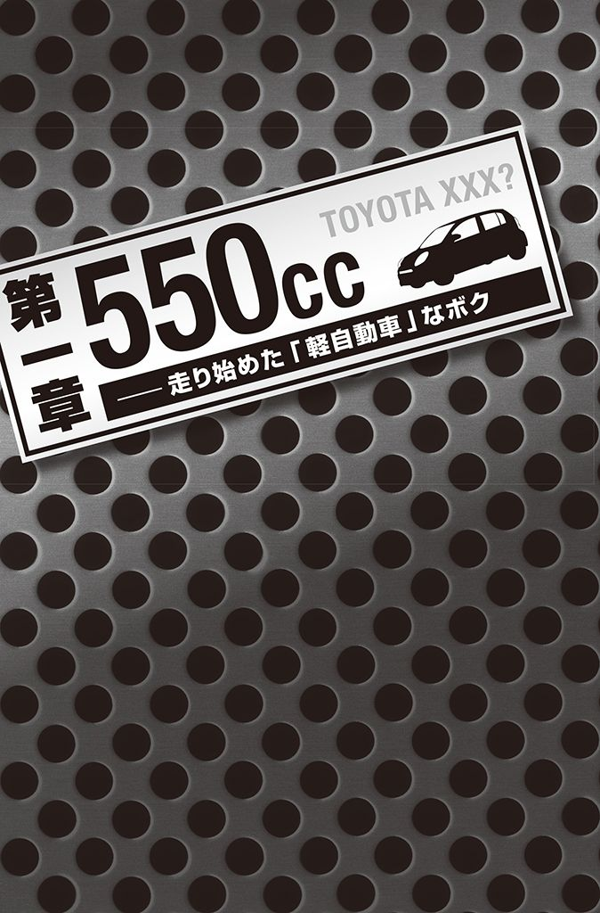
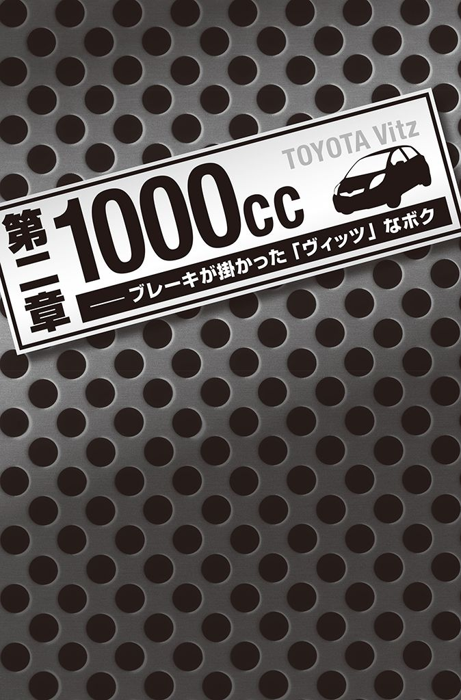
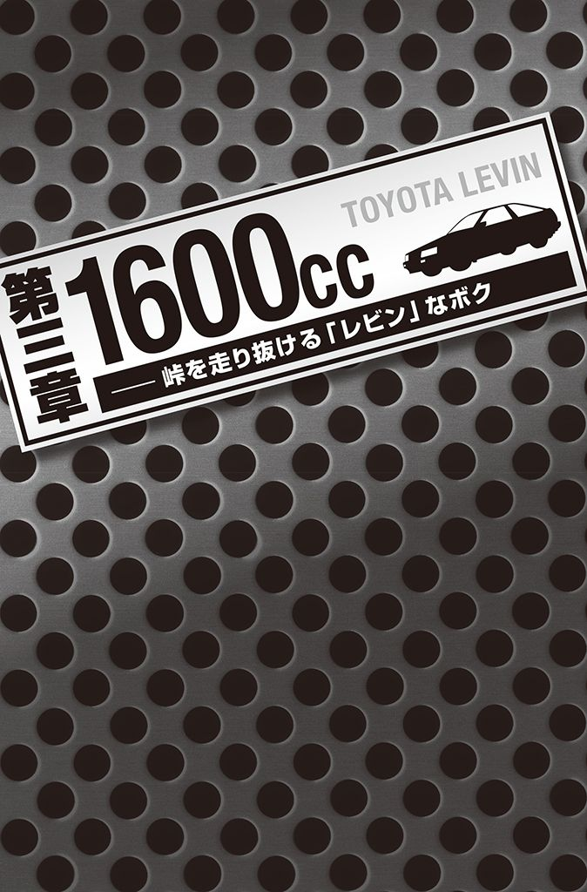
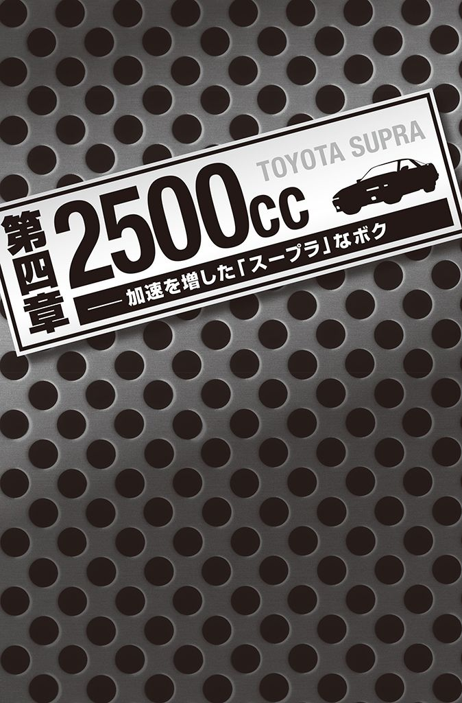
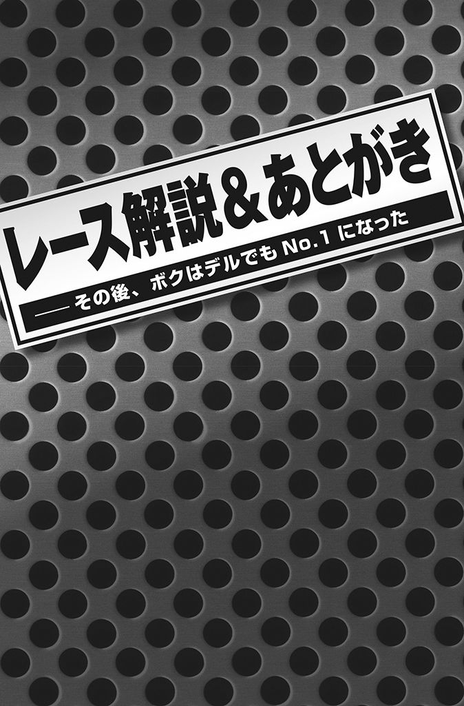

| 人生で大切なことはすべてプラスドライバーが教えてくれた。 | |
| 原マサヒコ | |
| (2010) | |
人生で大切なことはすべてプラスドライバーが教えてくれた
原マサヒコ
装丁・本文デザイン／松 昭教（ブックウォール）
装画／UTATA
装画協力／高田俊輔（パンピンワークス）
この物語は実話ですが、多少登場人物の名前を変えています。
どうやらオカマを掘ってしまったらしい。
それも、ヤクザのベンツに──。
黒塗りのベンツから、パンチパーマの男が三人飛び出してきて、ボクのスターレットはまたたく間に取り囲まれてしまった。
一人は真っ黒のスーツに、二人は赤と青の柄シャツ。青の柄シャツは、右手にバタフライナイフを持っていた。
「殺される！」
汗ばむ手でスターレットのハンドルを握ったまま、そう思った。
ボクは高校三年生だった。
でも高校には、ほとんど行っていなかった。十八歳になると同時に、大好きだったクルマの免許を取り、毎日イジっては乗りまわしていた。
大好きなクルマに触れるというだけの理由で、ガソリンスタンドのバイトを選び、そのバイトで稼いだお金で免許を取って、中古のスターレットを買ったのだった。
高校は進学校だったため、三年ともなると、周囲は予備校に通ったり、「どこの大学がいいか」なんていう話でもちきりだった。
そんな話題にもついていけないボクには、友達が一人もいなかった。
クルマだけが唯一の友達だと思っていた。キャプテン翼でいうところの「ボールは友達」と同じ原理だ。
そもそも、生まれつき「多汗症」という病気を抱えていたボクは、常に手のひらに汗をかいていた。
普通の人であれば、緊張したときかなんかに出るんだろうが、ボクの場合はどこかのスイッチが壊れているかのように、いつも汗をかいていた。
暑い日も、寒い日も、朝も夜も関係なかった。
そのせいで、手のひらの皮はよくめくれていたし、テストの答案などはフニャフニャになってしまう。ひそひそと「気持ち悪くね？」と声が聞こえることもあったし、人間というもの自体が嫌いになっていた。
人と接することもなく、自然と学校からも足が遠のき、毎日クルマをイジっては乗りまわす。そんなボクを、親は当然よく思っていなかった。
ボクの家は中流の家庭だったが、遠いご先祖様に第十九代総理大臣の原敬という人がいたらしい。歴史の苦手なボクに、そんなことはまったく関係なかったが、その血筋のせいなのか、従兄弟などはとても優秀で、東北地方では名のある大学に通っていた。
母親からは、そんな従兄弟たちと比べられ、「なんでうちの子ばっかりがこんなふうになっちゃうのよ」と、溜め息混じりに蔑んだ目で見られることがたびたびあった。
ついには、母親の怒りも爆発し、「おまえはもう、うちの子じゃない！ この家から出て行きなさい！」と勘当を言い渡された。
高校生ながら家を追い出されてしまったボクは、ボロアパートで一人暮らしを始めた。じめじめした日当たりの悪い四畳半の部屋。
切れかけた蛍光灯が、シミのついた薄い壁を照らす。そんなアパートだった。
高校も卒業が近づいたころ、思う存分にクルマをイジれる自動車整備士になろうと決め、専門学校に通うことにした。
入学金だけは父がこっそりと出してくれたが、生活費や学費は自分でやりくりしなければならなかった。だから、以前にも増してガソリンスタンドのアルバイトに明け暮れた。
一日をバナナ一本で過ごし、バイト先のトイレの洗面所で水を飲んでは空腹を紛らわす、そんなことも多かった。バイト先の店長からは「クルマのガソリンを入れる前に、お前の燃料を補給しろよ」などと笑われながら、食べ物をもらうこともあった。
そんな矢先だった。
バイト先で知り合ってつき合うことになったと思っていた彼女が、実は二股をかけていることがわかり、それと同時に別れを告げられた。
あっという間に振られてしまったボクは、腹いせとばかりにクルマに乗り込み、あてもなく街を飛ばしていた。
「くそ！ どいつもこいつもバカにしやがって！」
そんな暴言を吐きながら、いつもより荒っぽい運転で飛ばしていた。
開けっ放しの窓から風が滑り込むように入ってくる。頭を冷やすにはちょうどよかった。
と、前のクルマが信号で「キッ」と急ブレーキをかけた。
頭に血が上っていたボクは反応が遅れ、慌ててブレーキをかけたもののアスファルトをタイヤが滑った。
ずいぶん長い間、タイヤが鳴った気がしたが、そのあと「ゴン！」という鈍い音とともに追突してしまったのだった。
目の前には、トランク部分に三ツ星マーク。ベンツだ。
ボディは黒塗りで、ガラスにも真っ黒なフィルムが貼られている。小学生の子供が見たって普通のクルマじゃないことがわかる。
鷲が威嚇して羽を広げるように、左右のドアが開き、中からはパンチパーマの男が三人「おらーっ！！！」と大声を出しながら、勢いよく降りてきた。
赤と青の柄シャツと、真っ黒のスーツ。水戸黄門とその脇を固める助さん格さんのようにも見えるが、まったくもって正義の味方ではない。
ウズラのようなボクのスターレットは、あっという間に取り囲まれてしまった。
さすがはベンツ、恐怖も三ツ星だ。
「おい！ なにしてくれてんだよ！ コラ！」
「どこみてんだこのヤロー！」
「バンパーが傷ついてるじゃねぇか、おい！」
青い柄シャツが、バタフライナイフをちらつかせる。
勢い良くドアを開けられ、首根っこをつかまれるボクにはなす術もない。殺されないことだけを祈りつつ、「すいません！ すいません！」と、謝り続けるしかなかった。
罵声を浴びせ続けるヤクザと、謝り続けるボク。周囲には野次馬の姿も見えたが、とてつもなく遠くに感じた。
しばらくしてパトカーがやってきた。
取り囲まれているボクを見て不憫に思ったのか、野次馬の誰かが呼んでくれたのだろう。生まれてはじめて、野次馬に心から感謝をした。
パトカーの姿を見て、青い柄シャツがナイフを隠し、スーツと何やら耳打ちをしている。パトカーから警官が二人降りてきて「どうしました？」と歩み寄ってきた。
すると、急にスーツが大声を出し始めた。
「ああ！ 首がイテぇ！ 首がイテぇ！」
──やられた。さっきまでジャージの後ろで、どっしりと構えていたはずなのに、急に首が痛いと騒ぎ始めたのだ。
結局この事故は傷害扱いとなり、スーツと柄シャツの三人は救急車で搬送された。ボクは九十日間の免許停止となり、保険金を要求されることとなった。
その後は、保険屋さんに仲介に入ってもらって、金銭関係の処理をすることになったのだが、それだけで終わるはずがなかった。
深夜に嫌がらせの電話がかかってくるようになったのだ。
「コラ！ 首がまだイテぇんだよ！ おまえの首も同じ目に遭わせてやろうか！」
「夜道に気をつけろよ！ オイ！」
毎日、毎日、自宅の留守番電話には、何件もの罵声が録音されていった。
もともと誰からも電話などかかってこなかったものだから、自宅の電話は「ヤクザ専用電話」と化した。
ボクは、陽の当たらないボロアパートの部屋の隅で、一人うなだれていた。
お金もない、学歴もない、友達もいない。持病で汗は止まらないし、彼女には裏切られるし、毎日ロクなことがない。
あるのは「不幸自慢大会」で優勝する自信だけ。そもそもそんな大会はないのだが──。
ボクは負け犬だ。
こんな負け犬のボクに未来はあるのだろうか。遠吠えする気力すら起こらない。アパートの裏に住む飼い犬のほうが、まだ威勢よく吠えるだろう。
いっそ、あのスーツとジャージの男たちに身を捧げてしまったほうが、ラクになるのではないだろうか。
呼吸のすべてが溜め息で構成されているような、そんな日々が続いていた。
免許停止の処分を受けていたため、自転車でアルバイト先と専門学校を往復し、寝るしかないようなボロアパートで体を休める。
休日はアパートに閉じこもり、五枚足らずの畳から沸いてくる湿気で、自分自身にカビが生えることすら望む気分で生きていた。
自ずと、自分自身について考える時間が増えていった。ボクには何があるだろうか──。
「ボクには、クルマをイジるくらいしか取り柄がない」
そうか、それならばクルマの世界で一番になってやろうじゃないか。
高校時代、テストの成績はいつもビリだったボクが一番になれるものはクルマしかない。だったら、その世界で一番になればいいんだ。
勘当した親だって認めさせてやる。
気持ち悪いとボクを馬鹿にしたまわりの人たちを、絶対に見返してやる。
それからボクは、専門学校で必死に勉強して二級整備士の資格を取った。
二年後には、学校内で四人だけの枠だったトヨタの入社試験に、四番目の成績で合格することができたのだった。
こうしてボクの「這い上がり人生」は、ここから始まった。
その先に、もっと過酷な未来が待っていることなど知るはずもなかったが──。
人生で大切なことはすべてプラスドライバーが教えてくれた 目次
０ フォーメーション・ラップ
第一章★５５０㏄──走り始めた「軽自動車」なボク
１ お前の人生、オートマ車でいいのか？
２ 晴れの日こそワイパーを動かせ
３ ドリフト処世術
４ スリップストリーム仕事術
５ ひと皮むけたきゃバンパーになれ
６ いつも心にハザードランプを
７ メカニック流「作業興奮力」
８ デキるメカニックの「質問力」
第二章★１０００㏄──ブレーキが掛かった「ヴィッツ」なボク
９ 「チェンジニア」になるな
10 発炎筒のような存在になれ
11 上手い奴はブレーキを使わない
12 コミュニケーションはホイールバランスのごとく
13 速く走りたければ軽くなれ
14 サスペンション会話術
15 撥水コーティング理論
16 優れたドライバーは感謝を忘れない
17 なぜフェラーリは二人乗りなのか？
第三章★１６００㏄──峠を走り抜ける「レビン」なボク
18 バックミラー読書術
19 片手運転のレーサーはいない
20 部下に対しては教習車になれ
21 成長する人は、なぜマフラーを換えるのか
22 クルマも人も「見た目」が９割
23 なぜデキるメカニックはスナップオンを使うのか？
24 ルームランプのような優しさを
25 未来に向かってクラクションを鳴らせ！
第四章★２５００㏄──加速を増した「スープラ」なボク
26 メカニック流「五感勉強法」
27 内輪差で目標達成
28 毎日の暖機運転で未来が変わる
29 若いうちはエンジンルームを磨け！
30 すごいドライブ時間術
31 組織のリーダーはペースカーであれ
32 シガーライター思考を持て
33 ウィニング・ラン
レース解説＆あとがき──その後、ボクはデルでも１になった

トヨタに入社したボクの最初の配属先は、奇しくも実家のすぐ近くだった。
県道の交差点にある営業所で、向かいにはコンビニとレンタルビデオショップがあり、交通量もわりと多い。道路沿いには、ＲＶ車やセダンなど何台かの新車が、「どうよ？」と言わんばかりに並んでいた。
実家のすぐ近くということもあり、何度かこの道を通ったことがあった。
まさか自分が、この営業所に勤めることになるとは思いもよらなかった。
実家からは近いものの、母親から勘当されているボクが、実家の敷居をまたげるはずもなく、仕方なく実家と営業所の中間地点にアパートを借りて、そこから通うことにした。
またしても四畳半のボロアパートだったが、もう慣れっこだった。
社会人として、はじめて踏み入れた職場には、メカニックの先輩が五人いた。
自己紹介なんだろうが、朝礼の挨拶で続けて名前を言われるが、まったくもって覚えられない。
ボクのほかにも、入社した同期が一人いた。色黒で背は低く、山下といった。
眼鏡をしているが、知的な雰囲気はない。顔は背と同様に小さく、あごが細い男だった。
山下は、ボクと違って「トヨタの専門学校」を出ていた。
トヨタの専門学校というのは、トヨタのメカニックの大半が卒業している名門の専門学校で、授業はすべてトヨタ車を使って実施されるという。
当たり前といえば当たり前だが、これがのちに大きな意味を持つとは、このときは知るよしもなかった。
ボクもトヨタの専門学校を受験してはいたのだが、勉強の成績が良くなかったためか、出欠状況が良くなかったためか、書類審査で落とされたのだった。
先輩にも、トヨタの専門学校を卒業した人が多かったため、山下はすぐに先輩の輪に溶け込んでいた。早くも差をつけられた感じがしてしまう。
「トヨタのトップになってやる！」と意気込んで入社したものの、こりゃ同期の山下にも引き離されてしまうかも知れない。
そんな不安に駆られながら、ボクの社会人生活はスタートした。
新人の仕事は雑用が大半を占める。朝は誰よりも早く出社して、駐車場に置いてある数十台ものクルマの鍵開けから始まる。
作業に使う「ウエス」という雑巾や軍手を洗濯して干したり、古いオイルや交換済みの部品などを捨てたりもする。
日中は、作業をする先輩に工具を渡したり、作業後に床を掃除したり、と。当然ながらクルマにはほとんど触らせてもらえない。
そんな日々を繰り返していたある日。
仕事が終わって帰ろうとしていたボクに、先輩の一人である石田さんが話しかけてきた。背が高くて顔の彫りは深く、男前な先輩だった。
「原......だっけか。お前さぁ、クルマは何乗ってんの？」
「あ、はい！ スターレットです！」
ボクはうれしかった。山下と違って、まったく無名の専門学校を出ていたボクは、誰からも話しかけてもらえずにいたからだ。
そんなボクに、はじめて話しかけてくれたのが、二つ年上の石田さんだった。
石田さんは、サラサラの髪をかきあげながら、続けて聞いてくる。
「ふーん、スターレットか。じゃあ、サーキットとか走ってんの？」
「い、いえ、特に何も。オートマ車ですし......」
「はぁ？ オートマぁ？」
「は、はい」
「なんでオートマ車なんだよ！」
突然発せられた大きな声に、ボクはとまどってしまった。何か変なスイッチでも押してしまったかのような豹変ぶりだ。
単純にクルマを探していたとき、見つけたクルマがオートマ車だったというだけだ。
そういえば、教習所ではマニュアル車だったが、坂道発進には何度か失敗して怒られていたし、ギアチェンジは面倒くさかったし、マニュアル車の印象は悪かった。
でも、そんな理由をいうと、さらに怒られそうな気がして、ボクはお茶をにごした。
「や、特に理由はないですけど......」
「じゃあ、マニュアル車に乗れよ」
「え？ ......あ、はい。で、でも、なんでですか？」
「オートマなんておもしろくねぇじゃん。アクセル踏んでたら、勝手にギヤが変わっちゃうんだぜ。自分でギヤを選ぶから楽しいんじゃねえかよ」
「ええ、......そうかも知れないですね」
ボクは中途半端な返事をした。
「考えてもみろよ。クルマに勝手にギヤを決められたらイヤだろ？ なんでもそうだろが。自分がすることを、他人とか周囲から決めつけられたらおもしろくねぇだろ。ちょっと大げさかも知んねーけどさ」
──体の芯を矢で射られたかのように震えた。
石田さんの言っていることが、ちっとも大げさだとは思わなかった。
確かに今までもそうだった。親に決められたとおりに生活し、中学時代の先生に決められたとおりの高校に通っていた。
そして、そんな自分の人生にやるせない思いを感じていた。
しばらくしてボクは、オートマのスターレットを中古車屋さんに売った。
もともとが安かったので、大した金額にはならなかったが、メンテナンスがちゃんとしてあるところは評価してもらえた。
そのお金と初任給を合わせて、新しいクルマを買ったのだ。
新しいクルマは、走り屋に愛される名車ＡＥ86レビン。通称「ハチロク」だ。赤と黒のツートンカラーは少し色あせていて、エンジンルームを見ても、至るところが古めかしい。
「ところどころ調子が悪そうですけど、そのぶん安くしますので」
中古車屋のオヤジはそう言ったが、構わなかった。
なんたってボクは、プロのメカニックですよ。なんでも直してやりますよ。そんな根拠のない自信を抑えながら、ボクはハチロクを受け取った。
家に帰る道すがら、ボクは何度もギヤチェンジをした。
これからは自分でギヤを変えてやるんだ。誰からも指図されずに、思いどおりにギヤを入れるんだ。思わず左手に力が入る。
そんな希望に満ち溢れながらも、坂道では相変わらずエンストを繰り返していた。
仕事は、相変わらず雑用ばかりだった。先輩のお手伝いと掃除がメインだ。
人生で、これほどしたことがあっただろうかというほど、掃除と洗濯をしていた。
床掃除のときは業務用の洗剤を使うし、水仕事が多いために手はふやけて皮がめくれてくる。主婦の厳しさがよくわかった。
主婦といえば、専業主婦だったボクの母親も、こんなことを毎日繰り返していたんだろうか。ふと母親のことを思い出すが、すぐにかき消した。
日中も、先輩に工具を渡したり、大きな部品を持つのを手伝ったり、汚れた床を拭いたりの繰り返し。
特に多かったのは、「ライトまわり」という仕事だった。点検が必要なクルマが入庫したときに、ヘッドライトやウィンカーが正常に点くか確認する。
先輩が運転席に乗りながら、いろいろなライトを点けるのだが、ボクらはクルマの前に立ち、正常に点いているかを確認しながら「ヘッドライト！ ウィンカー右！ 左！」と、先輩の動作に合わせて大声で叫ばなければならない。
前方が終わると、すぐさまクルマの後ろにまわり、「ブレーキ！ バック！」と、後ろのライトまわりも確認する。
この仕事は、思いのほかキツかった。
何がキツイって、工場内は排気ガスが充満していて空気が汚れているのに、そんな中で大声で何度も叫んでいると、ノドが痛くなってくるのだ。
一日のあいだに何度も水飲み場に行ってうがいをする。そうしなければ、帰るころには酒焼けしたスナックのママみたいな声になっていた。
それに加えて、前方の確認が終わってからすぐ走って後ろに行かないと、先輩から怒鳴られた。
「早くしろ！ コラァ！」
「すいません！」
工場には毎日、ボクと山下の叫ぶ声が響いていた。
しばらくして、ほんの少しだけクルマに触らせてもらえるようになった。
とはいえ、整備が終わったクルマの洗車とワイパーのゴムを換えることぐらいだろうか。
実はあまり知られていないが、ディーラーでは整備をしたあと洗車をする。
台数が少ないときには、一台ずつ手洗いで行ない、忙しくなってくると近所のガソリンスタンドに持っていく。
ボクらは手洗いの専門部隊として、毎日十台近く洗っていた。手は、ますますふやけてくるばかりだ。
ワイパーのゴム交換も、一日に十本近くやった。
ワイパーのゴムは、劣化すると固くなる習性がある。そうなってくると、いくらワイパーを動かしても水をきれいに掃けず、スジが入ってしまう。そうなると交換時期である。
ボクら新人は、新しいワイパーゴムを持って交換作業にあたる。
作業といっても工具はいらない。端っこから古いゴムを抜き取り、また端っこから新しいゴムを入れるだけ。いくらクルマに触れるとはいえ、単純で退屈な作業だった。
これじゃ、製菓工場でお菓子を袋詰めしているパートのオバチャンと変わらないじゃないか、そんな気もしていた。
いつものようにワイパーゴムを交換していると、石田さんに話しかけられた。
「原さぁ」
「はい！」
石田さんは、ボクがハチロクに乗るようになってから、特に話しかけてくれるようになった気がした。ボクはいつも元気に返事をするが、その元気は決まって長くは続かない。
「ワイパーのゴムを長持ちさせる方法って知ってるか？」
「い、いえ、知りません」
「......ちょっとは考えろよ、お前」
「す、すいません。えっと......」
まったく考えたこともなかった。そんなことは、二級整備士の試験でも出てこないし、テレビのクイズ番組でも出てきた試しがない。
ゴムの部品なんだから、古くなったら固くなるだけだ。長持ちさせる方法なんてあるんだろうか。
いくら考えても思いつかず、時間だけが流れていった。
しびれを切らして、石田さんが話し始めた。
「ワイパーはなぁ、晴れの日に使うんだよ」
「え？ ......ワイパーは雨の日に使うんじゃないんですか？」
「お前は何も知らねぇんだな。今週みたいな晴れの日が続くとするだろ。そうするとワイパーのゴムってのは、水分を含んでいるからどんどん固くなっちまうわけだ。そうすると劣化が早くなる。だから、晴れの日でもウィンドウォッシャー液をピュッと出して、ワイパーを二、三回動かしてやるんだよ」
「はぁ......」
「そうすると、ゴムに水分が馴染んで長持ちするってわけだ。勉強になっただろ」
「は、はい！ ありがとうございます！」
ボクは、少しだけプロフェッショナルの仕事を垣間見た気がした。
新人でも交換できる、ただのゴム部品のワイパー。そのワイパーを、少しでも長持ちさせるために、晴れの日でも動かすだなんて聞いたことがなかった。
「目からウロコ」とは、こういうことを言うんだろう。
ウロコがポロポロと音を立てて落ちまくっていた。枚数にして二十五枚くらいだろうか。
──これは、いまの自分にも当てはまるかも知れない。
まだクルマにも触らせてもらえないメカニックの卵。言ってみれば、晴れの日が続いて出番のないワイパーだ。
いつか、雨の日が来て活躍するときが来るかも知れない。いや、来るだろう。
そのときまでに準備をしておかなければならないのではないだろうか。ただ黙って待っているだけでは、固いゴムのように使いものにならなくなってしまう。
そんな気がしてきたボクは、「何かしなきゃいけない」というあせりを急に感じ始めた。ただでさえ山下とは差がついているんだから、固いゴムになる前に何かしなければ。
そうだ、仕事でクルマに触らせてもらえないのなら、自分のクルマをとにかく触ろう。
ボクは、次の日から自分のクルマを分解することにした。
仕事が終わってから、工場に自分のクルマを入れ、特に目的もなく、分解しては組みつける。ボルトをゆるめて、部品を外し、また組みつける。
そうやって、身をもってクルマの構造を学んでいくことにした。
いつか来るであろう、雨の日に備えて。
走り屋に愛されるハチロクというクルマに乗るようになってから、ボクは「ドリフト」に興味を持った。
スポーツカーが後輪から煙を出し、車体を滑らせながらコーナーを曲がっていくドリフト。営業所の前にあるコンビニで、たまたま自動車雑誌を立ち読みしていたときに見つけ、衝撃を受けたのだった。
それからというもの、実際に見てみたい、と強く思うようになっていた。
ボクはその衝動を抑えきれず、雑誌に書かれていた埠頭に行くことを決意した。
休日前の夜、ボクは走り屋がよく出没するという埠頭の近くを走っていた。
市街地と違って、埠頭には建物の明かりがなくて仄暗い。
クルマじゃないと来れないような雰囲気に、少し身震いしながら、その場所を探した。
すると、ほどなくして遠くから、「ギャギャギャギャギャッ」というタイヤのスキール音が微かに聞こえてきた。
「ドリフトだ！」
ボクはその微かな音を頼りに近づき、ついにドリフトをやっている集団に遭遇した。
二十台くらいが列をなし、スピードを上げて広い交差点に突っ込んでは、ドリフトを繰り広げている。
交差点の内側と外側には、ガードレール越しに多くの見物人がいて、みんな両手を上げて大騒ぎしていた。
これはもうお祭りだ。ボクは思わずクルマを停めて、ドリフト走行をしている交差点のガードレールの内側から食い入るように見つめていた。
「ギャギャギャギャギャッ！！！ ブォーン！ プシューッ！！！」
耳をつんざくほどの大音量で、高音やら低音を響かせながら、目の前をスポーツカーが左右に滑り、駆け抜けていく。
はじめて見るドリフトに、ボクの肌は粟立っていた。
音に圧倒されてよく見えていなかったが、一台一台のクルマに焦点を合わせると、なかにはボクと同じハチロクの姿もあった。
真っ黒のレビン。同じ車のはずなのに精悍に見える。
「あんな風に乗りこなしてみたいなぁ......」
自分とそのレビンを重ね合わせるかのように、ボクはその後も真っ黒の車体を目で追い続けていた。
翌日からボクは、近所にあった潰れた家具屋の駐車場跡地で、ドリフトの練習を始めた。
駐車場の隅に置いてあった工事現場用のカラーコーンを立て、そのコーンをカーブに見立ててドリフトをしながら曲がる練習だ。
やり方は雑誌に書いてあったから、なんとなくわかる、と思っていた。
まっすぐスピードを出して、ハンドルを切ると同時にサイドブレーキを引く。
「ギャギャッ！」
それらしく横滑りはするものの、クルマはすぐに止まってしまった。おそらく、アクセルをもっと踏まなきゃいけないのだろうけど、どうしても減速してしまう。
「ブゥーン！ ギャギャッ！」
何度やっても上手くいかない。腕が疲れてきて、運転席の脇で立ち尽くしながら考え込んでいると、「キキッ」と一台のクルマが、駐車場の入り口に横づけして止まった。
よく見ると、埠頭で見かけた真っ黒のレビンだ。
「あのレビンは！」
助手席の窓が静かに降り、彫りの深い顔がニヤッとこちらをのぞく。
──石田さんだった。
「おう。原じゃねぇか。ドリフトの練習か？」
「あ、はい！ え？ 石田さん、どうしてそのクルマに......」
「あぁ、これは高校の後輩のクルマ。コイツコイツ」
そう言って、親指で運転席を指した。
すると、奥からハンドルを握ったまま、短髪の男の子がニコッと会釈をしてくる。
あっけにとられながら会釈を返すボクに、石田さんは続ける。
「コイツもドリフトやるんだけどさぁ、俺が教えてやってんだよ。まだまだアマチュアだけどな」
あの黒いレビンが石田さんの後輩で、石田さんがドリフトを教えていたなんて。驚いたのと同時に「これは絶好のチャンスだ」と思ったボクは、恐る恐る切り出してみた。
「あの......、どうしてもうまくドリフトができないので、ちょっとボクにも教えてもらっていいですか？」
「......おう。じゃ、ちょっとやってみろよ」
「は、はい！」
ボクは慌てて運転席に乗り込み、キーをまわした。
さっきと同じように直線でスピードを上げ、減速と同時にサイドブレーキを引く。
クルマが滑り出したらアクセルを踏んだ。
「ブゥーン！ ギャギャッ！」
さっきと同じように止まってしまう。バンパーがカラーコーンにぶつかり、目の前を転がっていく。
やっぱりダメだ。
ガックリと肩を落としながら真っ黒のレビンに目をやると、石田さんが大きな声で叫んでいた。
「原ぁ！ 滑り出して横を向いてもアクセルは踏み込め！ そうするともっと滑り出すから、そこでハンドルを逆に切るんだよ！ あとなぁ、視線は進行方向をずっと見ておけ！」
「は、はい！ わかりました！」
ボクは焦りながらカラーコーンを元に戻し、再び挑戦した。
スピードを上げて減速し、サイドブレーキ。
滑り出したところで、思い切ってアクセルを踏んだ。
「ギャギャギャギャギャッ！！！」
後輪が滑り出す。
焦りながら石田さんに言われたことを思い出し、ハンドルを逆に切りながら、進行方向を見据えてアクセルを踏み込む。
クルマの後ろ側がどんどん外に膨らんできた。ボクはすぐにハンドルを反対側に切り、目を瞑ってアクセルを踏んだ。
気がつくと、カラーコーンで作ったカーブを走り抜けていた。
「......できたっ！ ドリフトができたっ!!」
ボクは運転席で飛び跳ねんばかりに喜んだ。
クルマに天井があることが恨めしい。こいつがオープンカーだったら、今ごろシートの上でジャンプをしているだろう。
クルマを止めて真っ黒のレビンに目をやると、すでにその場を立ち去ろうと走り出していた。助手席からは、石田さんの手が伸びてきて、Ｖサインを示していた。
「ありがとうございます！」
ボクは、見えなくなりそうな黒いレビンに、思わず大声でお礼を言っていた。
「横を向いてもアクセルを踏んでいけ。視線は常に進行方向を見ておけ」
ボクは、石田さんから言われたことを反芻しながら、練習を再開しようと思った。
ブツブツ言いながら運転席に向かう姿は、さながら念仏を唱える坊さんのようだったに違いない。ドリフトの練習をする坊さんはいないだろうが。
そんな怪しい念仏を唱えているうちに、ボクの今までの人生も、ドリフトみたいなものだと思えてきた。
学生時代から、バスケをやってみたり、水泳をやってみたり、ギターをやってみたり、いろいろと手を出してはいたけれど、どれもアクセルは踏み込めていなかった。
進行方向もわからずに、あっちに行ったり、こっちに行ったりと、フラフラしていた。ときには、ガードレールに擦ったりもしていたように思う。
ドリフトのように左右に振れることがあったとしても、常に進む方向を見ながら、アクセルを思いっ切り踏み込んでいかなきゃいけなかったんじゃないだろうか。
そんなことを考えながらボクは、空が明るくなるまでアクセルを踏み続けていた。
営業所の近くに住んでいたこともあり、通勤には歩いて五分とかからなかった。
職場には、クルマで三十分もかけて通っている社員もいるようだったので、ボクは恵まれていたのかも知れない。
とは言っても、ボロアパートだから近いことだけが取り柄だ。
部屋には何もなかった。高校のときから使っているぺったんこの布団が敷いてあるだけ。今どき、安い旅館でももう少しまともな設備があるはずだ。そう思っていた。
通勤の途中には、閑静な住宅街があり、ボクはその中をくぐり抜けるように歩いて通勤していた。
ある朝、通勤路を歩いていると、ゴミ置き場にガラクタが積んであるのが見えた。
前日から少しずつ積み上がっていたようだが、どうやら粗大ゴミの日が近いらしい。
うず高く積まれたゴミの一番上に、きれいなテレビがあるのを見つけた。
サイズはそんなに大きくない。おそらく両手で抱えられる程度だ。
「ずいぶんきれいなテレビだな。まだ使えるんじゃないか？」
そうは思ったものの、テレビを抱えたまま出社するわけにもいかない。帰るときに置いてあったら持って帰ろう、そう思った。
仕事の帰り道、ボクは胸を躍らせながら、少し小走りでゴミ捨て場に向かった。
社会人になって、ゴミ捨て場に向かうのを楽しみにするなんて思いもよらなかったが、そんなことは関係ない。
ゴミ捨て場の姿が見えたとき、ボクは小さくガッツポーズをした。テレビがまだある。
積まれているゴミの陰が、大きなロボットのようにも見えたが、その頭部分に位置するテレビを手に抱え、逃げるように家に帰った。
帰ってすぐにコンセントにつなげてみたところ、電源は入る。
目の前が明るくなり、画面が映った。色は白黒だった。
テレビの下についているツマミをいじってみたり、小学校のときに母親がやっていたように、テレビの側面を叩いたりしたものの、色が浮き上がってくることはなかった。
「まあいいか、白黒でも。何も映らないよりマシだろ」
そう自分に言い聞かせ、久しぶりにテレビのある暮らしを味わった。
ボーッと見入っていると、あっという間に時間は流れて深夜になっていた。
「もう寝なきゃ」と思っていた矢先、軽快な音楽が流れ出した。
──Ｆ１レースだ。
そういえば中学生のとき、よく実家のテレビで見ていた。
アイルトン・セナが好きだったな、事故で亡くなってしまったけれど。
そんなことを思いながら、画面に見入る。
この日は、スペイングランプリだった。
寝るタイミングを逃してしまったボクは、白黒のクルマ達を目で追い続けていた。
おそらく赤いであろうフェラーリのマシンに乗るシューマッハが、ミカ・ハッキネンとトップ争いをしていた。
直線でピッタリと後ろについたシューマッハが、横に並んだかと思ったら、ミカ・ハッキネンを抜き去ってトップに躍り出る。
実況解説では「スリップストリームだ！」と叫んでいた。
解説によると、速い車の後ろにピッタリとくっつくことで、風の抵抗をなくすことができる。そうして加速することで、前の車を追い抜くこともできる、という運転技術らしい。
このグランプリでは結局、シューマッハが優勝した。
石田さんにドリフトを教わってからというもの、以前にも増して職場でも話しかけられるようになっていた。
「ドリフトの調子はどうよ？ 慣れてきたら、サイドブレーキを使わずにやってみろよ。きれいなドリフトができるぞ」
ボクは少しずつ会社に行くのが楽しくなっていた。
学校に行っても話す相手もおらず、特に目的もなくダラダラと通っていたあのころとは、まったく違う感覚をはじめて味わっていた。
そんな楽しげなボクらの様子を見ていたせいか、リーダーから割り振られた仕事は、石田さんの手伝いであることが多かった。
メカニックの仕事は、毎朝リーダーが割り振りを決める。
一つひとつの仕事は、「何時から・何時まで・誰と誰にやらせるか」ということが細かく決められる。その一つの仕事がカードになっており、そのカードが壁にかかった工程ボードに入っているのだ。
石田さんの仕事を手伝うときは、いつもパターンがあった。
手を動かしているときは集中して取り組み、終わってから片づけをしたり掃除をしたりするときに雑談をする、というものだった。
そして、集中して作業をする前に、必ずこう言われた。
「原さぁ、黙って俺の動きを見ててみな」
はじめのうちは、本当に黙って見ているだけだったのだが、何度か見ているうちにあることに気づいた。動きにムダがないのだ。
工具を動かす手、工具を取りに行く足の運び、部品をつける順番、エンジンをかけるタイミング、すべてにおいてムダがない。
そこに気づいてからは、一挙手一投足を見逃さないようにした。
そういえば、入社前に会社のことを知っておかないといけないと思って、トヨタに関する本を少しだけ読んだことがあった。
文章を読んでいると眠くなるのであまり覚えていないが、そこにはたしか「トヨタにはムリ、ムダ、ムラをなくす文化がある」と書いてあったような気がする。石田さんの体にも、この文化が染みついているのだろう。
それからというもの、ボクは手伝いをしながらも、なるべくムダのない動きをするように心がけた。
次に石田さんが何を望んでいるか、こんな動きをするであろうから次に何が必要になるか。石田さんの動きや心理の先を読んで、スムーズに仕事が運ぶように注意するようになっていった。
石田さんの動きを見ているだけで、これほどまでに意識が変わっていくとは、自分でも思わなかった。
そこでふと、昨晩見たＦ１レースを思い出した。
これは、「スリップストリーム」と同じじゃないだろうか。
ピッタリと後ろにつき、風の抵抗をなくして加速する──つまり、正しい技術を身につけることで、自らの成長を加速させることができる。
それだけじゃない。スリップストリームをすることで、前を走るクルマのブレーキングやハンドルの切り方、走るラインの取り方を真後ろで見ながら知ることができる。
そうすることで、自分の走りも磨きをかけることができるだろう。
よし。ボクはこれから、石田さんにスリップストリームをしよう。
ぴったりとマークして、その動きや考え方から多くのことを学んでやろう。そう考えた。
そうすれば、いつか追い抜ける日が来るかもしれない。
そんな思いも沸き出てくるようになっていた。
ボクは色弱だ。白黒のテレビを見ながら思い出した。
赤や青や白など、はっきりとした色は見分けられるが、黄緑色や群青色など、微妙な色づかいになると、とたんにわからなくなってしまう。
だから、どっちみちテレビは白黒でもいいんだ、と開き直っていた。
「そうだよ。そんな繊細な色づかいを出されたってわかんねーんだよ」と、負け惜しみのように自分に言い聞かせていた。
色弱なのは、物心ついたときからだった。
小学校一年生のときも、美術の時間にクラスのみんなで、近所の公園にスケッチをしに行ったが、ボクが描いた絵だけ、木の色や葉っぱの色がみんなと違っていた。
先生はボクの絵を見るなり「違うんじゃないか？」と訝しげな顔をし、クラスメイトは無邪気に「なんだこれ、気持ち悪い！」とバカにした。
大人になったら治るかな、と淡い期待をしていたが、歳を重ねても変わらなかった。
良くもならないし、悪くもならない。身体検査の色覚検査は、いつも引っかかった。
高校生になって、将来の職業を考えたときでも、色弱は障害になった。
料理の道へ進もうにも「きつね色」や「あめ色」がわからない。美容師になりたくても、髪の微妙なカラーリングの違いがわからない。デザイン系に進みたくても、センスのある色づかいがわからない。ボクの進む道は、とても狭いものだと感じた。
そんなボクが「ここしかない」と飛び込んだのがクルマの世界だったのだが、ここでも色の壁が「妖怪ぬりかべ」のように立ちふさがっていた。タッチペンである。
タッチペンとは、クルマのボディについた小さい傷を修正する塗料で、女性のマニキュアのように、小さな筆で「ピッピッ」と塗っていくものだ。
新人の仕事に、先輩が塗るタッチペンを事前に用意しておくこと、というのがあった。
クルマの色も、本当にさまざまな種類がある。同じ白でも「パールホワイト」「クリアホワイト」「マッドホワイト」など、何種類にもおよぶのだ。
よくもそこまで、同じ色に名前をつけられるな、とメーカーのネーミングセンスに感心してしまうくらいだが、同時に「実はどれも同じ色なんじゃないか？ どうせ名前だけカッコつけてんだろ」とも思える。
いずれにせよ、ボクにとっては頭の痛い問題でしかなかった。
「原ぁ！ そこのクラウンのバンパー塗るから、タッチペン用意しとけ！」
横山さんの声が響いた。
横山さんは中堅のメカニックで、茶髪でリーゼントの先輩である。おそらく昔は、相当なワルであることは、サルでもわかる見た目だ。
眉毛も薄く、目尻あたりにかけては、ほとんどウブ毛のみで構成されている。見た目の怖さだけでなく、短気でケンカっぱやいので、先輩の中でも一番恐れていた。
「はい！」
ボクは慌ててタッチペンの在庫が入った箱を持ち、クラウンのもとに行く。
あたふたと色を照らし合わせながら、同じ色を探した。
しかし、まったくわからない。見わける自信はなかったが、やっぱりだ──。
早くしなければ横山さんが来てしまう。焦った、焦れば焦るほど、どの色も同じに見えてくる。ボクの頭の中で警鐘が鳴り響いた。
ほどなくして、横山さんがやってきた。
「よし、塗るか。原ぁ、タッチペン貸せよ」
「......す、すいません。用意できてません」
「はぁ!? 何やってんだよ！」
すべてがスローモーションだった。横山さんの右足が、フワッと上がったと思ったら、次の瞬間ボクのお腹に、足の裏がめり込んできた。
「うっ！」
鈍い音とともにミゾオチに激痛が走り、ボクはその場にうずくまった。
「もういいよ、お前。ったく、使えねえなぁ」
お腹をおさえてヘタり込むボクを尻目に、横山さんは箱から一つのタッチペンをさっと取り出し、舌打ちをしながらクラウンに塗り始めた。
仕事が終わってから、ボクは更衣室の椅子に座って落ち込んでいた。
やっぱり色弱が仇になってしまったか。くそ、妖怪ぬりかべめ。
技術が足りないのであれば必死に覚えればいい。でも、先天的なものだから、色の識別だけはどうしようもないんだよ。
ブツブツ言いながら、更衣室の床を見つめる。
これからずっとお腹を蹴られ続けるんだろうか。腹筋を鍛えておくべきか。いや、それはなんの解決策にもならない。毎回お腹を蹴ってくるとも限らないし......。
何か、色弱を治す方法はないんだろうか。
そんなことを考えていると、ふいに後頭部をバシッと叩かれた。
「おい、帰んねえのか？ なに暗い顔してんだよ」
石田さんだった。
ボクは、色弱でタッチペンを見つけることができず、横山さんに怒られてしまった話の一部始終を話した。
すると、石田さんは眉間にシワを寄せて、まくし立てるように言ってきた。
「はぁ？ そんなことでいちいちヘコんでんじゃねえ！ 軽自動車のバンパーかお前は。見てるこっちの気分も暗くなるだろうがよ」
「......すいません」
「だいたいなぁ、わからなかったら聞きゃいいだろうが！ お前一人でなんでもできるとでも思ってんのか？ お客様はその間ずっと待ってんだよ！ 色弱だか衰弱だか知らねえけど、そんなことはどうでもいいんだよ！」
いや、衰弱ではなくて色弱なんだけどと、そんなことを思いながらもボクは、段々恥ずかしい気持ちになってきた。
確かにお客様が待っているという状況のなかで、自分の色弱なんかが理由で待たせてしまうことはお客様にとっても迷惑だ。
そんなことで、ウジウジと落ち込んでしまってる自分が情けなくなってきた。
「すいませんでした」
そう言って頭を下げながら石田さんを見送り、ボクはハチロクに乗り込んだ。
静まり返る運転席で考えた。
石田さんの言うとおりだ。色がわからないからといって、いちいち軽自動車のバンパーみたいにヘコんでいたらキリがない。
できないものはできないと割り切って、できる人に任せればいいんだ。すべてのことができなくてもいいんだよな。
そう思うと、気持ちがラクになっていった。
そういえば、バンパーはクルマの前方に位置している。
それがゆえに傷つきやすいものだけど、傷がついたら補修すればいいし、ぶつかってヘコんだとしても後ろから叩いて直せばいい。
人間も、そうやって成長していくものなのかも知れないな。
そんなことを考えながら、石田さんに叩かれた後頭部をさすっていた。
これでボクも、少しは頑丈なバンパーになれたかな。
入社して五ヶ月が経つころ、ようやくクルマに乗る仕事をもらえるようになった。
クルマに乗るといってもお客様の車ではなく、社用車、つまり会社が所有しているクルマに乗ることができるというだけである。
メカニックの朝は、「引き取り」と呼ばれる仕事から始まる。整備が必要なお客様のクルマをお客様の自宅まで取りに行くのだ。
そして夕方には、整備が終わったクルマをお客様の自宅に届ける「納車」があり、二つの仕事を合わせて「納引き」と呼んでいた。
メカニックというと、整備工場で黙々とクルマいじりに勤しんでいるイメージだったが、意外にも朝と夕方は、クルマに乗って外出していることが多かった。
「そろそろコイツらも納引きに出すか。じゃあ山下は横山に、原は石田についていけ」
「はい！」
リーダーの指示で石田さんと社用車に同乗し、お客様の自宅に向かった。
帰りは、石田さんがお客様のクルマに乗り、ボクが社用車を運転して帰ってくるという算段である。
内心、横山さんと一緒じゃなくてよかった、と胸をなで下ろしていた。
あんな眉なしリーゼントと、狭い空間で一緒になってしまったら息が詰まってしまう。
それだけじゃなく、「てめー、俺の空気を吸うんじゃねえ！」などと、車内の空気を全部横取りされ、ボクは窒息してしまうんじゃないだろうか。
はたまた、リーゼントの先っちょで刺されてしまうんじゃないだろうか。
心の底から、安堵の息を吐いた。
平和な車内では、石田さんから引き取りの際の注意事項について説明があった。
「俺がお客様のクルマに乗って走るときは、お前は後ろからくっついてくるんだぞ。なんでかわかるか？」
「いえ」
「お客様のクルマが急に止まっちゃうこともあるだろ。そんなときに追突されたりしないようにだよ。あとは、異変にすぐ気づくだろ、後ろを走ってれば」
「なるほど。そういうことですね」
そんなレクチャーを受けながら国道を走っていると、合流地点に差しかかった。
左の車線からトラックがウインカーを出しながら近づいてくる。それに合わせるように、石田さんは減速してトラックに道を譲り、前に入れてやった。
すると、トラックのハザードランプが、二回点滅した。
「ん？ あのトラック、ハザードを点滅させてますよ。止まるんじゃないですかね？」
ボクは、気が利く後輩をアピールしながら、石田さんに聞いた。
すると石田さんは、呆れた顔をしながら、溜め息混じりに口を開いた。
「バーカ。お前はそんなことも知らずにクルマに乗ってんのか？」
「え、あ......はい、知りません」
「こういうときのハザードランプは『譲ってくれてありがとう』って意味なんだよ」
「へぇー、そうなんですかあ、なるほど」
確かに、ボクらの後ろにもクルマが横から入っていたが、同じようにハザードランプを点滅させていた。
そんな光景に感心しながらさらに走っていると、さっき譲った前のトラックが、再びハザードランプを点滅させた。
「石田さん！ 今度こそ止まるんじゃないですか!?」
ボクが少し早口で聞くと、石田さんはさっきよりも五割増しの呆れ顔で低い声を出す。
「お前はホント、何も知らねえなぁ。ちょっと先のほうを見てみろよ」
そう言われてトラックの前方を見てみると、カーブの先が渋滞していた。
「トラックの後ろを走ってると前が見にくいだろ。だからこのトラックは『この先に渋滞があるから気をつけろよ』って教えてくれてんだよ」
そう言いながら、石田さんはブレーキを踏んで、少しずつ減速していた。
ボクは驚いた。まるで前のトラックと会話をしているかのような石田さんが、超能力者かのように見えてきた。テレパシーなのか？
渋滞で動かない車内で、石田さんがさっきよりも少し落ち着いた声で話し始めた。
「原さぁ、クルマってのは乗ってしまうと、ドライバー同士でお互いに会話ができないだろ。だから、ハザードランプを点滅させてお礼をしたり、注意を促したりするんだよ」
「はい」
ただうなずくだけのボクに、石田さんは続ける。
「でもな。人間ってのは口があるんだよ。だから、どんどん意志表示しなきゃ、何を考えてるか伝わらねえよな」
「......そうですね」
「お前はちゃんと普段から意志表示してるか？」
「......いえ、できてないと思います」
返事を終えるか終えないかぐらいで、ボクは高校時代のことを思い出していた。
友達がいなかったボクは、誰とも話すことなく一日を過ごすことが多かった。クラスメイトにも親にも、自分の思いや考えを伝えることは、ほとんどなかった。
大きな声を出すといえば、バイト先のガソリンスタンドでお金を稼ぐために「いらっしゃいませ！」と言うか、家の中で親に反抗するときくらいだった。
そんなモヤモヤした思い出をかき消すように、石田さんの声で我に返る。
「思ってることはもっと声に出していかなきゃダメだぞ。人間には口があんだからよ」
お客様の家に到着し、石田さんが外に出たのでボクも慌てて外に出ようとする。でも、シートベルトを取り忘れて窓に激突してしまった。ボクは何をやってもダメだ。
お客様からクルマを預かると、石田さんはそれに乗り込んだ。ボクは社用車の運転席に乗りこみ、石田さんのあとを追うように走っていった。
さっきと同じ国道を、さっきとは反対方向に走りながら、社用車の中で一人考えた。
目の前にある四角いハザードランプのボタンを押せば、簡単に「ありがとう」と意思表示ができる。それなのにボクは、社会人になるまで「ありがとう」と、心から人に言ったことがあるんだろうか。
高校時代もそうだ。出席日数が足りなくて進級できそうもなかったボクを、担任の田中先生は気にかけてくれた。
「お前、整備士になりたいんだってな。だったら高校は卒業しなきゃまずいだろ」
そう言って、校長先生にかけ合って、補習のカリキュラムを組んでくれた。ボクはそのカリキュラムを一人で黙々とこなし、なんとか留年を免れて卒業することができた。
でもボクは、すでに一人暮らしを始めていたこともあってアルバイトが忙しく、卒業式に出ることもなければ、先生にお礼を言うこともなかった。
ボクは、「ありがとう」を忘れていたのだ。
そう思った矢先に、母親の顔が浮かんできた。
ボクは今、母親を前にして「ありがとう」を言えるだろうか。自分を生み育ててくれたとはいえ、自分を勘当した母親でもある。
「もうお前はうちの子じゃない！」という母親の怒鳴り声が、耳の奥で甦ってきた。
ハンドルを握る手が、汗でにじんでくるのを感じた。
ボクの心の中にあるハザードランプは、まだ点灯すらしていなかった。
入社して半年が過ぎるころ、ついにお客様のクルマに触らせてもらえる日が来た。
ずっと「おあずけ」をされていた犬が「よし！」と言われた気分である。半年もおあずけをされていたのだから、ボクが犬だったら今ごろ餓死しているところだ。
記念すべき最初の仕事は、オイル交換だった。
オイル交換自体は、自分のクルマでもやったことがあるし、ガソリンスタンドのバイトでもよくやっていたから少しガッカリした。
でも、それと同時に、メカニックとしてのオイル交換は、今までのそれとは少し違っていることに気づいていて、ボクは変な緊張を覚えた。
何が違うのかというと、細かいところへの配慮だ。
今まで石田さんがオイル交換しているところを見ていて、それはわかっていた。スリップストリームをしていて本当によかった。
たとえばオイルを抜くときは、エンジンの上部についているオイルキャップを必ず外す。ここはオイルの注ぎ口なのだが、外すことでオイルの抜けを少しでも良くするためだ。
原理は、八十円くらいで売ってるパックのジュースに似ている。ストローを差して吸い込んでも、途中で苦しくなる。つまり、空気の入り口が必要なのだ。
それから、オイルを抜く前にエンジンはかけておき、エンジンを止めて十分ほどしてからオイルを抜くと良いこともわかっていた。
エンジンをかけておくことで、オイルが柔らかくなって抜けやすい。ただ、エンジンを止めてすぐだと、オイルがエンジンの中から下に落ちてこないため、十分ほど経ってから抜くのが理想なのだ。
まだある。オイル交換のときは、「エレメント」と呼ばれるオイルのフィルターを交換することも多いのだが、コイツを交換するときは「ウエス」と呼んでる布雑巾を、あらかじめエレメントの下に置いておく必要がある。
エレメントを外すと、少しオイルがこぼれるからだ。ディーラーのメカニックは、少しでもエンジンを汚すことが許されなかった。
エンジン自体がオイルで汚れてしまうと、走っている間にそのオイルが焦げて、悪臭を出してしまう。そうすると、お客様は不信感を持ってしまうのだ。
そんな細かい配慮をしながら、オイル交換をしている先輩を日ごろから見ていて、ボクは今まで自分でやってきたことが恥ずかしくなった。たかだかオイル交換ひとつ取ってみても、やっぱりプロは違うのだ。
リーダーから言い渡されたボクのはじめてのオイル交換は、大衆車のカリーナだった。はじめての相手としては申し分ない。ボクはカリーナの前で深呼吸をした。
そして、工具を持ったまま考える。
まず最初にオイルキャップを外して、クルマを持ち上げる。それからドレンをゆるめてオイルを抜いたら、オイルを注ぎにいって、エレメントを外して......。
頭の中で、これからの流れをシミュレーションしていた。完璧だ。ボクの頭の中では、世界一完璧にオイル交換をするメカニックが仁王立ちしてこっちを見ていた。いい笑顔だ。
そんなことを考えているとき、突然後ろから声がして、体がビクンと動く。
「原ぁ、なにボーッとしてんだよ」
振り向くと、すぐ真後ろに石田さんの顔があった。
「あ、いえ、オイル交換をこれからやるんですけど、ちゃんと流れを考えてたんです」
ボクは緊張を隠すかのように、それでいて自信満々に答えた。
ちゃんと仕事の流れを組み立てられる優秀な新人だと思われたかったのかも知れない。「どうです？ こんなボク優秀でしょ？」と言いそうになるのを抑えていたが、石田さんは冷たい視線を見せながら言った。
「まず動けよ。考えるのはそれからだ」
「は、はい」
ボクは慌てて、カリーナのオイルキャップを外した。
そして、油圧式のジャッキでカリーナを持ち上げていると、石田さんが続けた。
「原ぁ、手を動かしながら聞け」
ボクはカリーナのドレンコックをゆるめながら、視線を石田さんのほうに送った。
「いくら事前に頭で考えても、実際やってみたら違うってことがあんだよ。クルマってのは同じように見えて、一台一台違うんだ。だから、動きながら考えるクセをつけたほうがいい。頭より先に手を動かすんだ、わかったか？」
「はい！」
そう言って、石田さんは立ち去った。
ボクはオイルが抜けていくのを確認しながら、新しいオイルを取りに行く。さっきまで頭の中で仁王立ちしていたメカニックは、すでに体育座りをしていた。
確かに動き出すと、いろいろなことが見えてくる。
オイルを取りに行くついでに、エレメントを用意しておけば良かったこと。カリーナのエレメントは、外してもほとんどオイルがこぼれてこないこと。クルマの下まわりをのぞくので、何か不具合はないかな？ とついまわりも見てしまうこと。
頭で組み立てていることと違うことが、目の前で起きていた。
振り返って考えてみると、先輩たちは常に動いているように見えた。止まってしまうと死んでしまう新種の動物のようでもある。
たまには後戻りをしている人もいるのかも知れないが、でも動いてみなければ後戻りが必要だったかどうかもわからないのだ。
それに、動くことで、頭も体もよく働くことがわかった。動くことで次の動きも見えてくる。次の動きが見えてくると、疲れていても体が勝手に動く。
あとで何かの本で読んだのだが、どうやらこれを「作業興奮」というらしい。作業をすることで行動の興奮を促し、力を発揮するのだそうだ。
先輩たちは自然に、この「作業興奮」を起こしていたのだろう。
オイル交換を無事に終え、初体験の相手であるカリーナを洗ってあげながら、つい十分前に言われたことを思い出していた。
何かをしようと思ったら、机上や頭の中で考えているだけではダメだ。
まず行動すること。行動することで見えてくることがある。
今までアルバイトを含めて、何台もオイル交換をしてきたつもりだったが、この一台はまったく違うことをしているみたいだった。言いようのない充実感を味わいながら、リーダーにオイル交換が終わったことを報告した。
そして、記念すべきボクのお客様第一号となったカリーナは、気持ち良さそうに営業所を出ていった。その後ろ姿を見ながら、ボク自身もこれから先にどんなクルマを整備できるのか、興奮していた。
期待とは、まったく逆のことが起こるとも知らずに。
ある朝、同期の山下とボクが、リーダーに呼ばれた。
「山下ぁ！ 原ぁ！ ちょっと来い！」
「はい！」
リーダーはいつも不機嫌そうなしかめっ面をしているので、何か怒られるんじゃないかと、不安そうに近づいていったが、それはいつも余計な心配に終わる。
「お前ら、来月に新人コンクールがあるからよ。二人とも出るんだぞ」
「新人コンクール、......ですか？」
山下が、メガネを人差し指で持ち上げながら聞き返した。
唾を飛ばしながら話すリーダーに耳を傾けてみると、入社一年未満のメカニックを対象に、基礎的な技術を競う大会が翌月に迫っているという。
基礎的な技術というのは、ブレーキの調整や組みつけ、デファレンシャルギヤの調整など三科目あり、いずれも専門学校では少しばかり習っているものだった。
出場するのは同じ地区の同期入社で、総勢五十四人もいるという。
神奈川県で七つある地区ごとに優勝者を決め、その優勝者七名が、県大会に進むという仕組みになっているらしい。
話の途中で気づいたのだが、リーダーは、あからさまに山下のほうを向いて話していた。唾が山下にかかりそうだ。すでに眼鏡にかかっているんじゃないか、と余計な心配までしてしまう。
入社当初から薄々感じてはいたが、この営業所の期待は、常に山下に向けられていた。
トヨタの専門学校を出ているのだから、それは当然の流れだ。トヨタ車の仕組みも学校で習っているし、先輩が教えても理解が早い。
仕事においても、ボクはまだオイル交換くらいしかやっていなかったが、山下はすでにほかの仕事も任されていた。
この間も見たことのない部品を手にしていた。あの部品はなんていう名前なんだろうか。
リーダーの唾がボクの手にかかり、我に返った。
散々説明しておきながら、新人コンクールはこの営業所で特に力を入れていないことも伝えられた。過去にも優勝した人がいないらしい。
「まあ、恥をかかない程度に勉強しておいてな」
リーダーはそう言い残し、しかめっ面でまた仕事に戻っていった。
ボクはなんとも言えない気持ちのまま、下唇を噛みしめて工場に戻った。
いくら期待されていないとはいえ、山下にしか説明していないようなリーダーの話し方に、怒りすら覚えていた。
リーダーはそんなボクの思いをよそに、すぐに仕事を命じてくる。
石田さんとの「引き取り」だ。
ボクと石田さんは社用車に乗り込み、お客様の家に向かった。
「今日のお客様は少し厄介だぞ」
石田さんが運転をしながら白い歯を見せる。
「なんでですか？」
「異音だよ、異音」
「イオン？」
「そう。走ってると変な音がするんだってよ。異音ってのは結構難しいんだこれが」
「そうなんですかぁ」
さっきの怒りはすぐに忘れ、どんな展開になるのか少しワクワクしてきた。
お客様の家は、閑静な住宅街にある大きな一軒家だった。駐車場も屋根つきで広く、クルマは三台も止まっている。
そのうちの一台のクラウンが、今回の患者だ。
「お前もついてこいよ」
そう言われ、ボクは社用車を降りて石田さんのあとをついていく。ええ、どこまでもついていきますよ、なんて言いたくなる。
木目調の豪華な扉の横に、控えめな呼び鈴があった。
石田さんがおもむろに押すと、「はーい」という女性の声が聞こえ、すぐに扉が開いた。
上品そうな栗毛のマダムが顔を出した。
石田さんがすぐに話し始める。
「こんにちは、トヨタの石田です。いつもありがとうございます」
「あら、石田さん。いつもお世話になってます」
「今回は、クラウンから変な音がするということでうかがったんですが」
「ええ、そうなのよ。乗ってると変な音が出るのよね。故障じゃないかしらと思って」
「わかりました。ちょっと拝見させていただいてもよろしいですか？」
そう言うと、マダムと石田さんは鍵を持って駐車場に向かった。ボクはこの家のペットのように二人のあとをついていく。
クラウンを前にして、石田さんが質問を始めた。
「いつからその症状は出てきましたか？」
「そうねぇ......、昨日から急に出てきたかしら」
「どこを走ってて音が出てきました？」
「うーん、駐車場にバックで入れるとき、特に気になったわ」
「ちなみにどんな音がしましたか？」
「そうねぇ、ゴゴゴ......とか、ゴリゴリゴリ......って低い音だったわ」
「そうですか、なるほど」
すると、石田さんが急にしゃがんでクルマの下をのぞき込んだ。
そして、すぐに立ち上がると、石田さんが信じられないようなことを言い出した。
「今日中に直りますので、またお届けにあがります。夕方はご在宅ですか？」
「あら、ホント!? 助かるわぁ！ 夕方四時過ぎならいるから届けてちょうだい！」
マダムは切れ長の細い目を丸くして、うれしそうに答えた。
後ろで聞いていたペットのボクも、二人の影で目を丸くしていた。
この一分たらずの会話で、なぜ「今日中に直ります」と言い切れるんだ？
あなたは何者だ、石田さん！
ボクは首を傾げながら、社用車でクラウンについていき、営業所に戻った。
戻るやいなや石田さんに駆け寄り、種明かしを教えろ、とマジシャンにせがむ客のように尋ねた。
「石田さん！ あのクラウン、なんで今日中に直るってわかったんですか？」
「あ？ さっきの会話聞いてなかったか？」
「え、聞いてましたけど......」
「あれでわかったんだよ」
ボクにはまったくわからなかった。
会話の内容は覚えているものの、あの会話から何がわかるのか見当がつかなかった。
「狐につままれる」とは、こういうことを言うんだろう。
ボクは、頭を下げて石田さんから教えてもらうことにした。
「まず『いつからその症状が出たか』って聞いただろ。あれは基本的な質問だよ。ずっと前から出てるのか突発的に出てるのかで原因が変わってくる。で、『どこを走っているときに出るか』も聞いたよな。あれでも原因が変わってくるんだよ。悪路なのか、普通の道路なのか、曲がっているときだけなのか、直進でも出るのか」
「なるほど」
ボクはメモを取りたい衝動にかられる。しかし書くものは何もない。
「で、最後が『どんな音が出るか』だ。これは個人の感覚だから難しいんだけど、高い音か低い音かがポイントだな。これだけでも故障原因は違うから」
「で、結局、何がわかったんですか？」
「鈍くさいやつだな、お前は。あのお客さんは車庫入れのときに『ゴリゴリ』って低い音が出るって言ったろ。ってことは曲がる部分に関係する部品が原因だ。しかも、昨日から突然出たっていうから、まず疑うのはナックルストッパカバーだな」
ナックルストッパとは、クルマのハンドルを限界までまわしたときにぶつかる足まわりの部品である。クラウンは、この部分にプラスチックのカバーがついているのだが、石田さんは、その部品を疑ったというのだ。
「ナックルストッパカバーだったら下まわりをのぞけば確認できるから見てみたら、案の定、カバーが外れてついてなかったってわけだ。部品はこっちに在庫があるし、取りつければ修理は完了だろ。だから今日中に納車できるって判断したんだよ」
ボクは、石田さんの凄さに呆然とした。凄すぎる。あなたは神だ。石田さんが、教祖を務める宗教があったら、ボクは間違いなく入信するだろう。石田さんが、この壺を買えと言ったら迷いなく買うだろう。それほどの凄さを感じていた。
よくよく考えると、質問を一つするたびに自分の中で仮説を立てていき、それを検証するかのように次の質問をすることで、故障原因を絞り込んでいた。
メカニックは、部品を交換したり、調整する技術が高いだけだと思っていたが、それは薄っぺらい思い込みだった。ボクの家の壁よりも薄っぺらい。
できるメカニックは、話を聞きながら原因を絞り込んでいくという「質問力」が、とてつもなく優れていたのだ。
その後も、石田さんをはじめとする先輩方がお客様と会話をするところを意識して聞いていたが、やはりみな、同じように質問をしていた。
それを見ているうちに段々と、〝ある法則〟があることがつかめてきた。
どうやら中学生のときに英語で習った「５Ｗ１Ｈ」というヤツを使っていたのだ。
「いつ・どこで・だれが・なにを・どのように」というアレだ。
問題が発生したときは、
「それがいつからなのか？」
「どこで発生したのか？」
「どのような現象が起きているのか？」
と、５Ｗ１Ｈに当てはめることで、質問もスラスラ出てくるようになるというわけだ。
「なるほど、そういうことか！」と、ボクはマジシャンの種が見えた喜びを噛みしめた。
そして、その日の夜から、新人コンクールに向けて特訓を始めた。
一人工場に残り、課題となる科目の作業を、自分のクルマで繰り返した。
黙々と作業をするなか、ボクの頭には何度もリーダーの姿が浮かんだ。
山下のほうを向いて説明をするリーダー。
「恥をかかない程度にがんばれよ」というリーダー。
誰も居なくなって静まり返る工場で、ボクは無意識に、何度も何度もつぶやいていた。
「いまに見てろよ」と。

「キュイーン！ ドドドドッ！」
インパクトレンチでタイヤを取りつける音が、工場に響く。
ボクはインパクトレンチを片手に、大粒の汗を流していた。
拳銃のような形をしたインパクトレンチは、持ってみると意外に重い。手にはめた軍手で汗を拭うと、軍手の汚れがおでこにこびりつく。
新人コンクールが近いこともあってなのか、認めてもらいつつあるのかは定かじゃないが、オイル交換だけでなく、いろいろな仕事をやらせてもらえるようになっていた。
この日から任されたのは、タイヤの取りつけと取り外しだ。
呼ばれるたびに、先輩が作業しているクルマのタイヤを取りつける。タイヤを取り外す。その作業を繰り返していた。
「原ぁ！ タイヤつけて！」
「はい！」
「原ぁ！ こっちのタイヤ外して！」
「はい！」
ボクは、拳銃を片手に走りまわる新米刑事のようだった。
あっちこっちから呼ばれては犯人を射殺する。頭の中では『あぶない刑事』のテーマが流れていた。ちなみにボクはユージ派だ。
もう何本目かも数えられなかったが、ちょうど石田さんに呼ばれてタイヤを取りつけていたときだった。
「原さぁ、タイヤ取りつけるとき、なに考えてる？」
「え、いえ、特に何も......」
まさか「あぶない刑事」の気分です、とは言えなかった。
しかもユージです、などとは口が裂けても......。
「けっ」
石田さんの顔が、いつもの呆れ顔に変わった。
「それじゃ、ただのチェンジニアだろが」
「チェンジニア？」
「そうだよ。頭も使わずにただ部品を交換してるだけのエンジニアだよ」
ボクはなんだか恥ずかしくなり、「は、はい......」と中途半端な返事をした。
「いいか、よく聞けよ。タイヤの取りつけをするときってのは、いくつものチェックポイントがあんだよ」
「はい」
ボクは姿勢を正して、石田さんの話に集中した。
「ナットを締めつけるときは対角線で締めろ。そうでないと取りつけが歪んでナットがゆるみやすくなっちまう。それから、タイヤだけじゃなくてブレーキの残量やタイヤの溝も同時にチェックしろ。せっかくタイヤが外れているんだから、チェックしなきゃダメだ。タイヤを持ったときにはタイヤの空気圧を感じろ。少なそうだったらあとで空気を入れてあげるんだよ」
ボクは呆気に取られていた。
ただタイヤを取りつける作業だけだと思っていた。
外れているものを取りつける。それなのに、こんなにも見るところがあったなんて。
何も考えずに、『あぶない刑事』のテーマを口ずさみながらタイヤを取りつけていた自分が、馬鹿みたいに思えた。
「チェンジニア」か。なんだか響きも格好が悪い。
顔を歪めているボクに、石田さんは容赦なく続ける。
「ただ部品を交換するだけの作業だったらなぁ、サンドウィッチ工場のオバちゃんでもできんだよ。お前はプロのメカニックになったんだろ？ だったら頭使って仕事しろよ」
「はい！」
なぜサンドウィッチ工場のオバちゃんが出てきたのかはわからないが、突っ込む余地もないほどの説得力と気迫があった。
単純に、ボクが甘かったのだ。
翌週、新人コンクールが開催された。
隣りの市にある工場地帯の真ん中に、トヨタの研修施設があった。
集まったのは、同期入社の五十四人。入社式以来の顔ぶれだった。
入社式といっても一時間程度で終わったので、特に懐かしさもない。それでも、みんなの体つきがひと回り大きくなっているのは感じ取れた。
いくつかのグループに分けられ、グループごとに与えられた課題をこなしていくらしい。
その課題の達成度合いで、一位から三位までの順位が決められると説明があり、ボクは最終グループだと知らされた。
ほかのグループの順番のとき、会場脇の休憩室でみんなは談笑していた。
トヨタの専門学校を出たヤツがほとんどだから、同窓会のような感覚だったのだろう。
ボクは会場の端で、じっと前のグループを見ながら、頭の中でシミュレーションをしていた。
そして、最終グループの番がやってきた。
課題は、あらかじめ言われていたとおり、ブレーキの組みつけと調整、それからデファレンシャルギヤの調整だった。
採点基準は非常に厳しく、部品を組みつける順番や工具の選び方、ウエスの取り扱いまで、細かく見ていると聞かされていた。
前情報が多かったせいか、工具を持つ手が震えているのを感じた。
それでもボクは、営業所で練習したとおりに、一つずつ着実にこなしていった。
ミスはなかった、はずだ。
すべての課題を終えて、ボクはミスがなかったことに満足しながら集合場所に向かった。
結果がどうであろうと、楽しかった。
仕事では、なかなかやることのない作業を思う存分やらせてもらったからだ。
そして、結果発表の時間がきた。
三位は、同じ営業所の山下だった。
山下は、拍手をするボクのほうを向いて、笑顔でＶサインを出してきた。
唾を出して喜ぶリーダーの顔が浮かび、少し微妙な気分になる。
二位は、「タケダ」という名前が呼ばれた。
タケダは、トヨタの専門学校をトップの成績で卒業した生徒だったと山下から聞いていたのだが、何やら会場がざわついた。
「やっぱり来たかぁ！」
「いいぞ、タケダ！」
しかし一位ではない。いよいよ一位の発表だ。
「原マサヒコ！」
──ボクの名前が呼ばれた。
一瞬なんのことかわからなかったが、「は、はい！」とボクはぎこちなく立ち上がった。
よく知らない名前が呼ばれたせいか、よく知らない顔が出てきたせいか、会場は静まり返り、申し訳程度の拍手だけが耳に入ってきた。
それでもボクは、気持ちが良かった。トヨタの専門学校を卒業したエリートたちを出し抜いて、新人コンクールで優勝したのだ。
「お、おめでとう」
山下が、絵に描いたような苦笑いを浮かべて言ってくれた。お前、渋茶でも飲んだか？ そう言いたくなるのを抑え、「ありがとう！」と、満面の笑みで応えた。
一緒に喜んでくれる同級生もいない。同じ営業所のヤツは苦笑い。
それでも構わなかった。とにかくうれしかった。
これを機に、ボクに対する先輩たちの態度も変わってくれるだろう。仕事も今まで以上に与えてもらえるだろう。大きな仕事も任せてもらえるかもしれない。山下が見たこともないような部品を手にすることができるだろう。そうか、県大会に向けて特別にいろいろと教えてもらえるかも知れないな。
ボクは、ニヤつきが止まらなかった。これまで生きてきた二十年間で、こんなに笑みをこぼしたのは、はじめてじゃないだろうか。
表情筋も驚いているはずだ。明日から筋肉痛になるかも知れない。
しかし、これを機に地獄のような日々を送ることになるとは、有頂天のボクに想像することができるはずもなかった。
新人コンクールで優勝したボクを待ち受けていたのは、大きな拍手喝采でも、大きな仕事でもなく、強烈なイジメだった。賛辞ではなく、ただの惨事だ。
翌朝、出社をしても、誰からも「おめでとう」とは言われなかった。さすがに本部から情報が入っているはずだ。
何か様子がおかしいとは感じていたが、更衣室に入ってその感覚は強いものとなった。
「おはようございます！」
「......」
先輩たちに挨拶をしても無視をされてしまった。
いつもなら気だるそうにでも、挨拶を交わしてくれるはずなのに、その日は違った。
そして、異様な雰囲気に包まれながら自分のロッカーを開けると、いつもならそこにあるはずのボクのツナギが一枚もなく、空っぽになっていた。
「あれ？ ツナギがない！」
ロッカーの扉を確認するが、「原」と書いた紙は貼ってある。
ツナギは毎週二回、クリーニング業者が回収に来て、それと同時に洗い終わったツナギを届けてくれる。つい二日前にも、ボクのツナギは三着ほど届けられていたはずだった。
「クリーニング屋のオッサンが、持ってくんの忘れたんじゃねえの？」
更衣室の隅にある汚い姿見でリーゼントを整えながら、横山さんが言ってきた。
「そんな......」
鏡越しに見えた横山さんの顔は、不敵な笑みを浮かべているようにも映った。
「い、家に一着予備があるので取ってきます！」
始業時間まで十分。走って往復すれば間に合う。
考える間もなく走って家に戻り、なんとか始業の挨拶には間に合った。
始業の挨拶で、所長から新人コンクールの結果が告げられた。
「原くんが見事優勝ということで、おめでとう」
拍手は案の定まばらで、満面の笑みを浮かべる所長以外は、誰もボクに目を合わせてくれなかった。
しかめっ面のリーダーから与えられた仕事は、いつもと変わらずオイル交換だった。
横目で山下を見ると、ファンベルトの交換を任されている。
ボクがまだやったことのない仕事だ。
何かがおかしい。
悶々としたままオイル交換を数台やり終えると、リーダーから次の仕事が言い渡された。
「横山がマフラー交換してるから手伝ってやって」
「わかりました！」
しかめっ面じゃなかったリーダーが気になりながらも工場に向かうと、横山さんはソアラをリフトで持ち上げ、その下にいた。
クルマの下に入るときには帽子をかぶるように言われているが、横山さんはリーゼントの形が崩れるのを嫌がってか、いつも帽子はポケットに入れたままだ。
マフラーはすでに外されていて、新品のマフラーが準備されていた。
「今からマフラー換えっから、お前はこっち側を持っとけよ」
「はい！」
ボクは帽子をかぶり、マフラーの後ろ側を持って支えた。
しばらく前方で作業をしていた横山さんが、首をこちらに向ける。
「よし、たぶんこれで大丈夫だ。ちょっと手ぇ離してみ」
「あ、はい」
手を離すと、マフラーは宙に浮いたような状態になった。前方での固定が終わったのだろう。あとは、ボクが支えていた後ろ側を固定していくわけだ。
と思った瞬間、横山さんがマフラーに添えていた手を離した。
「ガン！」
マフラーはすぐに落ちてきて、ボクの額に激突した。
ボクの目の奥に、一瞬だけ星が映った。
その直後に激痛が走り、生ぬるい液体がおでこを伝って流れていく。
「......おう、大丈夫か、悪ぃな」
額に脈を打つ激痛が走り、ボクはうずくまった。
目の前には、赤い液体がポタポタと流れ続けている、血だ。
「あーあ、もういいよ。医者行ってこいよ、お前」
ボクは、血を出してしまったことを責められていると感じてか、「すいません」と言い残してその場を立ち去り、洗面所で額を洗った。
赤い水が流れていた。幸いにして傷口は浅く、骨までは見えていない。なんとか絆創膏で血を止めることができた。
ジンジンとした額をおさえながら、いそいそと仕事に戻ると、「遅ぇな」とリーダーから言われ、サンドペーパーを手渡された。
サンドペーパーは、部品などを磨くときに使う「紙ヤスリ」だ。
「えっと......、これは、何を磨けば良いんですか？」
「あ、便器」
ボクは、自分の耳を疑った。詰まっているのだろうか。昨晩、耳掃除はしたはずなのに。
次の言葉で、ボクの耳が間違っていないことが明らかとなる。
「トイレが最近汚れてっから、磨いてきて」
こめかみが脈動する。しかし、ボクは何かを悟ったように黙ってトイレに向かった。
鉄製の引き戸を開けて中に入り、手渡されたサンドペーパーで便器を磨き始める。便器は奥のほうが特に汚れていたため、水の中まで手を入れて磨かざるをえなかった。
トヨタの専門学校出身でもないボクが優勝したのが気に入らなかったのだろうか。優勝者を出したことのない営業所から優勝者が出てしまったのが気に入らなかったのだろうか。
ボクには何もわからない。何も考えられない。ただ、悲しみと怒りがこみあげてきて、気がつくと目の前の壁を殴っていた。
「ゴン！ ゴン！ ゴン！」
オンボロの整備工場のくせに、トイレの壁は頑丈にできていやがる。額に貼った絆創膏は汗ではがれかけ、また血がにじみ出していた。
ボクはいつの間にか涙を流していたが、額から流れてくる血と混ざっていて、前がよく見えなかった。
洗面所で再び顔を洗うと、手の甲からも血が流れていることがわかった。
それに気がつくと、急に我に返って激痛を感じた。
あとでわかったが、ボクの手の甲にはヒビが入っていた。
翌日、病院に寄ってから営業所に向かった。
休んだら負けだ、と思った。
でも、ボクの右手は手首から先がギブスと包帯で固められ、動かすことができなかった。
リーダーは心配した様子もない表情で「お前、大丈夫か？ 今日はこれにしておけ」と、発煙筒の束を渡してきた。
発煙筒は、どのクルマにも一個ずつ搭載されている。事故があったときなどに後続車に危険を知らせるための部品だ。
発煙筒には有効期限があり、車検整備のときには、この期限を確認して交換する。
右手の使えないお前は、発煙筒の交換でもしてろ、ってことだろう。
ボクは工場内をフラフラとしながら、クルマの中をのぞき込み、発煙筒の期限が切れているものを探しては交換していた。
左手で発煙筒を交換しながら、ボクは思った。
この部品は、ほとんど使われることがない。いざというときにしか使われないんだ。
でも、その「いざ」という場面では多くの人の役に立つ。
事故を起こしてしまった人、後ろから走ってくるクルマ、多くの人に「事故だ」と伝える重要な役割を持っている。
ボクも「いざ」というときに頼られるような、そんな存在にならなきゃいけない。こんなところで、つまずいている場合じゃないんだ。
ボクは、かろうじて自分の気持ちを奮い立たせていた。
仕事を終えて更衣室に入ると、ボクのロッカーにはいつの間にか、ツナギが三着入っていた。
ボクは「チッ」と舌打ちをして、ロッカーを蹴飛ばした。
新人コンクールの県大会が近づいていたが、結局ボクの手は治ることなく、出場を辞退することになった。
ボクは荒れていた。山の天気のように、日本海の波のように大荒れだった。
相変わらず挨拶はしてもらえない。蹴られる。怒鳴られる。何かが隠される。
毎日のように先輩からのイジメは続き、体も心もボロボロになっていた。
イジメられては、トイレに入って壁を殴る。条件反射のように、壁を殴り続けていた。そのせいで手の甲のヒビは、なかなか治らなかった。
仕事が終わると、家の近くにあった小さな居酒屋に立ち寄り、飲めもしないお酒を飲むようになった。昔は、酒を飲んでくだを巻いているようなサラリーマンを軽蔑するような目で見ていたものだが、自分がまさにそうなっていた。
その日も居酒屋に行き、気持ち良くなるまでお酒を飲んで帰ろうとしたところだった。
かろうじてある意識の中で支払いを済ませ、店を出ようとした瞬間、目の前が真っ白になった。遠くで悲鳴が聞こえた気がしたが、声が小さくなる。
ボクの意識は薄れていった。
──どのくらい時間が経ったのだろう。
気がつくと、真っ白い部屋のベッドで横になっていた。どうやら病院らしい。
右側にある窓の外は真っ暗で、視線を落とすと服は着たままのようだ。
袖がまくられた腕には針が刺さっており、点滴のようなものにつながっている。
自分の身に何が起きたのかわからないまま呆然としていると、白衣を着た白髪混じりの先生が頭を掻きながら部屋に入ってきた。
「お、原さん。目が覚めたようだね」
「あ、はい。ここは......」
「南口大学病院だよ。居酒屋で意識を失って運ばれたんだ」
「そうでしたか、すいません。あの......、ボクはどこか悪いんでしょうか」
「いや、何か病気があるというわけじゃないよ」
ボクは安堵の表情を浮かべる。
「ただ、脳内の血管が少し弱っているね。今までに何か事故に遭われたことはないかな？」
「事故......ですか」
少し、もうろうとしながらも、記憶の糸をたどると甦ってくる。
あれは、高校二年の秋ごろだった──。
ボクはバイクで学校に通っていた。当然、バイク通学は禁止されていたので、学校にも親にも内緒だ。
少し寝坊してしまったボクは、母親の叱責を聞き流しながら家を出て、慌てて県道を飛ばしていた。クルマは渋滞していたが、横からすり抜けることのできるバイクは、通学に向いていた。
ある小さな交差点に差しかかったとき、クルマの間から県道を横断しようとする黒いスポーツカーが顔を出した。
ボクは息を止めてとっさにブレーキをかけたが間に合わず、右太股に黒いバンパーが衝突するのが見えた。
体は宙に浮き上がり、バイクが左前方に倒れていく。スポーツカーのヘッドライトが粉砕し、破片が飛び散る。ボクは三メートルの高さから、倒れるバイクや散らばる部品を眺めていた。すべてが、ゆっくりとした映像として見えた。
やがて、県道と歩道のアスファルトの間にある植木が近づいてきて、体ごと突っ込んだ。視界は真っ暗だった。
「大丈夫か、キミ！」
「何やってんだよ！ おい！」
「やっちまったぁ！」
大人たちのいろいろな声が交錯していた。ボクの足と頭には激痛が走り、しばらく立ち上がれなかった。フルフェイスのヘルメットは、半分脱げかけていたようだ。
「救急車を呼べ！」
誰かが言った。
しかし、ボクはとっさに「救急車は呼ばなくていいです、大丈夫です！」と叫んでいた。
学校にも親にも黙ってのバイク通学である。事故に遭ったことがバレたら学校は停学、親からは何を言われるかわからない。ボクは反射的にそう考えた。
「大丈夫ですから」そう言って、傷だらけのバイクを押しながら家路を急いだ。
途中で何度かめまいがして休まざるをえなかったが、結局病院にも行かず、誰にも事故のことは話していなかった。
もしかしたら、そのときの事故で脳にダメージがあったのかも知れない。
ボクは我に返り、白髪混じりの先生にそのことを話した。
すると先生は、頭を掻きながら言う。
「うーん。確かにその事故のせいかも知れないね。少し血管に影響があるようだ。でも、大きな病気にはつながらないから大丈夫。お酒とタバコは控えるべきだけど」
「そうですか」
ボクは力なく答えた。
「あとはストレスも天敵だよ」
「は、はい」
結局ボクは、タバコとお酒を控えることにした。職場でのストレスは避けようがなかったからだ。
翌日からも、予想どおりにストレスはかかっていた。むしろ、エスカレートしているようにも感じるほどだった。
タバコの火を押しつけられたり、着ているツナギに火を点けられそうにもなった。
トイレの壁も、いいかげん殴り疲れていた。
夜になってボクは、駐車場でハチロクに乗りながら、憔悴しきってある決意をしていた。
もうダメだ。ボクの居場所はここにはないのかも知れない。がんばっても報われない。
──辞めるしかないか。
ボクは、自信喪失という魔の手に片足をつかまれていた。
ふと、クルマのライトが目に入った。
さっき帰ったはずの石田さんが戻ってきたようだった。
「おう、原ぁ、ちょっと忘れ物しちゃったよ。お前、まだ帰ってなかったのか」
ボクが新人コンクールで優勝してから、石田さんはあまり話しかけてくれなかった。
石田さんも中堅のポジションだから、先輩たちに逆らうことはできないということか。社会人になりたてのボクにはわからない。わかりたくもない。
石田さんは、タバコをくわえたままハチロクの助手席に乗ってきた。
ドアは開けたままだった。
「どうしたんだよ、暗い顔して」
「......ボク、もう辞めようかと思っていたんです」
「はぁ？ ......イジメられてるからか」
「ええ」
石田さんは、少し黙り込んだあと、ゆっくりと喋り出した。
「俺だってなあ、イジメられた時期はあったよ」
「......え？」
「生意気なメカニックでな。先輩のやり方に『それは違うと思います！』なんて意見をしてたら、工具でよく殴られたもんだよ、ほら」
そう言って石田さんは、サラサラの髪をかきあげ額を見せた。
額にはボクと同じように、斜めに傷が入っていた。
「ちょっとスピードを出し過ぎてるだけだ」
「え？」
「クルマはさ、スピードを出せば出しただけ、ブレーキも急にかけなきゃいけないだろ」
「ええ」
「今のお前は、急ブレーキがかかってんだよ。ちょっと飛ばし過ぎたのかもな。もうちょっとゆっくり走ってもいいと思うぜ」
「急ブレーキ、ですか......」
石田さんはタバコを深く吸い、煙を吐き出しながら続ける。
「そうそう、下手くそなドライバーって、急にアクセル踏んだり急にブレーキ踏んだりすんだろ。あんな感じだよ。そうするとクルマの燃費は悪いし、ブレーキの減りも早いし、消耗するばっかで、なんもいいことねえの。もっとスマートに走れよ」
「スマートに......走る......」
「あとなぁ、ブレーキがかかっているときは『飛ばしすぎたかな？』って振り返ることが大事なんだよ。ブレーキがかかっている理由を理解することだな。上手いドライバーってのは、アクセルだけでスピードコントロールするから、あまりブレーキ踏まないんだぜ」
はじめは正直よくわからなかったが、だんだんと理解できた気がした。
自分に起きていることにはなんらかの理由があり、その理由が悪いことだと思えば改善していけばいい、そんな風なことを言いたいのだろう、と思った。
「ま、『人生、山あり谷あり』ってこった。いつまでも落ち込んでんなよ」
そう言って、石田さんはハチロクを降りて自分のクルマに乗り、営業所を出ていった。
ボクは力なく石田さんのほうに向かって口にした。
「ありがとうございます」
一人残された車内で、ここ数日の地獄のような日々を思い返していた。
先輩たちにはいろいろな洗礼を受けているが、自分には何も問題がなかったのだろうか。そもそも先輩から洗礼を浴びるのは、認められている証拠なのではないだろうか。
石田さんに言われたことを思い返していたら、少しだけ気分が軽くなってきた。ほんの少しだけ。ひとまず明日からもがんばってみるか、と思い直した。
帰ろうとしたとき、ふと思った。
「あれ？ ......石田さん、忘れ物を取りに来たんじゃ......」
ひとまずがんばってみようと思ったものの、急に何かが変わるわけではなかった。
日々、修行僧のように黙々と作業をしていた。
イジメられるのが怖くなり、おびえて最低限の会話しかしなくなっていたというほうが正しいかも知れない。
石田さんとたまに目が合うこともあったが、特に話しかけるようなこともしなかった。
甘えてばかりでもいけない、と自重していたところもある。
時折、何か言いたそうな目をしているのが気にはなっていた。
仕事は相変わらず地味な作業が多かったが、ポツポツと新しいことも教わっていた。
その一つに「ホイールバランス調整」があった。
タイヤとホイールは、セットになって回転している。ただ、その回転は正確な円を描いていない。タイヤがすり減ってきたりすると、回転のバランスが悪くなってしまい、タイヤの偏磨耗を引き起こしてしまう。
つまり、外側だけが減ってしまうといった偏りが出てしまうのだ。その偏りを直す作業が、ホイールバランス調整というわけだ。
具体的には、ホイールから外したタイヤを「バランサー」という機械に取りつける。
そしてボタンを押すと勝手に回転し、どこに何グラムのおもりをつけるとバランスが取れるか教えてくれるのだ。おもりはバランサーの台座の上に五グラムから五十グラムまで五グラム単位で用意されていて、バランサーに指示されたおもりを選んで取りつける。
取りつける場所は、ホイールの縁の部分だ。
専用のハンマーを使って叩いて打ち込む。タイヤとホイールをバランサーに取りつけてはボタンを押す。
グルグルと回ったあとは、バランサーから指示された重さのおもりをつける。指し示す数字がゼロになったら、次のタイヤを取りつける。
そんな作業を黙々と繰り返していた。
これも慣れてしまえば、何かの工場の作業員になってしまう。
「チェンジニアになるなよ」
そう言っていた石田さんの言葉を思い出す。
「そうは言っても頭が働かないっすよ」
答えるようにぼやきながら、作業を続けた。
バランサーに取りつけられてグルグル回るタイヤを見つめながら、ぼんやりと物思いにふけった。
今のボクは、このすり減ったタイヤみたいなもんだ。
回れば回るほどバランスが崩れ、偏磨耗していく。そんなタイヤだ。
「じゃあ、ボクにとってのおもりとはなんだ。どうしたら数字がゼロになるんだ」
「......ボクか？」
ふと、周囲の対応は、自分が原因ではないか、と思った。
ボクが暗い表情で仕事に取り組んでいるから、誰も話しかけてこないのではないんじゃないか？ ボクが生意気な態度だから、周囲から辛くあたられてしまうんじゃないか？
そういえば、高校時代もそうだった。
いつも眉間にシワを寄せて目つきも悪く、周囲を威嚇していたような気がする。夏の間なんかは眉間に日焼け跡ができたほどだ。あれは少し情けなかった。
何が憎いというわけではなかったが、何かに対して威嚇をしていた。
授業中も寝てばかりで、誰かに話しかけられたとしても愛想が悪かった。話しかけられることが面倒だった。
それでは、友達もできないはずだ。
自らが悪いバランスで回転し続けていたんだから、自業自得ってもんだ。それで「友達もできない」とぼやいているなんて、甘いにもほどがあるだろ。
ボクは、いつの間にか半年前の自分に腹が立っていた。半年前の自分が目の前にいたら、どうしてくれよう。腹に蹴りを入れてやろうか。
「あっ」
思わず声が漏れる。
いつだったか、横山さんから腹に蹴りを入れられたことを思い出した。少し横山さんの気持ちがわかったような気がして、みぞおちの辺りをさすっていた。
悪いバランスになっているとしたら、おもりをつければいい。ボクにとってのおもりとは、まず周囲とのコミュニケーションを自ら変えることだと思った。
今は、とにかく暗くてモゴモゴと話しているし、笑顔なんかはまったくといっていいほど見せたことがない。
もしシンナーの吸い過ぎで、ボクに歯がなかったとしても、誰も気づかないだろう。それほどに笑顔はない。
今までがダメなんだから、今までとは逆のことをすればいい。
声は明るくハキハキと、大きな声で笑顔で相手に対応してみたらどうだろうか。
そんなふうに考えるようになっていった。
ただ、そう言いながら自分を罵る自分もいた。
できるのか？ 他人とのコミュニケーションなんて取れなかったくせに。
そんな自分の声に対して「見てろよ」と言わんばかりに、次の日から試すことにした。
朝の更衣室で、「おはようございます！」と笑顔で挨拶をしてみる。
何人かいた先輩のうち、こちらに視線を合わせる人もいれば見ない人もいる。いずれにしても無視だ。総スカンというやつだ。
それでも構わなかった。翌日も、その次の日も、とにかく無心で繰り返した。
仕事の指示をされたときでも、どんな内容であれ、どんな状況であれ、笑顔で受け答えることにした。
帰りには、どんなに体がつらくとも、笑顔で「お疲れ様でした！」と挨拶をした。
そんなことを繰り返しているうちに、気がつくとボクに対するイジメは少しずつ減ってきているように感じた。相変わらず挨拶を無視されることはあるものの、殴られたり蹴られたり、血を見るような出来事はなくなっていったのだ。
ボクの中のバランサーは、数字のゼロに少し近づいている気がしてきた。
ある休日、ボクは朝から山梨にあるサーキット場にいた。
自動車雑誌が主催する「走行会」に参加するためだ。
嫌なことを振り払うために、アクセルを思いっきり踏みたい、という衝動もあった。
ただ、ドリフトはもういいやと思っていた。ある程度はできるようになっていて、クルマを操る自信は持ちつつあったからだ。
それだけじゃなく、徐々に速さを求めるようになっていた。
以前、そんな話を石田さんにしたところ、「だったらサーキットでも行ってこいよ」と言われ、それ以来タイムを計ることに興味を持ち始めていたのだ。
ボクはサーキットを走るための予備知識を、雑誌やビデオで事前に集めていた。自分の頭の中でのシミュレーションはバッチリだ。すぐにシミュレーションばかりするのは悪い癖かも知れない。
「とにかく動け」という石田さんの言葉が、頭にこびりついて離れない。
「走行会」というのは、普段から自分たちが乗っているクルマでサーキットを走り、タイムを計ったりパーツの性能を試したりすることができるイベントである。自動車雑誌やカーショップなどが主催するこういった走行会は、あちこちで開かれていた。
ボクが参加したこの走行会には、ゲスト講師が来ていた。その雑誌で有名なレーサーだ。
真っ赤なレーシングスーツを着ていて、見事なくらいの金髪だった。遠くから見ると、ガンダムに出てくる「シャア」と見間違うほどだ。
ボクは、迷わずタイムトライアルに挑戦した。
タイム計測用の機械をハチロクのボンネットに取りつけ、ヘルメットを装着してサーキット場を走り出した。
ストレートを三速全開で走り、二速にシフトダウンして一コーナーを曲がる。
「キャキャキャキャッ！」
タイムトライアルだから、ドリフトのようにあまりクルマを滑らせてはいけない。
それから重要なのは「ライン取り」だ。
右カーブのコーナーを走るときは、あらかじめコースの左側を走っておき、コーナーに差しかかったら右側に寄せて、また外に膨らむ。
いわゆる「アウト・イン・アウト」という走り方が理想だ。
雑誌やビデオで研究したことを実践しながら、一本目の走りを終えた。
コースを約八周して、ラップタイムは平均で四十一秒。ほかの参加者と比べても、まずまずの速さだった。そういえば何台ものクルマを抜いていたし。
ボクはその後もタイムトライアルを続け、試行錯誤しながら三本を走り切った。
しかし、気になることがあった。何周してもタイムが四十一秒からほとんど変わらない。
「何がいけないんだ？ 雑誌で見たとおりの走り方をしてるってのに」
ボクは、気になってゲストで来ていた赤いレーサーの「シャア」に声をかけてみた。
「すいません。あのハチロクに乗っているものなんですが......」
「あー、あのハチロクね。なかなか速かったじゃないですか」
「ありがとうございます。ただ......、もう少しタイムを上げたいと思っているんですが、何か直したほうがいいところはないでしょうか？」
「そうですねぇ、......ライン取りも悪くないし、ブレーキングも悪くなかったよね。ちょっとクルマを見せてもらっていいですか？」
「あ、はい」
ドライビングに、特に悪いところがないと言われたことはうれしかったのだが、喜ぶ間もなく、シャアはハチロクに歩み寄っていった。
ボクもそのあとをついていく。
シャアは、ハチロクの周囲をぐるぐると回りながら「ふーん」と言い、さまざまなところに視線を送った。自分の裸をまじまじと見られている気分になり、少しくすぐったい。
「ちょっとトランクとボンネットを開けてもらってもいいですか？」
「あ、はい」
ボクは言われるままに、トランクとボンネットを開けた。
シャアは再び「ふーん」と言葉を漏らす。
裸をまじまじと見られたうえに、トランクとボンネットまで開けてのぞき込まれてしまい、ボクの顔はなぜだか熱くなっていた。
勝手に熱くなるボクに冷や水をかけるように、シャアが話しかけてくる。
「このクルマ、すごく重そうですね」
「え？」
「軽量化とかは何もしていないですか？」
「ケイリョウカ？」
「クルマを軽くするために何か......」
「あ、軽量化、......はい。何も」
「それはいけませんねぇ。クルマを速く走らせるというのは、パワーやテクニックだけではないんですよ。同じパワーのクルマでも、軽いほうが速いんですから」
「......なるほど。具体的にはどうしたらいいですか？」
「まず言えるのは、荷物を載せすぎですね。見るかぎり、余計なものをいろいろと載せているようですから」
シャアは目線でトランクを示しながら言う。
確かにトランクには工具セットや予備のホイールなど、いろいろなモノが所狭しと詰め込まれていた。
「スペアタイヤもいりませんよ」
「え？ ......でも、パンクしたときのために......」
「普段載せておくぶんにはいいですけど、タイムトライアルのときはいらないでしょう」
「あ、確かに」
「それから、後ろの席にも荷物がありますよね。それと、運転席と助手席は欲を言えば、バケットシートがいいでしょうね」
バケットシートとは、軽い素材で作られたシートだ。
存在は知っていたが、とにかく値段が高い。「椅子ごときにこんな高い金は出せないよ、座れりゃ十分」と思っていた自分が恥ずかしくなる。
シャアは続けた。
「あとは、ボンネットもＦＲＰ製のものにすればだいぶ軽くなりますし、ガソリンもこんなに入れておく必要がないです。走るぶんだけでいいでしょ」
「ガソリンもですか？」
「そう、彼を見てみてくださいよ」
指を差された方向を見ると、速そうな紺色のシルビアが止まっていた。後方に目をやると、ドライバーの男の子がガソリンの携行缶を抱えてシルビアに給油している。
「ね、少しでも速く走ろうとする人は、ああやって走る分だけ給油するんです」
ボクは自分の無知に唖然としていた。
そんなボクを横目に、シャアは続けた。
「我々のように速く走ることを仕事にしている人間の場合、自分たちの体重にもかなり気を使っているんです。同じ運転技術を持っているレーサーでも、六十㎏の人間と七十㎏の人間なら、軽いほうが有利ですからね」
ボクは、ただただ驚いていた。
どう走ったら良いのかと、目先の技術にばかりとらわれてしまっていたのだが、クルマ自身を軽くするという発想はまったくなかった。
まだまだやるべきことはあったのに、その視点に気づかず一つのことにとらわれ過ぎていたのだ。ただ、裏を返せば、まだまだ速く走れる余地はあるということだ。
ボクはシャアにお礼を言い、サーキット場をあとにした。
「捨てることで速く走れる」
これは、クルマだけでなく、人間自身もそうかも知れない。
ここのところのボクは、会社での嫌な思いとか、先輩に対する怒りとか、同期の山下に対する妬みとか、いろいろなものを抱え過ぎていたように思う。
そんなモノは、重い荷物になるだけだから早く捨ててしまえばよかったのだ。
余計なことは考えずに、仕事に集中する。
お客様のために全力を尽くす。
それが、今のボクがしなきゃいけないことなんじゃないだろうか。
そんな風に思えてきた。
ボク自身も、まだまだ速く走れる余地がある。
自分の気持ちも、少し軽量化された気がした。
入社して十ヶ月もすると、ようやくお客様の車にも乗らせてもらえるようになった。
つまり、自分がメインで納引きに行けるのだ。一緒に行くパートナーは先輩だったり、営業マンだったり、さまざまだった。
ディーラーには、メカニックのほかにも、いろいろな人たちがいる。花形である営業マンや営業事務、アドバイザーと呼ばれる整備営業など、総勢二十名前後にもなる。
そのなかでも、このころからボクが最も会話をしていたのが、実はパートのおばちゃんだった。
そのおばちゃんは近藤さんといい、おそらく母親と同じくらいの年齢だ。
背は小さく、大きなカールのパーマをあてていた。性格はいつも明るく、ずけずけと言いたいことを言ってくるタイプの人だった。
部品の在庫管理や納引きの手伝いなど、なんでもこなし、何十年も営業所にいる重鎮だ。
納引きを自分主導で行けるようになってから、近藤さんと一緒に行くことが多くなり、行きの車中で話をすることも増えていた。
「うちの娘が音楽をやりはじめてね。家でもバイオリンとか弾いちゃうのよ」
「あ、ボクも昔ギターとかやってましたよ。バンドを組んでライブもやってたんですよ」
「あら、そうなの？ 音楽ってお金がかかるわよね。この間も、娘の部屋を防音工事したのよ。お金がかかるったらありゃしない」
「音楽ってお金かかりますよねぇ。ボクもバイトで忙しかったですよ。朝から晩まで働くこともありましたし」
近藤さんとの会話はとても楽しかった。ときには恋愛の話になることもあった。
「原くん、あなた彼女とかいないの？」
「や、まあ、いいじゃないですか。そんなことより、石田さんは彼女いるんですかねぇ」
「石田くん？ うーん、聞いたことないけど、いるでしょうねぇ、あの子、優しいから」
ボクは、近藤さんとならなんでも話ができた。母親とあまり会話をしてこなかったボクは、どこかで母親と近藤さんをダブらせていたのかも知れない。
そういえば、背も小さく、言いたいことをずけずけと言ってくるところは似ている。
あいにくパーマはかけていないが、少しだけ母親の顔が頭に浮かんでは、すぐにかき消した。
そんなあるとき、いつものように納引きで近藤さんと一緒になり、お客様のクルマを引き取りに行く途中のことだった。
その日は天気が悪く、空を厚みのある雲が覆っていた。小雨がしつこく降っている。
近藤さんの運転で、少し荒れた路面の道路を走っていると、社用車が上下に大きく揺れ出した。
「なんだかもう、揺れがひどいわね」
近藤さんが嘆いた。
「あぁ、たぶんサスペンションがヘタってるんですよ。路面からの衝撃を吸収しきれていないからスプリングのせいで揺れが止まらないんでしょうね」
ボクは思わず、本で読んだことのある知識をひけらかした。クルマのことを誰かに話すことがうれしかったのだ。
「あら、そうなの？」
「ええ、そもそもクルマの足まわりってのはサスペンションとスプリングで構成されているんですよ。路面からの衝撃をスプリングで受けるんですけど、そのスプリングが戻ろうとする力をサスペンションが吸収しているんです。だからサスペンションがヘタっちゃうと、スプリングの力が強くなっちゃって、いつまでも揺れが止まらないんですよね」
ボクは得意げに話していたが、近藤さんは下唇を突き出して答える。
「なんだか良くわかんないわね」
「え？」
「原くんさぁ、どうでもいいけどアナタ、人の話をあまり聞かないわよね。そんなことじゃ彼女もできないわよ」
今まで優しい表情だった近藤さんが、急に眉間にしわを寄せて早口になる。
「いい？ 会話っていうのは相手が言ったことに対して、答えてはじめて成立するのよ。あなたは自分の言いたいことだけを言うことが多いわよね。それから、話をするときは相手が理解しているかどうか確かめながら進めなさいよ。顔の表情とか、相づちとか、そういう相手の反応を確かめながら進めていくものなのよ」
「あ......、はい、すいません」
ボクは、近藤さんのあまりの勢いに圧倒されてしまった。
「あら、ごめんなさいね。つい昔のクセが出ちゃって」
それから近藤さんは、まだＯＬだったころに新人研修の講師として働いていたことを話してくれた。かなり厳しい講師だったらしい。
「だから、あなたみたいにデキの悪い子を見てると、黙っていられなくてね。あら、また言い過ぎちゃったわね」
そう言って笑い出した。ボクも合わせて笑うしかなかったが、頬はひきつっている。
近藤さんの甲高い笑い声は、ほとんど耳に入っていなかった。雨が大粒になってきて、フロントガラスに叩きつけられる音だけが聞こえてくる。
そういえば、ボクは昔からそうだった。
中学生のときも、自分の言いたいことだけを話していた気がする。友達にも、親にも。母親からも注意ばかりされていながら、聞く耳を持たずに、自分の言いたいことをやたらと主張する子供だった。
路面からの衝撃を緩和するサスペンションのように、相手の言ったことを一度は吸収する力が足りなかったのだ。だから誰かと話をしても長続きしないし、あまりボクと会話をしたがらなかったのかも知れない。
近藤さんの言うとおりだ。
揺れる社用車の中で、そんなことを思い知らされていた。
年末も押し迫ったある日のことだった。
営業所では週に一度、全体朝礼が行なわれる。所長からの話があり、全員で「行動指針」とやらを唱和する。
ところがこの日は、いつもと様子が違った。
所長が神妙な面持ちで現れ、ゆっくりと話し始める。
「おはよう。みなさんに残念な話を伝えなければならない。営業チームの滝崎が、会社から解雇されることになった」
社員たちは突然のことで驚きを隠せず、ざわめき出した。
「あー、静かに。滝崎は、以前からクレジットカードの負債を抱えていたらしい。その穴を埋めるために、お客様から預かっていたクルマの購入代金を横領してしまったんだ。これは会社としても許すことはできない。お金を返してもらったうえで解雇するという判断になった」
社員たちは静まり返った。そういえば滝崎さんの姿がない。
滝崎さんといえば、子どもを三人も抱えて、子煩悩として知られる営業マンだった。爽やかな顔立ちで愛想も良く、お客さんからの評判も良かった。成績も悪くなかったはずだ。
そんな滝崎さんがなぜ？ クレジットカードで何を買ってしまったんだ？
社員たちの頭の中では、そんな疑問がグルグルと回っていたはずだ。
重い雰囲気の全体朝礼を終えて、仕事に取りかかる。
その日の仕事は、覚えたての「撥水コーティング」だった。雨の日でも窓ガラスを撥水させるコーティング加工だ。
クルマの窓ガラスに何種類かのコーティング剤を塗りこみ、乾燥させてからふき取る。そうすることで、三ヶ月くらいは雨の日でもガラスが水を弾き、視界が良好となるのだ。
ボクは教わったばかりのやり方で、コーティング剤を塗り込み始めた。
が、正直なところボクは、この撥水コーティングの作業があまり好きではなかった。
ただ黙々とコーティング剤を塗り込み、ふき取る。その繰り返し。
基本的に、単調な仕事が好きではないのかも知れない。今までも何度かそんな態度をしてしまい、石田さんに怒られたことを思い出す。
でも、もっと「おお！ クルマを整備しているよ！」という感覚が得られるような仕事が好きなのだ。そんな不満を喉の奥にしまいながら、何度かコーティング剤を塗り込んで作業を終えた。
試しに水をかけてみたところ、ちゃんと弾いている。
「よし」
ボクは片づけを終えて、リーダーに報告しようと歩き出したところだった。
「待てよ」
石田さんだった。嫌な予感が背中を走る。
「お前、これ、水の弾き方が甘くないか？」
ボクが作業を終えたクルマの、フロントガラスを見ながらつぶやく。
「お前、手ぇ抜いただろ？ ラクしようとしただろ？」
「いえ、そんな......」
「ウソつけ！ この仕上がりを見りゃ、わかんだよ！」
とっさに返答ができなかった。言い訳を組み立てるにしても、頭の中がひっくり返されている。謝るしかない、と腹をくくった。
「すいません......」
石田さんの語気が荒くなってくるのを感じた。
「いいか。ラクしようとして手抜きの撥水コーティングをすると三ヶ月も持たねえんだよ。そうすると、お客さんはどう思うよ？ はじめはいいけど、持ちが悪ければ手を抜かれたって気づくんだよ！ そうするとこの営業所の信用も、俺らメカニックの信用も落ちていくんだよ！ わかってんのかコラ！」
「すいません！」
石田さんが顔を紅潮させながら怒った。色弱のボクでもわかるほどの赤だ。
すると、急に低い声に切り替わる。
「......原さぁ。お前の今の考え方も、解雇された滝崎さんと同じなんだよ」
「え？」
「滝崎さん、目先のお金に目がくらんで、会社のお金に手ぇ出して仕事を失っただろ。お前も同じことになるって言ってんだよ。目先の仕事でラクしようとして、お客様を満足させることができずに信用を失っていくんだ。それでいいのか？」
「いえ......、良くないです」
「だったらなぁ、どんな仕事でも全力でやれ！ このバカ！」
「はい！」
ボクはまた、片づけたばかりの道具を広げて、同じクルマのコーティングをやり直し始めた。
石田さんにこんなに怒鳴られたのは、はじめてかも知れない。
コーティング剤を塗り込む手が、少し震えているのが自分でもわかる。
でも、言われていることは何も間違っていなかった。ボクの心の隙を見事に突かれた思いだ。石田さんは、滝崎さんに対する怒りも吐き出しているような気さえした。
確かにボクは、自分だけのことを考えてしまっていた。あまり気が乗らない仕事で、早く終わらせようとしてしまった。
でも、そんな思いは、お客様にも伝わってしまうんだろう。
営業マンも、お客様との信頼関係をコツコツと積み重ねることが大事だと、石田さんは言いたかったはずだ。
後日、滝崎さんが初犯ではなかったことが判明した。
ただ、クレジットカードを使い込んだ理由はわからないままだった。
「原クンじゃない？」
正月飾りで彩られた営業所のショールームで、女の子に話しかけられた。
ボクは自分の耳を疑った。リーダーから仕事の指示を受けている最中、ショールームにお客さんの気配はしたので「いらっしゃいませ」と声は出していたものの、話しかけられるとは思ってもいなかった。
「はい？」と顔を向けると、肩まで伸びた黒い髪。パッチリとした目。どこかで見たことがある顔だった。
「ほら、高校が同じだった坂下よ！」
「......あー、坂下か。久しぶり」
あまり行っていなかった高校ではあったが、微かな記憶をたどると確かに同じクラスに、坂下という女の子がいたことを思い出した。
「原クン、ここで働いてんだぁ、へぇ～」
「お前、何しにきたの？」
「あら、久しぶりなのに冷たいわね。今日はオイル交換しに来たの。あのクルマ」
坂下が人差し指を向けた先には、カリーナがあった。
「オンボロの中古だけどね。ボーナスで買っちゃったの」
「ボーナスって、今何やってんの？」
「人材派遣会社で人事部の仕事してる」
「へぇ、そうなんだ」
クルマしか知らないボクにとって「人材派遣」も「人事」もよくわからない単語ではあったが、ボクにとってはどうでもよかった。
そんなことより、同世代の女の子と話をしていることが驚異的なことだったのだ。
「あ、原クン、今度お茶しようよ。アタシの連絡先を渡しとくね」
そう言って坂下は、バッグからメモを取り出して、電話番号らしき数字の羅列を書き、渡してきた。
ボクは、どんな顔をしていいのかわからないまま受け取って、ぎこちなく返事をした。
「あ、ああ」
後ろから、水を差すようにリーダーが声をかけてきた。
「原クン、じゃあ次の作業にいこうか」
「あ、あ、はい。じゃあな、坂下」
ボクはそう言ってリーダーのほうに向かった。確実に顔は赤くなっていたはずだった。
「ずいぶんかわいい女と知り合いじゃねえかよ。原もすみに置けねえなあ、おい」
整備工場の入り口で、リーダーにそんな風なことを言われたが、完全に上の空だった。
その日の夜、ボクは勇気を振り絞って坂下に電話をした。
ただでさえ手に汗をかくというのに、いつもより汗の量は増量している。
すぐに電話に出た坂下は、「今日はありがとう！ おかげでカリーナは絶好調だよ！」と明るく応えてくれた。
そして、次の休みに駅前のカフェで待ち合わせることになった。
駅前のカフェに、坂下は遅れて来た。
「ごめーん！ 急に仕事が入っちゃって」
「ああ、いいよ」
女の子と待ち合わせをしたことのないボクには、どう対応していいのか、わからないことばかりだった。
待たされたときは、どんな顔をすべきなんだろう。少し怒ったほうが良いのか？
席は、どこに座るべきなんだろう。やっぱり窓際なんだろうか？
何を注文するべきなんだろう。クリームソーダでもいいのか？
しかし、そんな些細な悩みも忘れてしまうほど、坂下は話しやすかった。
高校を卒業してからのことや仕事のこと、なんでも話すことができた。
結局、クリームソーダはやめてアイスコーヒーを注文したが、味はよくわからなかった。
でも、とにかく楽しかった。好きとかそういうことではなく、純粋に友達っていいな、と思えた。
それから一週間も経たないある日、営業所に「クルマを廃車にしたい」と、坂下から連絡があった。
「原ぁ、これ近藤さんと引き取りに行ってきて。確かお前の知り合いだったよな」
「はい。え......、廃車ですか？ 坂下が？ 何があったんですか？」
「知らねえよ。廃車届けはもう出してあるらしいから書類とクルマを預かってこいよ」
「あ、はい。わかりました」
リーダーから指示を受けたあと、ボクはなんだか変な胸騒ぎがした。
近藤さんを助手席に乗せた社用車で、坂下の家に向かった。
ボクにとってあまり良い思い出のない高校の近くに、坂下の家はあった。
二階建ての一軒家で、庭には駐車場が二台分ある。そこにカリーナは停まっていたのだが、特に外観に異常があるわけではなかった。
近藤さんに「ちょっと待っててくださいね」と言ってクルマを降り、玄関のチャイムを鳴らした。
「はーい」
坂下の声だ。
「トヨタの原です」
「あ、どうぞー」
玄関の扉を開けようとするとき、自分の心臓が強く鳴っているのを、遠くで鳴る警鐘のように感じていた。
重厚な扉を開けたボクの目に飛び込んできたのは、パジャマ姿で車イスに乗っている坂下の姿だった。
「あ、ど、ど......」
「ごめんね、原クン。わざわざ来てもらって」
「......どうした？」
「実は、仕事中にオフィスの階段で転んじゃって。それで動けなくなっちゃったの。脊髄の損傷とかで、体の左側がしびれちゃってさ」
「えっ......」
ボクには理解できる情報量を超えていた。
そんなことはお構いなしに、坂下は続けた。
「これから通院しながらリハビリをやっていくの。大したことないから心配しないで」
「し、仕事はどうなるんだ？」
「しばらくは休職かな。まあちょっと働き過ぎてたから、ちょうどいい休養かもね」
「休養ってお前......」
「でもよかった、体の右側が動くから。ほら、私右利きじゃん？ ペンを握ることはできるから、これを機に社労士の勉強をして資格を取ろうかと思って。動いてくれる体の右側に感謝しないとね」
「そ、そうか......」
「また、お見舞いに来てね」
「ああ」
ボクは、大した言葉もかけてやることができず、クルマの鍵と廃車の書類を預かった。
気の利いた言葉もかけられなかった自分を責めた。
そんなこともできないのか、ボクは。
夜になって、部屋でひとり考えていた。
横になってぼんやりとシミのある天井を見つめていた。坂下のことが衝撃的過ぎた。
二十一歳という若さで、体の半分が動かなくなった気持ちはどんなだろうか。本人は強がっていたものの、絶対につらいはずだ。
思い返すと、坂下の頬に涙の跡が残っていたような気もする。さんざん泣き続けていたんだろう。
もし、ボクが同じことになったら、「体の右側に感謝」だなんて言えるのだろうか。自暴自棄に陥るに違いない。この期に及んで、感謝なんてできるはずがない。
そういえば、ボクが大好きなＦ１のレーサーたちはレースを終えたあとに「こいつが良く走ってくれた」とか「タイヤが思った方向に動いてくれた」とか言っていた。
クルマをまるで、自分の体の一部かのように話し、感謝をしていた。
生まれてからずっと、当たり前のように動いている自分の体。その当たり前のことに、ボクはもっと感謝しなければいけないんじゃないだろうか。
大好きだったＦ１レーサーの一人、アイルトン・セナが雑誌のインタビューで言っていたことを思い出した。
「この世に生を受けたこと、それ自体が最大のチャンスではないか」
ボクは、目頭を熱くしながら、坂下の回復を願うだけだった。
入社して、もう一年近くが経つ春だった。通勤路にも桜が舞い散り始めている。
噂によると、四月からは新人が入ってくるらしい。ボクが先輩になるのだ。
「お前が先輩になるなんてなぁ。世も末だよな」
「そんなぁ、ボクだってがんばってますよ」
石田さんが運転する社用車で国道を走りながら、そんな会話を交わしていた。
最近は、お客様の車に乗ることも認められ、この日もボクが納車を担当していた。
お客様の自宅の駐車場に車を置き、整備の内容を説明して料金をいただく。ひと通りのことはできるようになっていた、と思っていた。
「ブォーン！」
社用車の横を、真っ赤なスポーツカーが追い抜いていく。轟音をまき散らし、その音が社用車の中にまで響きわたる。
「あれって、フェラーリですか？」
「おお、そうだな。テスタロッサだ。あれ、五〇〇馬力もあるんだぜ」
「へえ、スゴいっすね」
「こんな狭い国じゃ、持て余すだろうけどな」
あっという間に小さくなるフェラーリのテールランプを見送りながら、営業所に戻った。もう日は暮れていた。
「原クン、ちょっと来なさい」
営業所に戻ると、所長に呼び出された。石田さんの心配そうな目に見送られつつ、所長に連れられてショールームの隅にあるテーブルまで向かう。
「なんでしょうか？」
所長の前に座るやいなや、待ちきれずにボクのほうから聞いた。
「いやね、非常に言いにくい話なんだけど......」
つむじの辺りが薄くなりつつある頭をボリボリ掻きながら、所長がゆっくり話し始める。
「最近、お客様からクレームが寄せられているんだよ。整備が終わって納車されたクルマのハンドルがベトベトしているらしい」
「......」
「ここのところ三件もそんなクレームをいただいているもんだから、誰がその納車を担当しているか調べてみたところ、すべて原クンだったんだ」
「......すいません」
「まあ、整備をしているんだから手がベトベトしてしまうのは仕方ないんだけどね。せめてお客様の車を納めるときには、手を洗ってから乗るようにしないとな」
「......はい。気をつけます」
──違う。整備をしているからじゃない。ボクが多汗症だから、ベトベトしてるんだ。喉の先まで出かかった言葉が歯の裏で止まる。
ボクは一礼をして、その場を逃げるように離れた。
「どうした？ 一年も経たずにもうクビか？ ハハハ」
休憩室へ戻ってきたボクに、石田さんは軽快に笑いながら話しかけてきた。
「いえ、お客様からのクレームでした」
「なんだそれ？」
ボクは、所長から言われた内容を説明した。
「そっかぁ。ま、所長の言うとおり、車を納めるときは手を洗ってから行けばいいんじゃねえの？」
「違うんです！」
ボクはつい、大きな声を出してしまった。
「な、なんだよ、急にでかい声出しやがって......」
「ボクの病気のせいなんです」
「病気？」
石田さんが眉間にしわを寄せながら、タバコに火を点ける。
「ボクは、物心ついたときから手のひらの汗が止まらない、多汗症という病気なんです。子どものころは、これが原因でいじめられることもありました。フォークダンスのときも女子から『気持ち悪い』と言われたこともあります。テストの答案用紙がフニャフニャになって、先生に怒られることもありました。だって、いつもこうやって手に汗をかいてるんですよ！ 仕方ないじゃないですか！」
ボクが手のひらを見せると、いつものように汗が滴っている。
石田さんは、黙ってそれを一瞥する。
「だから、ボクがどんなに手を洗って車に乗ろうと、お客さんの家に着くころにはベトベトになっているんです。これはもう、どうしようもないんですよ」
ボクは必死になって、多汗症のことを打ち明けていた。
ボクが悪いんじゃない、ボクの手が悪いんです、と言い訳をするように。
「だからどうしたんだよ」
石田さんが、煙を吐きながら言う。
「え？」
「ベトベトになったって、お客さんの家に着いてから掃除すりゃいい話だろ。そんなお前の弱点なんて、俺にはどうでもいいんだよ。前にも言ったよな、色弱だか衰弱だかでお前がヘコんでるときに」
「どうでもいいって......。ボクはこいつにどれだけ苦しめられたか......」
確かに色弱が露呈したときも、他人に任せることで回避すればいいと納得した。
でも、さすがに、ボクの昔からの悩みに対し「どうでもいい」と一蹴する石田さんに、少しだけ怒りの感情がこみ上げた。
そんなボクをヒラリとかわす闘牛士のように、石田さんは淡々と続けた。
「原さぁ、さっきフェラーリ見たよな」
「......はい」
「あのフェラーリ、何人乗りだった？」
「えっと、ツーシーターだから二人乗りですけど」
「じゃ、なんでフェラーリが二人乗りかわかるか？」
「え......、いや」
突然のクイズに、言葉が詰まってしまう。
「あのなぁ、フェラーリってのは、速く走ることだけを考えて作られてんだよ。あらゆるパーツが軽量化されているし、風の抵抗を計算して車高も低く作られているわけ。だから、なるべく人を多く乗せるなんてことは考えていないってわけだ」
「ああ、そうかも知れませんね」
「だろ？ 要は『速く走る』っていう強みに特化しているんだよ。だから弱点もたくさんある。家族五人で出かけようとしたらどうする？ 無理だろ。買い物して荷物がたくさんあったらどうする？ それも無理だ」
「確かに」
「だけどフェラーリからしたら、そんな弱点はどうでもいいんだよ。自分の強みを最大限生かすことしか考えてねえんだから。だから、お前の弱点なんてどうでもいい。そんなことよりも、自分の強みを生かすことを考えろってことだ。俺が言いたいのは」
──自分の強みか。
高校のときは、同級生よりもクルマに詳しかったからこの世界にやってきた。
でも、同じ世界にいる人間なら、クルマに詳しい奴が一杯いるのは当然だ。そのなかでも、さらに自分の強みっていうのは、なんだろう。
確かに、石田さんの言うとおり、今までのボクは自分の弱点にばかり意識がいっていた。あれができない、これができない、ここが劣っている。
そんなことばかり考えていた気がする。
次の日は休みだったが、家でずっと考えていた。
石田さんの言ったことが、頭の中で何度も繰り返された。
「自分の強みを生かすことを考えろ」
──自分の強みってなんだろう。
ボクは、入社してからの一年を振り返っていた。
多汗症ということもあって、細かい作業が苦手だ。汗を拭きながら作業しなければならないので、同期の山下と比べても時間がかかっているのはわかっている。
色に関係することも問題外だ。タッチペンを塗ることも、最近では配線の接続などでも色がわからなくって周囲の人に確認している。
じゃあ、自分が得意なことはなんだ。
ふと、「問題の切り分け」ではないかと思った。
石田さんにくっついてお客様の話を聞いていると、段々とどこが悪いかがわかるようになっていた。
ときには石田さんから「今のお客さんの話を聞いてどこが悪いかわかったか？」と聞かれることがあったが、ちゃんと答えることができることも多い。
うん、ボクの強みは「問題の切り分け」だ。
これからはそこを伸ばしていこう、そう思った。
この決心が、後に大きな意味を持つことになるとは、人生とは良くできたものである。

「新村です！ よろしくお願いします！」
その若者は、ハッキリとした目鼻立ちで坊主頭だった。
おろしたてのツナギがブカブカで、ヒップホップが好きそうな出で立ちだったが、特にそういうわけでもないらしい。
気がつくと入社して一年が経ち、新人が入ったことによって自動的に「先輩」になっていた。同期の山下は「雑用の仕事が減るね」と言って、眼鏡の奥で目を細めていたが、ボクは手放しでは喜べなかった。
新人の新村は、やはりトヨタの専門学校の卒業生だったのだ。
当然のように話題は、担当の先生や扱ったクルマのことで持ちきりになった。
一年前にも見たことのある光景だった。
「今はマジェスタ使ってんの？」
「はい！ アリストも触ったことあります！」
「おいおい、時代だな。俺らのときはマークⅡ触るだけでテンション上がったのになぁ」
そんな盛り上がりを横目で見ながらボクは「またか」と溜め息混じりにつぶやいていた。
技術系の職種で一年の差は大きい。この世界では経験がモノを言うからだ。
でも、トヨタの専門学校を出ていると、ベースとなる知識が圧倒的に深い。それは、この一年の山下の仕事振りを見ていても感じていた。とにかく飲み込みが早いのだ。
「十」を説明されないと理解できないボクに対して、山下は「七」くらい説明されれば理解してしまっている。これは明らかに、知識の差だと感じていた。
そんな奴がもう一人、しかも年下の後輩として入ってきたのである。なんておぞましいことだ。焦らずにはいられなかった。
ボクの不安は予想どおり、二日目で的中することになる。
オイルの缶を運んでいる新村が話しかけてきた。
「原さん、オイルを見てて思ったんですけど、この「10Ｗ─40」とかって、どういう意味なんですかね？」
「え？ あ......それは、その......」
唐突な質問に、ボクは言葉を詰まらせてしまった。もとい、答えを知らなかった。
「それはオイルの粘度、つまり粘り気を表してるんだ。数字が高いほうが粘り気が高いの。Ｗってついているほうはウィンターの意味で、寒さへの強さを表すんだ。数字が低いほど寒さに強くて固まりにくいってことなんだよ」
後ろから、山下が割り込んできた。
普通であれば、会話に割り込まれると腹が立つところだが、このときばかりは救世主にしか見えなかった。
「あ、そうですかぁ。山下さん、ありがとうございます！」
ボクのなかの焦りは、加速度的に上昇し始めた。
このままではまずい。非常にまずい。新人コンクールで優勝することはできたものの、そんなことはみんなからすれば、記憶の彼方に飛んでしまっている。
むしろ普段の仕事振りでいえば、同期の山下に遅れをとっているはずだ。最近の山下は、特に仕事が早い。そこへきて後輩にまで追い抜かされてしまうかも知れない。
ボクは、この状況を切り抜けるための策を考え始めた。
相変わらず夜には一人残って、自分の車をバラしたり組みつけたりしている。そうすることで作業の時間は早くなってきているはずだ。
でも、バラしたり組みつけたりしている部品のことを、ボクはどれだけ理解しているのだろうか。知識というベースの部分が抜けてしまっているように感じた。
そうは言っても、知識をどうやって身につけければいいのだろう。ただでさえ、石田さんにはいろいろなことを教わっている。これ以上、しつこく質問攻めをしてしまうと負担になってしまわないだろうか。別の人から教わるべきなのだろうか。
そうか、まずは本を読めばいいんじゃないのか？
意外と短絡的に、結論として本を読むことに決めた。
まずは、自分の部屋でチューニングカーの専門誌を手に取った。いつもは写真を見ながら流し読みをしてしまっていたが、その日は文字を一字一句残さず追いかけてみる。
こんなことが書かれていたのか、と思うようなページもあったが、チューニングカーのことばかりなので、よくわからないことも多かった。
「まあ、始めはこんなもんかな。続けることが大事だろう」
そう自分を納得させることにした。
翌日、納車を終えて社用車を営業所の駐車場に片づけるときだった。営業所の駐車場は二階建てになっており、整備をする前の車や社用車は一階へ片づけることになっている。
バックで社用車を動かしながら、ボクは後方を見てアクセルを踏む。そのときだった。
「ガリガリ」
右側のバックミラーから鈍い音がした。車内に共鳴するように響く。慌ててブレーキを踏んで右側に目をやると、駐車場の柱に擦っていた。
「あぁ」
ボクは、短い溜め息をつく。嫌な予感を抱えたまま、車を前に進めて入れ直した。
嫌な予感は秒速で的中した。近くにいた石田さんが寄ってきてきたのだ。
「おい、なんか鈍い音がしたぞ」
「......す、すいません。擦ってしまいました」
声ともならない声を発する。
「どれどれ、あーあ」
プラスチックでできたミラーの外枠は削れ、柱には黒いプラスチックが消しゴムのカスのようにこびりついていた。
「まぁ、社用車だからよかったけどよ。お客さんの車だったら大変だぞ、お前」
「すいません」
遠くのほうで新村がこっちを見ていた。ボクは何事もなかったかのように装うため、頭を下げずに「すいません」と言っていた。汚いヤツだ。
「お前さぁ、バックするときどこ見てんだ？」
石田さんが尋問をするように聞いてきた。
「いえ、あの、すいませんでした」
ふと、数年前の事故を思い起こす。ヤクザのベンツにオカマを掘ったときも「どこ見てんだ！」というフレーズを浴びせられた気がした。
「いや、そうじゃなくて。視点をどこにやってるか聞いてるんだよ」
「え？ ......あ、普通に後ろを見てますけども」
「ああ、全然ダメだ」
また石田さんが呆れた顔をした。ボクはこの呆れた顔を一年間で何度見たことだろう。
「後ろを見るなんてのは、最初にやりゃあいいんだよ。実際にバックを始めたらサイドミラーを見ろよ。両サイドの間隔を見ながらバックすんだよ。後ろに人が飛び出して来たときなんかは、ルームミラーを見りゃわかるんだし」
「ミラーだけを見るんですか？」
「そう、顔ごと後ろだけ見てたら、視野が狭くなるんだよ。ルームミラーと左右のバックミラーの三つを見てりゃ十分」
そう言い終わると同時に、石田さんは社用車に乗り込んで前進した。
せっかく片づけたのに。内心そう思った。バックミラーの傷が痛々しく見えた。
ボクに目配せをしてから、石田さんがバックを始める。
そのスピードは、下手な渋滞よりも速かった。
「ウィィィィィィン」
バックギヤ独特の音を出しながら、社用車は吸い込まれるように駐車場に入っていく。石田さんを見ると、顔を前に向け、視線だけが左右に動いていた。本当だ。
「バタン！」
社用車の鍵を閉め、石田さんが歩み寄ってきた。
「バックするってのはこんな感じでやるんだよ。ほら、よく女が『車をバックで入れるときに助手席に手をかけられるとドキっとする』なんて言うだろ。あんなの俺に言わせりゃ嘘だ。助手席に手をかけないとバックできない男は、ただの下手くそだ。わかったか？」
「は、はい」
世の男女に対する怒りをぶつけるかのようにボクに吐き捨て、石田さんはロッカーに向かっていった。
「後ろだけを見てたら視野が狭くなる、か」
確かに石田さんの隣りに乗っていると、そう思うことがよくある。国道を走っていて少し右にずれたと思ったら、後ろからバイクが来ていたり、追い越し車線から外れたと思ったら、後ろからもの凄い勢いのスポーツカーが追い抜いていったり。
この人の目はどこについているんだ、と思うことも多かった。
「視野を広げることが大事なんだな」
そう呟きながら、家路についた。
いつものように本を読もうとしたときに、さっき呟いていたことを思い出した。
本を読むときも、視野を広げたほうがいいんじゃないだろうか。
本棚を見渡してみると、チューニングカー専門誌しか並んでいない。車の本ってのは、もっとあるはずだ。
──そうだ、視野を広げよう。
ボクはそう思い立つと、落ち着く間もなく駅前にある本屋に向かった。
チューニングカー専門誌は、いつも営業所の隣にあるコンビニで買っているので、本屋に足を運ぶこと自体が久しぶりだった。新しい紙の匂いが懐かしい。
「自動車」と書かれた一角に行ってみると、多くの書籍が並んでいた。
車選びのための本、Ｆ１について書かれた本、運転が上手くなるための本、自動車業界について書かれた本......。
ボクは薄っぺらい財布の中を心配しながらも、「視野を広げるんだ」と呪文のように唱え、気になった本をとにかく買っていった。
本を読み始めたボクは、テレビを見る時間が減り、寝る時間が早くなった。活字を追っているうちに、自然と眠くなってくるのだ。
いつもならダラダラとテレビを見てしまい、いつまでも夜更かしをしてしまっていたが、近ごろは、朝の目覚めも良い。これは意外な効用だった。
その日も、清々しく仕事を始めた。
「おはようございます！」と入ったばかりの新村が、威勢良く挨拶してくる。
自分以外に元気よく挨拶するヤツに、まだ慣れなかった。
「変な質問をしてきて恥をかかせるなよ」という気持ちがどこかにあったのかも知れない。ボクは新村を少し避けていた。
その分、同期の山下がよく新村と話をしていたが、最近の山下に元気がないことが少し気がかりだった。
仕事は相変わらず早かったのだが、掃除をしているときに手を止めて物思いにふけっていたり、新村との会話も上の空になっている場面を、ときどき見かけた。
新人が入ってきたことで、徐々に新しい仕事を教わりつつもあった。
ただ、それにも増して以前からやっている仕事が退屈になり始めていた。こんなことを言ってはいけないのかも知れないが「マンネリ」ってヤツだ。
オイルを抜いてはオイルを入れて、タイヤを外してはタイヤをつける。
そんな繰り返しの作業に正直、飽きていた。
つき合いたてのカップルは何をしていても楽しいだろう。映画に行くのも、遊園地に行くのも、二人にとっては経験だ。それが何度も何度も行っていたらドキドキ感もなくなる。
きっとそんな感じだろう。マンネリを感じるほど、女の子とつき合ったこともないが、そんな気がしていた。
そんな思いは、あっけなく石田さんに見透かされていた。最近は、話をするとなると注意を受けることが多くなってきていたが、このときもそうだった。
「原さぁ、ちょっと片手運転になってないか？」
「片手運転、ですか？」
「そう、ちょっと仕事の手ぇ抜いてないか、って」
「え？ そうですか？ ......そんなつもりはないですけど」
嘘だ。自分の心を見透かされたという動揺を、表に出さないよう必死で振る舞っていた。
「なんかこう、ていねいさに欠けるんだよな。怒らないから言ってみろよ。もう覚えた仕事は正直、飽きてきてるだろ」
「怒らないから」という言葉と、石田さんの爽やかな笑顔が保険となったせいか、ボクは正直に打ち明けた。
「...はい。正直、少し手を抜いているかも知れません。何度も同じことをやっているので」
「あ？」
さっきまで笑顔だった石田さんの表情が一変する。騙された、と思ったが遅かった。
「お前、一年ぐらいで手ぇ抜いてどうすんだよ！ お前にとっては何十台目かのクルマかも知れないけどなぁ、お客様にとってはたった一台のクルマなんだよ！ よく考えろ！」
「すいません！」
久々の石田さんの怒った顔を前に、ボクは謝るしかなかった。
確かに、ボクの一日のなかでやるオイル交換は「五台」とか「六台」とカウントしている。正直なところ、三台目も四台目も特に違いはなかった。
でもお客さんからすると、一台しかない車かも知れない。
そのオイル交換をするために、予定を組んでわざわざ来てくれたのかも知れない。
その車を買うために、家族で話し合ったり、ローンの計算をしたり、いろいろな思いがあったはずだ。
半年前にそんなことを言われていたはずが、すっぽりと忘れてしまっていた。
完全にボクが間違っていたんだ。
翌日、山下が飛ばされることになった。
朝礼では飛ばされる営業所が伝えられただけだったが、その後に先輩から聞いた話では、仕事の進め方に問題があったという。
山下はボク以上に手を抜いていた。それも、気合いが入っていないとか、心がこもっていないというレベルのものじゃなかった。
ホイールバランスを調整する振りをして何もしていなかったり、交換するべき部品を交換していなかったらしい。その部品がロッカーに隠されていて、すべてが発覚した。
山下は朝礼で「お世話になりました」とだけ挨拶をして、荷物をまとめた。
翌日からは、都市部から離れた小さな営業所に配属になるらしい。
あっという間に山下が去ったあと、ボクの工具箱に白い紙が挟まっているのを見つけた。
ゴミかと思い引っ張り出すと、何か文字が書いてある。
「ずっと前にツナギを隠したのはボクでした。ごめんなさい。山下」
ボクは、固まってしまった。しばらくその場に突っ立ったままだった。
怒りがこみ上げてくるかと思ったけど、自分でも驚くほど冷静だった。山下もきっと、プレッシャーを感じていたに違いない。
同期で入った得体の知れない学校から出てきたヤツは、新人コンクールで優勝してしまった。気がつけば、もう新人は入ってきてしまった。そんななかで、トヨタの専門学校を出ているというプライドもあったのだろう。
少しでも早く仕事をしなければいけない、という焦りが強かったんじゃないだろうか。
ボクは、少しだけ同情した。そして、今までライバル心ばかりを出してしまい、何も力になってやれなかったことを後悔した。
何とも言えない気持ちのまま家に帰ったが、その日は唯一の楽しみがあることを思い出した。Ｆ１レースだ。
白黒ではあるが、テレビでＦ１を見るのが好きになっていた。
アイルトン・セナの亡き後、ドイツのミハエル・シューマッハというレーサーの走りが好きになった。
このときも、シューマッハが圧倒的な速さを誇っていた。その走りを、ボクは食い入るように見つめた。
Ｆ１のテレビ中継では、「オンボードカメラ」と呼ばれる映像が見られる。おそらくレーサーの頭の上あたりに取りつけられたであろうカメラで、運転する様子が映っている。
Ｆ１レーサーがしっかりとハンドルを握っている様子を見ながら、ふと石田さんに言われたことを思い出した。
「片手運転になってねえか？」
手を抜いてしまった仕事が、今ごろになって悔やまれる。ボクもしっかりとハンドルを握らなければいけないんだ。
ボクの思いに反応するかのように、そのレースに勝ったシューマッハがレース後のインタビューで「次のレースはどう臨むか」と聞かれ、こう答えていた。
「考えうる最高を、常に行なうだけだ」と。
新人の新村が入社して半年が経った。
同期だった山下がいなくなってしまったことで、必然的にボクが新村の面倒を見ていた。
新村は、最初の印象とは違って、真面目で純粋なヤツだった。
先輩が冗談で、「このエンジンオイルは舐めることができるんだ」と言ったときも、「それはスゴイですね！」と真に受けてエンジンオイルを舐めてしまい、先輩たちに止めに入られることもあった。
質問攻めしてくる癖は相変わらずだったが、それも素直さゆえの行動だとわかってきた。
飲み込みは早いが、やはりプロのメカニックとしては新人だ。わからないことも多い。当然ながら、ボクが教えてあげる機会は増えつつあった。
ボクのなかの小さなポリシーとして、「自分がされてきた嫌なことはしたくない」というのがあった。できないからといって腹を蹴ったり、大声で怒鳴ったりということはしたくなかった。
特に新村は純粋なので、そんなことをしたらすぐに辞めてしまうんじゃないか、という不安があったことも事実だ。
ある日、変わったクルマが入庫してきた。
バックミラーが二段になっていて、ルームミラーも二つある。助手席にはなぜかブレーキペダルがついていた。
「乗ったことはあるのに、あらためて見ると変なクルマですよね」
新村が周囲を見まわしながら言う。
ドアの外側には、派手なステッカーで「ドライビングスクール」と書いてある。
近所の駅の裏に教習所があったのだが、路上教習中にエンジンから大きな音が出てきて、この営業所に駆け込んできたらしい。
確かにエンジンをかけると「キャキャキャキャ」と甲高い音が鳴り響いた。
「ファンベルトが切れかけてるんだろ、これ」
そう言ってボクは、エンジンを止めてボンネットを開ける。
目の前には、食べかけのスルメイカのようなファンベルトが、かろうじてエンジンに取りつけられていた。ビンゴだ。
「スゴイですね！ 原さん！」
新村が、クリッとした目を輝かせながら言ってくる。
「エンジンから高い音がしてきたら大体ベルトだよ。消耗品だからね。で、アイドリング状態で出てればファンベルト、曲がるときに出るようならパワステのベルトだよ」
ボクは、半年くらい前に石田さんに教わったことを、そっくりそのまま伝える。
「なるほど！ 音が出る場面によって故障の場所が違うんですね！」
ニッコリと新村に頷きながら、ボクもずいぶんと経験を積んだものだな、と改めて思う。
幸いなことに、この教習車のファンベルトは在庫があったので、その場ですぐに交換してあげることができそうだった。
リーダーからベルトを受け取り、新村と一緒に教習車のもとに向かう。
「よし、じゃあベルト交換してみようか」
「はい！」
新村はうれしそうに工具を握りしめ、ファンベルトを取り外し始めた。
ファンベルトの交換は新人でもできる作業だ。「テンショナ」というベルトの張りを調節する部品を目一杯ゆるめることで、ベルトが取り外せる。取りつけのときは、その逆だ。
ところが、新村はそのテンショナのボルトをゆるめるのに手こずってしまった。
「固いですね、これ」
歯を食いしばりながらボルトをゆるめようとしている新村の後ろで、ボクはヤキモキしていた。お客様も待っているから、時間はあまりかけられない。
おそらく、ボルトにかけた工具の角度が悪かった。
ボルトをゆるめるときには、工具をかける最適な角度がある。その角度が一番力をかけてゆるめることができるのだ。
それは学校で教わることではなく、経験を積んで体で覚えていくことだった。
「ちょっと代わってみ」
ボクはそう言って工具を持ち、テンショナのボルトをガンッとゆるめた。
「あっ」と、新村が声を上げる。
よく見とけよ、と背中で語りながら、ボクは手早くファンベルトを交換し、新しいベルトの張りを調節した。
「これでオッケー」
「......はい」
新村に、クルマを工場から出して洗車をするように伝えた。
クルマを移動する新村の表情が、少し悲しげだったのが気になった。
その日の帰り、更衣室を出たボクは、石田さんに呼び止められた。
「原さぁ、新村の様子はどうよ？ だいぶ慣れたか？」
「ええ、いろいろと教えてますけど、だいぶ慣れたと思います。心配はいりませんよ」
「いや、そう思ってんのはお前だけだろ。あいつは、あのままじゃ伸びねえぞ」
「え？ どういうことですか？」
自分のことならいざ知らず、かわいい後輩のことだったので少しムッとした。
「いや、ここんとこ、お前の教え方を見てたんだけどさ」
石田さんがタバコに火を点けてひと息つく。
「お前、全然アイツにやらせてないだろ。自分でやってばかりで」
「あ......」
「まずはやらせてやれよ。俺らの仕事は経験がすべてなんだから。それで変なやり方をやろうとしたら止めてやったり、あとからやり直しながら教えてやるんだよ。それをお前が全部やってどうすんだバカ」
「......はい」
確かにそのとおりだった。新村が途中でつまずくたびに、ボクはそこで代わって最後までやってしまっていた。
石田さんは、タバコを深く吸い込んで続ける。
「新人のときはなぁ、『最後までやりきった』っていう経験が大事なんだよ。お前だってそうだったんじゃねえの？」
「......はい。そのとおりです」
「だからお前は隣りで見ながら手を添えてやる程度でいいんだよ。そういえば、今日あれ来てただろ。教習車。駅の裏の」
「......それを担当したのもボクらです」
「あれと一緒だよ。教習車って、助手席からブレーキ踏めたり、補助ミラーがついてたりするだろ。それと一緒だ。おお、上手いなオレ」
自分のたとえ話に満足しながら、タバコをもみ消す。
教習車か──。
思えば、石田さんの教え方もそうだった。
運転はボクに任せ、間違ったところだけブレーキを踏んでくれた。全部間違ったとしても、最後に石田さんが後方確認をしてくれていた。
新村の悲しそうな顔が、頭をよぎる。
ボクの教え方は間違っていた。新村、ゴメン。
ご機嫌で帰路につく石田さんと相対して、ボクは少し落ち込みながら家路についた。
その日は、朝から掲示板に貼られている紙が気になっていた。
整備工場とショールームをつなぐ部分に、部品庫という小部屋がある。在庫の部品が保管されている部屋だ。
その部品庫の壁に、緑のフェルト地でできた掲示板があった。その掲示板には、本社からの通達が貼られているのだが、いつもは難しい数字の羅列が多いためか、誰も見向きもしていなかった。
ただ、そのなかの一枚に「技能オリンピック予選のお知らせ」とあったのが気になって仕方なかった。その日の休憩時間に、リーダーに聞いてみた。
「あの、あそこに掲示されている『技能オリンピック』というのはなんでしょうか？」
「ああ、あれか。年に一度やってるメカニックの大会だよ。お前も新人のときにやったろ、新人コンクール。あれの大人版ってやつだ。予選からやって、本大会までやるわけ」
「誰かは必ず出るんですか？」
「まあな。一応義務だから出るけど、誰も予選を通ったことねえよ。あれは準備とか大変なんだから」
リーダーが眉間にしわを寄せながら、細い目をさらに細めて言った。
ボクは少しためらいながら、続けて質問した。
「......石田さんもダメだったんですか？」
「ああ、二年前だっけかアイツ出たの。予選で準優勝だったんだよな。あれがウチの最高だったかな。なんか体調不良だったみたいで石田はスゲー悔しがってたけど」
「そうですか......、今年は誰が出るんですか？」
「今年は横山。アイツ今まで逃げてたから、今年は絶対参加させんの。超やる気なさそうだけどな。あれ？ お前もしかして参加したいのか？ まだまだ早いけどな、お前じゃ」
「ええ、はい」
途中からリーダーの声がほとんど聞こえていなかったボクに、忘れかけていた一つの目標がよみがえってきていた。
「クルマの世界で一番になってやる」
あの日、そう誓ったはずだ。
誰からも相手にされず、親にも勘当され、彼女にフラれ、ヤクザに脅されていたあの日。ボクのなかに忘れかけていた感情が、泉のごとくこみ上げてくるのを感じた。
「原さんのクルマ、速そうですね」
仕事が終わって洗車をしているボクに、新村が話しかけてきた。
まったくスポーツカーに興味のない新村は、実家のエスティマに乗っている。父親の持ち物らしい。
「まあ、クルマ自体はソコソコだけどね。あとは腕でカバーだな」
ボクは得意げに答えるが、そういえば最近サーキットにも行っていないし、仕事が終わってからも、このハチロクを触っていないな。
そんなことを考えた。
「これ、ハチロクってやつですよね？」
「お前、その程度の知識か？」
「ええ、クルマをイジるのは好きなんですけど、走るのはあまり興味ないので」
「そうか、そんなもんか」
ジェネレーションギャップとでもいうのだろうか。そうはいっても一つしか歳は変わらないだろ、と自分に突っ込みを入れつつ洗車を続ける。
「このマフラー、太いですねぇ」
ハチロクの後ろにまわった新村が声をあげる。
ボクは聞こえないフリをしてボンネットを拭きあげていた。
さっきから嫌な予感がしていていたが、それは見事に的中した。
「そういや原さん、なんでみんなマフラーを換えるんですかね？ やっぱ格好いいからですかね？」
明らかにボクのほうを見ながら質問を投げる新村に、少し呆れる。また質問攻めか。
「それはあれだ、カッコだけじゃないよ。速くなるから換えるんだよ」
「へえ、マフラー換えると速くなるんですか。なんで速くなるんですかね？ だったら、新車で売るときからマフラー換えとけばいいのに」
相変わらずの質問攻めに嫌気が差しながら「速くなるったらなるんだよ。もう遅いから帰れ」と子どもをさとすように帰宅を促す。
よく考えたら、自分でもなんで速くなるのか、原理がわかっていない。
新村にはいつも焦らされる。
ボクは家に帰るなり、クルマの本が並べられた本棚をあさり出した。
「マフラーを換えたら速くなる理由、か......」
考えてみると、クルマをイジるといっても、見た目をどうするとカッコよくなるとか、どのパーツはどのメーカーがいいとか、そんなことしか知らなかったことに気がついた。
それを交換することで、どんなメリットがあるのか、デメリットはないのか。
そんな本質的なことを考えたことがなかった。
溜めてあった本をよく読んでみると、それらしきことが書いてあった。
つまり、こういうことだ。
クルマはエアクリーナーという吸気システムから空気を吸い、エンジンの中でガソリンと空気を混ぜ、プラグで着火してその混合気を爆発させる。爆発の力がクルマの動力となるわけだ。その爆発後の空気が排気ガスとなって、マフラーから排出される。
いわば、エンジンは呼吸をしているようなものなのだ。
だから、マフラーを換えるということは、排気をスムーズにすることになる。
このマフラーとセットで交換することが望まれるのが、吸気側のエアクリーナーだ。これも多くのメーカーからチューニングパーツが出ている。
そういえば、ボクも石田さんに勧められて交換したことを思い出した。
「なんであのとき、新村みたいに質問しなかったんだろう」
そんな後悔が頭を過ぎりながら、本を読み続ける。
つまり、パーツを交換して、吸気と排気をスムーズにすることで、クルマにとって多くの呼吸ができるようになるわけだ。
それによって爆発力も高まり、馬力が上がって速くなる。
人間でいうと、差しづめ「有酸素運動」だろうか。
多く入れて多く出す。それによって力が出る、ということか。人間にたとえると呼吸になるが、ほかにも「知識」というものが当てはまらないだろうか。
そんなことを考え始めた。
吸気はすなわち、人から教わったり本から学ぶこと。
排気することは、つまり後輩に教えたり、実際に仕事で実践すること。
そう考えると、今のボクは吸気が多いじゃないか。
石田さんから教わったり、本を読みあさったりしている。でも排気はしているだろうか。
最近は、仕事が終わってからハチロクをいじることも減ってきているし、新村から聞かれたことも、お茶をにごすことが多くなっている。
もっと排気をしていかないといけないんじゃないのか？
クルマだけじゃなく、自分のマフラーも太くしなければ。そうすることで、自分の馬力が上がっていくはずだ。
そう思えてくると同時に、質問攻めしてくる新村に、感謝すら覚えるようになっていた。
質問、大歓迎だ。かかって来い。
営業所はいつも月末になると忙しくなる。
営業マンは、毎月のノルマ達成に向けて躍起になる。営業だけでなく、整備のクルマはすべてカウントしているため、毎月単位で入庫台数や売り上げを出している。だから月末にかけて、滑り込みで整備の仕事が入ってきたりするのだ。
忙しさは、パートの近藤さんも例外ではなかった。在庫部品の棚卸しで、遅くまで残業することになる。その月は、いつになく忙しかった。
近藤さんが、大量の資料と睨めっこをしながら部品を数えていたが、メカニックたちの仕事は終わってしまっていた。
「もう終わったんなら帰りなさいよ、アンタたち！」
少しピリピリした近藤さんが、まるで大家族の母親のように全員をたしなめる。
「何か手伝いましょうか？」
「結構よ。人に任せると訳がわかんなくなっちゃうわ」
ボクはピリピリする近藤さんがいたたまれずに声をかけたが、無駄に終わった。
「じゃ、お先ぃ」と先輩たちが帰るなか、ボクはいつものように自分のクルマをひと通り整備して、私服に着替えてから帰ろうとしていた。
すると、近藤さんが部品庫から出てきた。大きめのカールだったパーマが、一段と大きく見えた。
「ああ、終わったわぁ。やっぱり人がいないと集中できるわ」
「あ、お疲れさまでした」
「あら、アンタまだいたの」
「ええ、もう帰ります」
ボクは、一礼してその場を去ろうとした。
「ちょっと待ちなさいよ。アンタ、ひどいカッコしてるわね」
この日のボクは、いつもどおりの服装だった。が、そういえば近藤さんに見られるのははじめてだ。ヨレヨレのＴシャツ。背中には派手な柄が入っているが、ところどころにオイル痕がついている。おそらく、手に染み着いているからだろう。
ジーンズもボロボロ。ダメージジーンズなんてカッコいいものでなく、本当にダメージを受けているボロさだ。靴は運転用にスポーツシューズを履いていたが、ところどころが擦れていて穴も空いていた。
着るものにお金をかけるぐらいなら、ガソリン代に使いたい。普段からそう思っていたボクは、何年も同じ格好をしていた。
まるで粗大ゴミでも見るかのような険しい目線でボクを見まわし、近藤さんは続ける。
「汚いわねぇ。そんなんじゃ女の子が寄ってこないわよ！」
相変わらず、手厳しい言葉をかけてくる。
でも、確かにここ何年かで話しかけて来た女の子といえば、同級生の坂下ぐらいだ。間違ってはいない。
それでもボクは、些細な抵抗をしようと思った。
「なんか、母親みたいなこと言いますね、近藤さん」
「そりゃ、自分の息子じゃなくても、そんな格好してたら口を出したくなるわよ。お母さんは、なんにも言わないの？ そんなカッコしてて」
「いや、ボク一人暮らしですし」
「あら、そうなの。でも、たまには実家に帰ったりするでしょ」
「いえ、しばらく帰ってません。母親には憎まれていますし」
近藤さんに食い下がるようにボクは早口でまくしたてた。近藤さんは少し驚いた表情を見せてから、ボクの目をじっと見て言った。
「自分の子供が憎い母親なんていないわよ」
ボクは何も言えなくなった。
ただ一礼して、その場を去るだけだった。
翌日、とんでもないクルマが修理のために入ってきた。
白黒ツートンのセダン。ルーフの上には赤いランプが乗っている。
パトカーだ。
症状としては、どうやらエンジンから音が出てきて速度が出なくなってしまうということだった。
「いやぁ、高速道路でスピード違反を捕まえようと思ったら六十キロくらいで頭打ちになっちゃって、参りましたよ」
警棒と拳銃を腰につけた警官が、眉を下げながら石田さんに話している。
「もう原因箇所は特定できてますので、今日中にお渡しできると思いますよ」
「ホントですか！ いやぁ、助かるなぁ」
警官は上機嫌のまま、同行していたもう一台のパトカーに乗って去っていった。
整備の担当は、石田さんが行ない、ボクは助手を任された。
石田さんによると、エンジンの上側についている「可変バルブタイミングシステム」というものが壊れているということだった。
ボクは工具を渡したり、奥まったところに照明を当てたりしながら整備を手伝った。
石田さんは体調が悪いようで、やけに咳こんでいたが、作業は無事に一時間で終わった。
「よし、じゃあ試運転に行くか。原は助手席に乗れよ」
「え？ いいんですか？ パトカーに乗って」
「ああ、リーダーが二人で行って来いって。お前は音が出るかどうか確認しろよ。俺は速度を確認するから。あと、高速に乗るから少し長距離ドライブになるぞ」
ボクのテンションは急激に上昇した。
パトカーの助手席に乗るなんて、なかなかない経験だ。悪いことをすれば乗ることもあるだろうが、今回は堂々と乗ることができるわけだ。
ボクは笑みをこぼしたまま、颯爽と助手席に乗り込んだ。
「何、ニヤニヤしてんだよ。お前なら何度も乗ったことあるだろうが、後部座席によ」
「そんなぁ、はじめてですって」
高速道路に向けて走り出すと、おもしろいことがわかってきた。まわりを走っているクルマがみんな避けるのだ。
前を走るクルマは速度を落とし、道を譲ってくれる。合流地点では必ず譲られる。
自分が特別な人間になったかのような気分だった。
さすがの石田さんも驚いていた。
「すげえな、みんな避けてくれるよ」
「これ、気分いいですね！」
乗っているのがツナギを着た二人のメカニックだというのに、みんな道を譲ってくれる。
「結局は、パトカーってだけで反応しちゃうんだろうな。考えてみりゃ、セルシオとかの高級車で試運転しても、同じような経験したことあるわ」
「あぁ、そうなのかも知れないですね」
「スポーツカーだったらイコール若者だとか、ワンボックスだったらイコール家族連れだとか、クルマの見た目のイメージってあるもんな」
「ベンツだったらヤクザだ、とかですか？」
「ああ、そうそう」
ボクは、自分で言いながら、忌まわしい過去がよぎりそうになるのを感じた。
あの日の三人のヤクザが頭に浮かぶのを抑えるため、すぐに適当な相づちが口から出る。
「見た目って大事なんですねぇ」
今度は、近藤さんの声が頭に響く。
「アンタ、ひどいカッコしてるわね」
そうか。やっぱり見た目って大事なんだ。
思えば、高校時代もそうだった。
制服のシャツは着ずに一人でＴシャツを着ていたし、上履きも履かずに来客用の茶色いスリッパを常に履いていた。髪の毛もスリッパとコーディネートしたかのように茶色く、いつも目を細めて何かをにらんでいた。
そりゃ、誰も近寄ってこないわけだ。
まるでＶＩＰにでもなったかのような気分の試運転は問題なく終わり、持ち主である警官も上機嫌で帰っていった。
「これでスピード違反をガンガン検挙できるね。どうもありがとう」
ええ、ガンガン捕まえちゃってください。その代わり、ボクを見かけても見逃してくださいよ。そんなことを思いながら見送る。
ボクは、次の休みに洋服屋に行った。
何年ぶりだろうか。シャツやジーンズ、靴などを新しく買い揃えた。
買い物袋を手に苦笑いを浮かべていた。近藤さんを通して「母親の言うことを聞く子供」のようでもあり、少し照れくさかったからだ。
「原は買わねえの？」
ボクは、トラックの荷台の中で、たくさんの工具を前に悩んでいた。
営業所に毎週来る「スナップオン」という工具メーカーのトラックだ。
荷台部分が改造され、壁や天井一面に工具が飾ってある。
どれもスナップオンのロゴがあしらわれ、カッコいい。
オモチャ屋にいる子供のように目を輝かせながらも、表示されている金額を前にたじろいでしまった。
「いや、......ボクはいいです」
やはりドライバー一本に三千円は出せない。
これ一本で昼飯代が何回分だろう。そう考えてしまい、いつも遠慮してしまうのだった。
そもそも、メカニックとして入社すると、「キャディ」と呼ばれる工具箱が会社から貸与される。このキャディには、キャスターがついていて移動式になっている。
さらに工具一式も、会社から貸与された。壊れてしまえば、申請することで新しい工具がもらえるのだ。
もともと無料なのに、なぜ新しく工具を買わなければいけないんだ。それが疑問だった。
確かに、スナップオンの工具はカッコいい。だからといって、「俺、スナップオン使ってます」みたいなステータスだけのために、高いお金は払えない。
どうせ女子高生がヴィトンのバッグを買うようなもんなんだろ？
今までは意識していなかったが、ふと気がつくと、ほとんどの先輩たちのキャディに、スナップオンの工具が見え隠れしている。
「石田さん、スナップオンの工具いっぱいありますねぇ」
「え？ ああ、コツコツと買い揃えたからな」
「やっぱりあれですか、コレクションみたいな感じなんですか？」
少し皮肉めいた質問をすると、石田さんの顔が毎度お馴染みの呆れ顔になる。
「お前はわかってないなぁ。ただのコレクションなわけないだろ。ちゃんと理由があって買ってんだよ」
「理由？ どんな理由ですか」
「まずは質がいい。プラスドライバーひとつみても、ネジ山にバッチリ合うからネジが壊れることがない。お前、このあいだネジ壊しただろ？」
「え？ はい......」
一週間前、整備中にネジの山が壊れてしまい、ネジを回せなくなって石田さんに助けを求めたことをほじくり返された。
「あれは腕の問題もあるけど、工具のせいでもあるんだよ。工具が合ってないのに力を入れるとああいうことになる。壊すと、前みたいに復旧作業で時間がかかるだろ。ああいう時間のロスを防げんだよ」
確かに、あのときはネジを割らなきゃならなかったので、石田さんでも三十分くらいかかってしまった。数日預かっているクルマだったから良かったものの、お客様が待っていたら最悪だった。
「それから、耐久性が高い。なかなか壊れにくいんだよ」
「でも、会社の工具は申請すればもらえるじゃないですか」
「申請してから工具が届くまでに、何日かかる？」
石田さんが口を尖らせて聞いてくる。
「この間は......、一週間くらいでしたか」
「その間はどうしてた？」
「新村のを借りてました」
「そうだろ？ その時間が無駄なんだよ。わざわざ人に借りにいく時間がよ。ほかにも、会社の工具だけじゃ物足りないような作業とかも出てくるから、いずれにしても必要になるぞ」
「なるほど、そうですか......」
人に工具を借りにいく時間やお客さんを待たせるリスク、そんな細かいところまで考えて、スナップオンを選んでいるとは思わなかった。
よくよく先輩同士の会話を聞いていると、有名な工具メーカーはスナップオン以外にもいくつかあり、「あの工具だったらマックツールのほうが精度が高い」とか、「ドライバーはＫＴＣで十分」などというこだわりがあることもわかってきた。
やはりプロは道具にこだわるのだ。
いい道具がいい仕事を生む。そんなことも段々と理解するようになっていた。
そうはいっても、またスナップオンのトラックがやってきて、迷ってしまった。
それにしても高い、ボクはどうにも現実的である。
「また迷ってんのかよ。だから初期投資だっての」
石田さんが背後から話しかけてくる。
振り返ると、いつもの呆れ顔だ。石田さんの平常時の顔を忘れそうになる。
「しょきとうし？」
「長い目で見たら、結局は安上がりだってことだよ」
当然、理解はできるが、工具を買ってご飯が食べられなくなったら、本末転倒じゃないだろうか。
「おお、石田ちゃん。最近あんまり買ってないね」
工具屋のおじさんが、石田さんに話しかけてきた。
常連だけあって親しげな感じだ。
「買いたいんですけどね。いやぁ、いろいろと貯金しなきゃいけなくって」
「貯金？ まさか結婚とかするんじゃないだろうね。ハハハ」
「まさか。ハハハ」
石田さんが頬を引きつらせながら笑う。あんなに戸惑っているのも珍しい。
──そう、その「まさか」だった。
仕事が終わってから、石田さんに打ち明けられた。
「俺、結婚することになったから」
「......本当ですか!? お、おめでとうございます！」
「ああ」
相手の方はユキエさんといい、すでに石田さんの家で同棲しているという。
ボクは、自分のことのようにうれしかった。
自分はロクに女の子とつき合ったこともないくせに。
「これから仕事、がんばんないとなぁ」
「そうですね！ ボクもがんばりますよ。来年の技能オリンピックを目指して」
テンションが上がってきたボクは、勢いで余計なことまで口走ってしまい、しまった、と思ったがすでに遅かった。
「は？ 技能オリンピックに出んの？ お前が？」
「あ、ええ......まあ......」
「......そうか！ じゃあ、お前もがんばれよ」
ボクは安堵の表情を浮かべた。
「お前が出れるわけねぇだろ！ バカか！」と、いつもの呆れ顔のまま突っ込まれるかと思っていたからだ。
「そうだ、ウチにスナップオンのドライバーが一個余ってるからお前にやろうか。これから空いてるか？」
ボクは舞い上がった。
「ホントですか!? 空いてます！ 空いてますとも！」
ボクは喜び勇んで、石田さんのあとをついていった。
石田さんとユキエさんが暮らす家は、営業所からクルマで十分ほどの団地だった。
「ただいま、原を連れてきたぞ」
「お、お邪魔します」
玄関はお世辞にも広いとはいえないが、きれいに片づいている。靴箱の上に置かれた猫の置物が笑顔でこっちを見ていた。
奥から女の人が出てきた。
「あら、こんばんは。いつも石田がお世話になっています」
「こ、こんばんは！ お世話だなんてそんな」
ボクが恐縮しながら言い終わらないうちに、石田さんが食い気味で修正してくる。
「世話になってねえよ、こんなヤツに」
ユキエさんは背中まであるストレートの黒髪で、とても清楚で大人しそうな女性だった。
「ちょっとこいつに工具をあげるから。お前、そこで待ってろよ」
「はい」
「石田からいつも話は聞いていますよ」
ユキエさんはにっこりと微笑んだ。
石田さんがボクの話を？ どんな話をしているんだろう？ 使えない後輩がいるとか、ダメなヤツだとか、そんなとこだろうな。
そう考えて、つい「すいません」と返事をしてしまった。
「謝まらなくていいのに、ふふふ」
ユキエさんが口元に手をやり、笑った。
「あったあった」
戻ってきた石田さんが手にしていたのは、赤い柄のプラスドライバーだった。
「ほら、これやるよ」
「本当にいいんですか？」
「ああ。セットを買ったからダブっちゃってたし、いいよ。そのかわり、来年の技能オリンピックに出るっていうなら、いつもより厳しくしねえとな」
石田さんが白い歯をのぞかせて、意地悪な笑顔を見せた。
「あら、原くん、来年の技能オリンピックに出るの？」
「はい、がんばります！」
ユキエさんにそう答え、あらためてプラスドライバーを眺めた。
赤い柄の部分に、白文字で書かれたスナップオンのロゴが、愛おしく思えた。
ボクはその晩、うれしくてプラスドライバーを握ったまま眠りについた。
その寝顔は、さぞや幸せそうな顔だったと自分でも思う。
しかし、その日以来、ボクは笑顔をしばらく忘れることになる。
忙しい日々が続いた。
いや、特に仕事が多いというわけではなく、単純に人手が足りなかった。
石田さんが風邪をこじらせたらしく、三日ほど休んでいたからだ。石田さんのようなベテランに休まれると、全体の効率が低下してしまって仕事がいつまでも終わらない。
工場はピリピリしたムードで、リーダーはいつにも増して険しい表情を浮かべていた。
忙しくなってから四日目の朝、起き抜けに目の前が仄暗くなったように感じた。
頭に嫌な予感がよぎった。歓迎すべきでないような感覚が、体を包み込む。
出勤して朝礼の時間になると、なぜか所長がリーダーと一緒にやってきた。
全員で円になり、いつものように「それでは朝礼を始めましょう。おはようございます」と始まることを予想していたが、なかなか始まらない。
所長とリーダーが顔を見合わせながら、何やらタイミングを計っているようにも見えた。重苦しい空気のなか、リーダーが口を開く。
「石田が.........死んだ」
──空気が止まり、ボクは言葉を失った。
パートのオバちゃんがハンカチを目に当てて座り込むのが目に入った。
新村が、口を開けたまま固まっている。
横山さんが「な、なんでだよ！」と叫び、まるで所長が殺人犯かのように「なんでアイツが死ななきゃなんねえんだよ！」と詰め寄る。
頭が真っ白というのは、こういうことを言うんだろう。
ボクは何も考えられなくなった。
「石田さんが？ 死んだ？」
嘘だ。そんなことがあってたまるか。
所長が重い口を開いた。
「本当に残念だ。風邪がこじれて、肺炎になったらしい。今日の夜、お通夜があるから、参加できるものは参加するように」
隣りに立っていたリーダーは険しい表情のまま、目から一粒の涙をこぼしていた。
その日は、生きた心地がしなかった。
難しい仕事はなかったので、ほとんど惰性でやっていた、と思う。
よく覚えていない。
昼休みも、休憩室には重い空気が流れ続けていた。
そんな空気のなか、目を真っ赤に腫らした横山さんが、ボクに話しかけてきた。
「原ぁ、お前、石田に感謝しろよ」
「......え？」
「石田は、いつもお前のことを気にかけてたんだよ。入社したばかりのときもそうだった。聞いたことのないような学校から出てきたお前に、誰も話しかけようとしなかっただろ。何を話していいかわかんねえからな。そんなときでも石田は、お前から話を聞いて、みんなに伝えていたんだよ。『原はスターレットのオートマに乗っているらしいですよ』とか『家は営業所に近いみたいですよ』とかな......」
「......え？」
「お前が新人コンクールで優勝したときだって、正直みんなお前をねたんでたよ、俺も含めてな。なんでお前みたいな、どこの馬の骨ともわからねえヤツが優勝するんだって、生意気だって。だから、つまらねえ仕事を割り振ったりしちまった。あのときは本当にすまなかった。でもなぁ、あのとき石田が、俺とリーダーの前で『原をこれ以上いじめないでください、お願いします』って土下座してきたんだぜ。そこまでされたら、俺らも恥ずかしくなってきてな......」
そう言った横山さんの声は、少し震えていた。
横山さんの震えに応えるかのように、ボクは震えた嗚咽を出し始めていた。
気がつくと、石田さんの名前を何度も呼びながら、声にもならない声を出して、その場にうずくまって泣いていた。
午後は、リーダーが気をつかって、簡単な仕事を割り振ってくれた。
ルームランプの交換だった。
ルームランプは、運転席や助手席が開くと、スイッチが作動してスッと点灯したり、スッと消灯したりする。消耗品であるため、ランプが切れてしまったら交換するしかない。
天井についているランプのカバーを外して、切れたランプを見つめながら思った。
「石田さんもルームランプのような人だったな」と。
ボクがドライビングで悩んでいるときには、スッと現れてアドバイスをくれた。
ボクが落ち込んでいるときにも、スッと現れて励ましてくれた。
ボクがやる気に満ちていたときは、スッとドライバーを差し出して背中を押してくれた。
そんな優しさと厳しさを持った人だった。
ボクもあんな大人になりたいと、いつも思っていた。
「プロだったら仕事中に泣いてんじゃねえよ」
そんな石田さんの声が聞こえてきそうで、ボクは必死で涙をこらえた。
ルームランプを交換し、きちんと点灯することを確認した。交換作業は終わった。
ランプを新品に交換するように、石田さんが蘇ってくれないだろうか。
また石田さんの命が、点灯してくれないだろうか。
ルームランプを見ていたら、続けざまにこらえていた記憶が頭の中に溢れ出した。
堰が壊れ、泥水が流れ出すように記憶が流れた。
石田さんの優しい顔や、呆れた顔、いくつもの言葉がいっせいに思い浮かんだ。
ボクはまた、その場で泣き崩れてしまった。
声とも呼吸ともつかない音を吐き出して泣きじゃくるボクを、リーダーと横山さんが両脇から抱え込むようにして、休憩室に運んでくれた。
ボクの顔と手のひらはもう、涙なのか汗なのかわからないほどにグチャグチャだった。
その日の夜、お通夜に参列するため全員がスーツに着替え、石田さんの家に向かった。
つい一週間前に見た景色なのに、何もかもが違って見えた。家の玄関に置いてあった猫の置物ですら、もの悲しく見えた。
家に上がると、奥では石田さんが寝ていた。いや、正確にいうなら横たわっていた。
そのすぐ脇では「なんで!? なんでよ!?」とユキエさんが、狂ったように声を上げながら泣いていた。
あんなに大人しく清楚だったユキエさんは、何度も掻きむしったせいか髪の毛は乱れ、顔を歪めながら、わめき続けていた。
それを押さえるかのように、両脇には石田さんのご両親が目を腫らしながら座っている。気丈に振る舞い、ボクらのほうに向かって声にもならない声を出しながら会釈をした。
ボクは、動かない石田さんと錯乱するユキエさんの様子を見て、何も言えなかった。
二十四歳で、この世を去らなければならない気持ちはどんなだろうか。
二十四歳で、同い年の婚約者に先立たれる気持ちはどんなだろうか。
ボクにはまったく想像がつかない。
ボクらは挨拶もそこそこに、その場を立った。
その帰り道ボクは、所長にしばらく会社を休ませてほしいと告げた。
あれから何日が経っただろう。もう日付の感覚もなかった。
拾ってきた白黒のテレビを見るわけでもなく、買いあさった本を読むわけでもなく、寝そべったボクの視界を占めたのは、シミのついた汚い天井だった。
石田さんが死んでしまった。
なぜ死んでしまったんだろう。
そもそも人は、なぜ死ぬんだろう。
死んだらどうなるんだろう。
ボクもいずれ死ぬんだろうか。
死ぬんだとしたら、いつ死ぬんだろう。
そんな答えの出ないことをただ考えながら、汚い天井を見つめる時間だけが流れていた。
時折、天井が歪んで見えた。
頭がおかしくなったのかと思ったが、どうやら涙が浮かんでいただけだった。
何日の何時なのかもわからないころに、家のチャイムが鳴った。
答えの出ない思考は、一時遮断されたものの、玄関まで行く気にはなれなかった。
しばらく間が空いたかと思ったら、外からクラクションの音がする。
ボクの部屋は一番安い一階だったから、音が近く感じる。家の前は車通りも少ないから、クラクションの音をあまり聞くこともないのに、等間隔で、その音は鳴り響いていた。
徐々にその音が、自分を呼んでいるような気がしてきた。
ボクは、水の底で動いているようにゆっくりと立ち上がり、光を遮っていたカーテンと窓を開けてみる。まぶしい。何日か振りの太陽の光だった。
太陽の位置からすると夕方だろうか。
クラクションの鳴るほうに目をやると、クラウンに乗った所長がいた。
「あ、所長」
久しぶりに出す自分の声に驚いた。
ボクは所長を玄関に招いた。
「どうだ、調子は？」
不格好な笑顔で問いかけてくる。
調子は、と聞かれても答えようがない。別にどこか体調が悪いわけでもないし、ケガをしたわけでもない。ただ何もする気力がないだけだ。
「ええ、まあ」
ボクはあいまいな答えしか出すことができなかった。
「これ、預かってたから......」
所長は内ポケットに手を入れて、白い封筒を出し、目の前に差し出した。
ボクがそれを受け取ると、所長は「じゃあ、待ってるからな」と言って出ていった。
ボクが何かを言う前に、玄関の扉は閉まった。
封筒の裏を見ると「石田ユキエ」と書いてある。
ユキエさんからの手紙のようだ。ボクの住所を知らないから、会社に届けたのだろう。
ボクはちょっとした緊張を覚えた。手が湿ってくる。
封筒を開け、入っていた一枚の便せんを取り出した。
原くん
突然のお手紙ごめんなさい。
彼が亡くなって、しばらく何も考えられなかったけど、
ようやく落ち着いてきました。
そして気になってきたのは、原くんのことでした。
彼は普段から原くんのことを気にかけていたから、
彼が亡くなったというのは、とてもショックだったと思います。
ただ、いつまでも悲しんでいるのは、彼も望んでいないはず。
私が言うのも変だけど、絶対にがんばってください。
原くんには、がんばってもらわないといけないの。
「アイツなら技能オリンピックで優勝できるはずだ。
俺にもできなかった優勝が」っていつも彼が言っていたから。
私も願ってます。だから、がんばって。
ユキエ
ボクは、胸の奥のほうが熱くなってくるのを感じた。
自分もつらいはずなのに、ユキエさんが手紙を書いてくれたこと。
石田さんがボクに期待を寄せてくれていたこと。
所長がその思いを家まで持ってきてくれたこと。
いろんな人のいろんな思いが、あらゆる角度から胸に突き刺さり、その交わった場所が焼けるように熱かった。
「ありがとうございます」
自分が泣いているのに気づかずに、そうささやいた。
もう出尽くしたと思っていた涙が、一筋流れる。
感謝の気持ちを伝える最高の手段を、誰かに教えてもらいたかった。
そして、自分の中でパチンと音を立てて、何かの踏ん切りがついた。
ボクは、次の日から出勤する決意をした。
次の日が勤務日かどうかもわからなかったけど、とにかく出勤するんだ。
どうやら四日間も休んでいたらしく、五日振りの出勤だった。
みんなは何事もなかったかのように、普段どおり迎えてくれた。悲しみを背負ったのはボクだけじゃなかったから、同志のようでもあった。
いつもどおりの日常に戻ったはずだったが、工具を持つ感覚が懐かしく感じた。
それから、運転もだ。納引きでお客様のところへ行く途中も、信号の切り替わりに気づくのが遅れてクラクションを鳴らされた。遠吠えに反応する犬のように、別のクルマからもクラクションが発せられる。
運転自体は体が覚えていたけれど、集中力が足りなかったみたいだ。
クラクションを鳴らされると、少し照れてしまう。
「なにやってんだ！」
「早く行け！」
と、公衆の面前で怒られているかのような気分だった。
いつだか石田さんが言っていたハザードランプと同様、クラクションも「意思表示」だと思った。
前の車に早く行ってほしいとき、お礼を言うとき、人を呼ぶとき。そういえば、所長がボクを呼ぶときもクラクションを鳴らしていたっけ。
人間の意志を表示するときに、クラクションは鳴らされるものだ。
営業所に戻り、しばらく使わずにホコリをかぶっていた自分のキャディを掃除する。
石田さんから譲り受けたプラスドライバーが見えた。
それを握り締め、ボクもクラクションを鳴らさなきゃ、と思った。
翌日の朝礼で、連絡事項が伝えられたあと「ちょっといいですか？」と割り込んだ。
「どうした？ 原ぁ」と、所長がいぶかしげにこちらを見る。
ボクは息を吸い込み、言い切った。
「来年の技能オリンピックに出て優勝しますので、よろしくお願いします」
ボクなりのクラクションを鳴らしたのだ。
そのクラクションに反応するように、ざわついた。
「おお、マジで？」
「応援すんぜ」
「言ったな、お前」
みんなが笑顔でこっちを見ている。
久しぶりにみんなの笑顔を見た気がした。
ボクは白い歯を見せて、「やりますよ」と返した。
「無理すんなよ、原ぁ」
そんな石田さんの呆れたような笑顔も、見えた気がした。

「技能オリンピック優勝」というクラクションを鳴らしてからというもの、ボクは意識が変わった。
まずは、技能オリンピックがどんなものなのか、調べてみようと思った。
そうは言っても、本大会に出た先輩はいない。石田さんですら予選で二位だというのだ。
一瞬、石田さんを頼ろうとする自分に腹が立った。
甘えてんじゃねえ、と小さく呟く。
よし、とりあえずリーダーに聞いてみよう。
「リーダー、ご相談が」
「どうした？」
優しげな声で振り向くが、しかめっ面は相変わらずだ。
この人に子供ができたら、間違いなくしかめっ面の赤ん坊が誕生するだろう。そうなると、常に笑っている奥さんじゃないと釣り合わないんじゃないか。
そんな勝手な心配すらしてしまう。
「あの、技能オリンピックって、どんな課題が出されるか知りたいんですが」
「お、まだ半年も先なのに熱心だな。んー、俺も予選には出たけど、内容はあんまり覚えてねえなぁ。あ、俺の同期が一昨年の本大会に出たから聞いておいてやろうか？ 惨敗だったらしいけどな」
「ホントですか？ お願いします！」
しばらくしてリーダーから伝えられたのは、こんな情報だった。
本大会ではエンジンのかからないクルマが一台置かれていて、お客さん役の社員が横に立っている。そのお客さんから症状を聞き出して、目星がついたところで作業にあたる。壊れている部品を突き止めて、エンジンがかかったら終了。それまでのタイムを計る。
そんなとこらしい。タイムの速さと技術の精度で採点がされ、最も得点の高い人がナンバーワンの座に輝くということだ。
そして、メカニックのサポートにあたるのが、その営業所のリーダーだという。
「リーダーにも出てもらうことになるんですね。何だかすいません」
ボクは決勝に出るつもりで明るく口を開いた。
「まあ、決勝に行ければな」
リーダーは弱気に答えた。その後の情報を聞いて、ボクも一転して大人しくなった。
予選では、実技試験とあわせて、学科試験が出るという。
学科試験。嫌な響きだ。「学歴社会」と同じくらいに嫌な響きだ。
「一級整備士の試験と同じような内容が出るらしいよ」と、軽々しく言ってくるリーダーが、とたんに憎らしく思えてくる。
ボクは学科が苦手なんだよ、と怒鳴りたいのを飲み込んだ。
そうか、予選を突破するためには、学科の勉強もしなければならないのか。
帰りに本屋に行き、一級整備士の参考書を買ってみた。
まず本を買う、という習慣がついていることに自分でも驚く。
整備士の国家資格には、三級・二級・一級とあり、ボクが専門学校で苦労して取得した二級があればディーラーのメカニックにはなれる。
一級なんてのは、会社からも取れとも言われないし、よほどチャレンジングな奴じゃないと受けようともしない。ボクも一生かかわらないと思っていた。まさかそんな一級の参考書をボクが手に取るなんて、さぞかし参考書サイドも驚いたことだろう。
家に帰ってからパラパラとページをめくってみる。
文字がビッシリだ。
参考書なんだから当たり前じゃないか、と自分を罵る。これで全ページが白紙だったらクレームの電話をしているところだ。
とにかくペンを持って、問題集にトライしてみることにした。
二級を勉強していた数年前の記憶が甦り、なんとか意図している質問の意味ぐらいは読み取れるようになってきた。
数分が経って、手を止める。いや、止めざるを得なかったというほうが正しい。
やっぱりダメだ。汗で、参考書がふやけ始め、答えを書いたそばからにじんでしまう。さっき買ったばかりの参考書が、すでに苦学生の持ち物のような装いを呈している。
自分の汗が憎い。手を切り落としたくなるような衝動に駆られるが、そんなことしたら字が書けないじゃないか、とすぐに冷静になった。
思い返せば、二級を勉強していたときもそうだった。
一週間で教科書は波打ったように変形してしまい、ひどいときにはページが破れてしまう。学校の事務局に言って、何度も新しいものに換えてもらったりしていた。
ボクは、何か違うやり方で勉強しなければいけない、と感じた。
それから数日、学科の勉強から遠ざかってしまった。
やらなければいけない、という強迫観念だけはつきまとっていたけれど、なかなか良い勉強法が思いつかない。
ある休日、重い腰を上げてじっくりと考えてみることにした。
メカニックになって三年目で、だいぶクルマの構造も覚えてきた。でも、そもそもどうやって覚えてきたんだろう。別に毎日参考書を見ていたわけではない。思い返してみると、感覚的なものじゃないかと気づいた。
クルマを前にすると、体が勝手に動く。
「体が覚えている」というヤツだ。
目で見たり、実際に触ったり、音を聞いたりして過去の記憶が呼び起こされているんだろう。だったら、この感覚ってヤツを勉強法として利用することはできないんだろうか。
と、そこでふいに十年以上も前のことが思い出された。
小学校の高学年だっただろうか。ボクは色弱のせいで美術の成績は悪かったけど、漢字の成績がやたら良かった。
そのせいか、あのころはまだ母親も機嫌が良かったように思う。
でも、学校で教わる漢字の勉強法は嫌いだったのだ。
あのノートに小さく何度も同じ漢字を書き続けるという方法が、内職をしているみたいで嫌だった。
そこでボクは、面倒くさいからといって違う方法を考えた。
家にあった新聞紙を広げ、墨汁と筆を使って大きく一文字だけを書いていったのだ。
はじめは、これで覚えられればいいな、という希望も含まれていたのだが、実際にテストでは、おもしろいほど記憶が甦ってくることになる。
ボクは小学生ながら、とんでもない発明をしたような気になった。
今考えてみると、あえて書道の形式をとって大きく書くことで、見た目のインパクトであったり墨汁の匂いや筆で書く感触など、五感ってヤツを総動員して記憶が強化されていたのだろう。
書くのを一文字だけにすることで、集中力も高まっていたと思う。
ボクは「これだ」とひらめいた。
この五感を使った勉強法で一級整備士の試験勉強もこなしていけばいいんじゃないか。
たとえば、一級にはこんな問題が出る。
「ディスクホイールを車両に取りつける際には、ホイールボルトのねじ部、ホイールナットのねじ部を清掃し、錆、ゴミ、泥、追加塗装などの異物を取り除かなければならない。
○か×か」
この場合、実際に工場で試してみればいいんだ。
そうしてボクは、仕事が終わってから一級整備士の参考書を片手に、自分のハチロクをいじり始めた。
タイヤを外すと、ホイールナットのねじ部に錆がついていた。
これは放っておくと広がってしまって大変なことになる。すぐに掃除をし始めた。
記憶に留めるため、錆の匂いを嗅いでみた。
なんだか粉っぽい感じだ。少し舐めてみよう。うえっ、苦い。
こんなことを繰り返しながら、毎日ページを読み進めていった。
あまりに熱中し過ぎて、ときには工場の床で寝てしまい、そのまま朝を迎えることもあった。
技能オリンピックまで、あと半年だ──長いようで短い。
ヤクザが来店した。
真っ黒のセルシオで、中の様子がまったく伺えないほどのフルスモーク。忌々しい過去のせいで、人一倍ヤクザに敏感なボクは、思わず身構えてしまった。
どうやら、「うちの事務所にある動かないクルマを引き取ってほしい」という依頼のようだった。
動かないクルマを預かるときは、二つの方法がある。
一つは社用車に二人で乗って行き、社用車に牽引ロープをつなげて引っ張ってくる方法。
そしてもう一つは、積載車と呼ばれる「クルマを載せることのできるトラック」で取りに行く方法。これなら一人で取りに行ける。
この日は月末で忙しかったため、必然的に積載車で取りに行く選択肢しかなかったが、「行ってこい」と指名されたのはボクだった。
乗ったことのない積載車で、会いたくないヤクザの事務所に行かなければならない。
何かの罰ゲームのように感じた。一番やりたくない仕事というのは、得てして一番やりたがらない人にまわってくるものだ。
積載車はひんぱんに乗るものではないので、駐車場の一番奥に停められている。あらためてその姿を眺めると、守り神のようでもあり、営業所の主のようでもある。
このときはじめて積載車に乗りこむボクの手は、当然のことながら汗ばんでいた。
車体が長く、横幅もある。こんなに大きなクルマに乗ったことはない。ハンドルがプラスチックみたいにツルツルし、余計に緊張が加速する。
事前に地図で調べておいたヤクザの事務所らしき場所は、国道を少し裏手に入った高層マンションだった。
国道は問題ないだろうけど、裏道で上手く操れるのだろうか。
不安の波が押し寄せてくる。
営業所を出て、いざ走り出すと、そんな不安も次第に薄れてきた。
まっすぐ走る分には、ほかのトラックと大差はない。むしろ視界も良いし、車体も大きいから、自分が立派な人間になった気さえする。
世界征服もできるんじゃないだろうか、と思うが「そんなバカな」と自分で突っ込んだ。
このまま右折も左折もせずに、ヤクザの事務所に着いてくれれば願ってもないことだけど、そうもいかない。
裏道への左折に差しかかったとき、左後方から「うわあ」と声がした。
急ブレーキを踏んで後ろを見ると、年老いた男性と小さな男の子が、積載車の真横に立ってこちらを見ていた。
ボクはとっさに助手席の窓から顔を出し、「すいません！ 大丈夫ですか？」と叫んだ。
こっちをじっとにらむ子供の横で、「ああ、気をつけとくれよ」と老人男性が答え、胸をなでおろした。
あやうく内輪差で轢いてしまうところだ。
どっと背中に嫌な汗をかきながらも、無事にヤクザの事務所とおぼしきマンションに到着した。地下の駐車場は薄暗く、天井のアスベストが不気味に剥がれかけている。
少し早く着いてしまったので、積載車の中で約束の時間まで待つことにした。
それにしても、さっきは危なかった。
仕事でクルマに乗っているとはいえ、人間を二人も巻き込んでしまったら大変なことだ。
ふと、昔の記憶が頭をかすめた。
巻き込む、といえば、石田さんがそんな単語を言ってた。
あれは確か、スナップオンのドライバーをもらったあとだった。
「原ぁ、お前が技能オリンピックに出るんだったら、いいこと教えてやろうか」
「え、なんですか？」
石田さんがボクの目をじっと見る。
「大勢の人を巻き込むことだな」
「......大勢の人を、巻き込む？」
「そう、デカい目標を掲げることはいいことなんだけどさ、一人の人間の力っていうのは小さいものなんだよ。だから、お前がその目標を達成したいと思うなら、なるべく多くの人を巻き込むことだな。多くの人を巻き込めば巻き込むほど、目標達成に向かう推進力が増すってわけよ」
石田さんが饒舌に話す間、ボクの口は半開きだった。
人を巻き込むなんてことは、考えてもみなかった。
目標を達成している人というのは、がむしゃらに孤独にがんばっていると思っていたけど、石田さんに言わせれば違うらしい。
「まぁ、予選で二位だった俺が言うのもなんだけどな」と、石田さんは自嘲気味に笑っていた。
巻き込む、か。
その単語に反応するように、自分が乗っているのが積載車だということを思い出した。ボク自身の身体が積載車だとした場合、車体が長ければ長いほど、内輪差が大きいからいいんだろうな。
思わず一〇〇メートルぐらいに巨大化した自分が、両手両足に車輪をつけて交差点を左折する様子を思い浮かべてしまった。老若男女問わず、大勢の人が「うわぁ」と巻き込まれている。
そんな変な妄想をしていると、前方から真っ黒のスーツを身にまとった丸刈りの男が、タバコを咥えながら近づいてきた。
きた！ ボクは勢いよく運転席を飛び出て挨拶をした。
「こ、こんにちは。トヨタの原です」
「おう。わざわざ悪いな。って、ずいぶんデカいトラックで来たんだな」
「は、はい。クルマを積むためなので」
「じゃあ頼むわ」
そう言ってヤクザが渡してきたキーは、クラウンのものだった。
ボクは、営業所で練習してきたとおりに操作レバーを操って、クラウンを荷台に積み込んだ。
「ほう、上手く載るもんだな」
ヤクザは、タバコを咥えながら感心していた。
「ではお預かりしますので」
早くこの場から去りたかったボクは、そそくさと帰り支度をしたが、ヤクザがボクを止めるように言う。
「ちょっと待てよ」
「は、はい？」
変な汗が額を伝った。
「これ、持ってけよ。小遣いだ」
そういって差し出してきたのは、シワのない五千円札だった。
お金を差し出されたことにも驚いたけど、差し出してきた手の小指がないことにもっと驚いていた。
「い、いえそんな、仕事ですので」
「いいから持ってけ。会社のみんなでうまいもんでも食えよ」
そう言って、四本の指で無理矢理ボクの胸ポケットにそのピン札を押し込んだ。そして、そのヤクザは「ありがとな」と言い残し、部屋に戻っていった。
ボクは、シワがついたばかりの五千円札とヤクザの後ろ姿を交互に見ながら思った。
なんだ、結構いいヤツじゃないか。
ボクの忌々しかったトラウマが、うっすらと消えていくように感じた。
うだるような暑さの日だった。
エアコンがぶっ壊れているボクの部屋はまるでサウナだ。
机の上にある下敷きで扇いでも、暑い風をわざわざ顔にあてているだけ。
ただの手動温風器だ。
それでもボクは、机に向かって一級整備士のテキストと闘っていた。
そこへ電話が鳴った。
「原クン、久しぶり。元気？」
この声は坂下だ。車イスに乗る姿を頭に浮かべた。
「おう、久しぶり。元気元気。どうよ、体の具合は」
「もうリハビリが面倒くさくってさぁ。あんまり変わんないや」
相変わらず気の利いた言葉が浮かばないボクは、話を逸らした。
「なんだ、そうか。勉強のほうは？」
「そう、それなんだけど、やったわよ。社労士の資格取ったの！」
「そうか！ おめでとう！」
「ありがとう。毎日勉強したかいがあったわぁ。これぐらい真面目にリハビリもやってれば、今ごろこの左手も動いてるかも知れないんだけどね」
そう言って、坂下は笑い飛ばした。
電話の相手が左半身不随の女の子とはとても思えないほど、その笑い声は明るかった。
その後も、お互いの近況を言い合っては笑っていた。
翌日。最初の仕事は近藤さんとお客さんのクルマを引き取りに行くことだった。
「お母さんとはもう会ったの？」
社用車を運転しながら、近藤さんが聞いてくる。
ボクが前に「母に憎まれている」と口にしてからというもの、近藤さんはずっとボクと母との関係を気にかけているみたいだった。
「いえ、別に。会う用事もないので」
「ダメよ、原くん。たまには顔を見せてあげなさいよ」
「ええ、まぁそのうち」
ボクは朝で頭が働かないこともあり、そっけない返事をした。「そのうち」なんて言いながら、それはいつになるんだろうと考えてみるものの、自分でもよくわからない。
「そういえばうちの母がね、このあいだ資格を取ったらしいのよ」
「へえ、なんの資格ですか？」
「行政書士って言うの」
資格と聞いて、坂下の車イス姿が浮かんだ。アイツは社労士って言ったっけ。
「なんだか難しそうな資格ですね。えっ、でも近藤さんのお母さんっておいくつですか？」
ウインカーを右に出しながら、目を大きくして言う。
「もう七十歳過ぎてるのよ」
「す、すごいっすね」
「老後にやることがないからって言って、勉強ばかりしてたみたい。いくつになっても人間やればできるものね」
他人事のように近藤さんが言い放つ。
と、急に近藤さんが大きな声をあげた。
「ちょ、ちょっと、クルマが止まるわ！ なんなのよ！」
社用車のエンジン音が静まり、近藤さんがアクセルペダルをパカパカと踏む音だけが、車内に響いた。
「左に寄せてください！」
ボクは路肩を指さしながらバックミラーでバイクが来ないことを確認し、ハザードボタンを押した。
近藤さんは、重くなったハンドルを左に傾け、社用車を停めた。
「ふう、驚いたわあ」
近藤さんはハンドルにあごを乗せ、大きな溜め息を漏らした。
調べてみたところ、バッテリーがあがってしまっていたようだ。
トランクに積んであった中古のバッテリーにつけ替えて、エンジンはすぐにかかった。
「自動車屋のエンジンが止まるって、どういうことなのかしらね」と、近藤さんは苦笑いしながら、引き取りを続けた。
営業所に戻ってから、一部始終をリーダーに伝えた。
「そっか、社用車のメンテナンスも最近してなかったからな。新品のバッテリーを出しておくから、あとで替えておいて」
「わかりました」
ボクが頷くと、リーダーが遠くを見ながら言う。
「そういや、あのクルマをちゃんとメンテナンスしてたのは、石田だけだったな」
「え？」
「いや、アイツさ、いつも定期的に社用車のオイル交換をやってたし、引き取りのときは必ず暖機しておいてくれたし、おかしなところがあったら部品替えてたなと思って」
「そうだったんですか......」
暖機か──。
暖機は、クルマを走らせる前にエンジンを暖める行為だ。
エンジンの内部は精密な機械で構成されていて、適正な温度に暖まるまで機械がなじまず、本来の性能が発揮されない。
構造はわかっていたものの、まったく実践はしていなかった。
だって、エンジンをかけたらすぐ走らせたいし、そもそも急いでいることが多いし。
そんな言い訳が頭から溢れてくるが、石田さんはちゃんとやっていた。
リーダーの声で我に返る。
「前に俺が『会社のクルマなんだから、いちいち暖機なんてしなくていいぞ』って言ったんだけど、アイツに怒られたっけ」
「なんて言われたんですか？」
「『もし社用車に何かトラブルがあって引き取りのときにお客さんに迷惑かけたらマズいじゃないですか。それに、毎日暖機しなけりゃ、社用車の本来の力も出せませんし、続けなきゃ意味がないんですよ。毎日の行動が未来を変えるんですから』って。あのときの石田の目はちょっと怖かったな」
ボクは背筋がピンとした。
キャディの片づけをしながら、ぼんやりと考えた。
「毎日の行動が、未来を変える」か。
そういや、左半身の動かない坂下も、毎日勉強して資格を取ったと言っていた。
近藤さんの七十歳になるお母さんも、毎日勉強して資格を取ったと言っていた。
毎日の積み重ねがあったから、資格を取るっていう結果が出せたんだろうな。
そんなことを考えながら、ボクも「技能オリンピック優勝」という結果を出さなければいけないことを思い出した。
いや、忘れていたわけじゃないけど、突然ボクの脳に稲妻が走ったような気がした。
ボクもしっかり暖機運転をしなきゃいけない。
ボク自身の暖機だよ。自分の中の誰かがそう言ってきたように聞こえた。
翌日から、いつもより一時間早く起きることにした。
正直なところ眠かったが、これも技能オリンピックで優勝するためだ。
自分の暖機運転をしなきゃいけない。眠たい目を擦りながらも一時間早く出社し、休憩室で勉強をすることにした。
まだ誰もいない会社は、静まり返っていて気持ちがいいし集中できる。
一時間経って誰かが出社するころには片づけをして、ストレッチをすることにした。
勉強しているところを見られるのが恥ずかしかったこともあるけど、何よりケガをしないためだ。
新人のとき、ケガをして本大会に出れなかった悔しさを忘れてはいない。
横山さんからは「朝から体操って、オメーは夏休みの小学生か？」と馬鹿にされるかも知れないけど、構わない。あんな悔しさはもう味わいたくなかった。
それだけじゃない。ストレッチが終わったら、キャディの中の工具を一つひとつ磨くことにした。
あのメジャーリーガーのイチローは、毎日試合前に必ずグローブやバットを磨くらしい。昨日テレビで見て、思いつきでやってみることにした。
石田さんにもらったスナップオンのプラスドライバーを磨くときには、特に力が入った。石田さんが見守っていてくれるような気がしてきて、身が引き締まった。
こうしてボクは毎日の暖機運転を始めた。
毎日の積み重ねが、未来を変えるんだ。
ふと、ツナギの胸ポケットに入れていた携帯が鳴った。
ディスプレイの文字を見ると、「関谷」という文字が出ている。
「関谷か、久しぶりじゃないか」
懐かしさがこみ上げ、携帯を耳に近づけた。
枯れ葉も舞い始め肌寒くなってきたある日、ボクは横浜駅にほど近い居酒屋に向かっていた。
専門学校の同級生である関谷から電話があり、ほかにも何人か呼ぶから久しぶりに会おう、ということになったのだ。
指定された店に入ると、奥のほうで手を振っている連中がいた。
あそこか。
「久しぶりだな」
「何年ぶりだよ」
「ちょっと太ったんじゃないか？」
席にいたのは三人。村井と井上と関谷だ。
とりあえずビールで乾杯し、この集まりの首謀者である関谷が、みんなの近況を聞き出し始めた。
「井上ってホンダに行ってたよな」
長髪で目の大きな関谷が、毛先を気にしながら聞く。
「ああ、オレ去年辞めたんだ。クルマよりもパーツが好きだってことがわかってさ。今は近所のカー用品店で働いてんの」
いきなりの展開で驚いた。井上はもう辞めたのか。何があったんだろう。そんな疑問をよそに関谷は淡々と受け流す。
「そっか、そうなんだ。で、村井は日産だったよな」
「うん。だった......けどな」
「だった、ってことは？」
ボクが目を丸くしながら聞き返す。
「オレも辞めちゃった。昔から料理とクルマが好きだったんだけどさ、やっぱ料理だなと思って。今はイタリアンのお店でバイトしてるんだわ」
小さなおちょぼ口にビールの泡をつけながら、村井が言った。
「バ、バイト？」
「うん。まあね」
口についた泡を、ペロリと舐める。
「そういう関谷はヤナセだろ？ 国産車じゃないから整備とか大変そうだよな」
井上が聞き返す。
「ああ、クルマの構造もそうだけど、マニュアルも英語ばっかだから大変だよ。ま、仕事のほうは後輩もできてだいぶラクになってきたけどな。そうそう、原もトヨタで後輩ができたんじゃないの？」
関谷が髪をいじりながら聞いてくる。
「うん、後輩が一人」
新村の顔を浮かべた。
ボクは専門学校では、がむしゃらに勉強とバイトをこなすばかりだったが、家が近かったこの三人とは話をするほうだった。
関谷の「たまには専門学校のヤツらと飲みたい」という思いつきからこのメンバーが呼び出されたらしい。
二年以上も会っていなかった知り合いと会うのは照れくさかったけど、みんなもいろんな経験をしてきたようで、話題は絶えなかった。
だいぶ飲み進んだところで、井上が質問をしてきた。
「そうそう、オレは辞めちゃったけどさ、原とかは今後どうしようと思っているわけ？」
ボクは一瞬答えをためらったが、石田さんの言った「大勢を巻き込め」という言葉が、一瞬脳裏に浮かび、思い切って言ってみることにした。
「う、うん。もうすぐ技能オリンピックっていう大会があるんだけどさ。そこに出場して、優勝しようと思って」
「マジで？」
三人が揃って声を上げた。
「そういう大会ってうちの会社でもあるけどさ、早くても五年目とかの先輩が出るもんだぜ。すげえな」
関谷が大きな目をさらに大きくしてまくし立てる。
「すげえ」
「いいじゃん」
村井と井上も、嬉々とした顔つきになってきた。
「優勝したら、『トヨタナンバーワン』か。いい響きだな」
笑顔で言う関谷に、ボクも「優勝したらね」と笑顔で返す。
「いや、原がそう言うならオレもさ」と関谷が続けて喋り出す。
「実は来年でヤナセを辞めようと思ってるんだ。もともと海外で活躍したかったからさ、アメリカで整備工場を開きたいなと思って。そのための準備を今してるんだよね」
「おお」
「かっこいい」
村井と井上が感嘆の声をあげる。
「準備って、何してんの？」
ボクが聞き返す。
「英会話の学校に通ってんの。高校のときとかは嫌だったけどさ、目的がハッキリしてくると勉強も楽しくなるのな。不思議なもんだよ。あとクルマもアメ車に乗り換えた。毎日イジリながら勉強してるわ」
「いいねえ」
毎日イジリながら勉強、というところに共感し、ボクも思わず声を上げる。
「学校と言えばさ」と、村井が話し始める。
「オレも実は、イタリアンの店でバイトしてるけど、昼は調理師の学校に通ってるんだよね。学費稼ぐのは大変だけど、やりたいことだからあんまり苦じゃないんだわ」
「おお」と、ボクも含めた三人から、思わず拍手が起こる。
「じゃあ、オレも言わせてもらうわ」と井上がたまりかねた様子で喋り出した。
「まだ誰にも言ってなかったんだけど、今勤めているカー用品店で店長を目指してるんだ。いずれは自分でカー用品店を経営しようと思って、数字とか経営の勉強も始めたとこ」
「経営！」と、三人が同時に声を発する。
「すげえな」
「みんながんばってんだな」
「負けてらんねえな」
四人とも、お互いの目を見ながら笑顔になっていった。
酔いが進んだ関谷が「みんなでそれぞれの世界で一番になろうぜ！」と大声を出し、それを合図に、その日は別れた。
社会人として働きだして三年近くも経つと、みんな自分の将来を案じて思い悩んでいるだろうとは思っていた。
でも、これだけ自分を磨きながら目標に向かっている仲間を見ていると、熱いものがこみ上げてくる。絶対に、なんとしても優勝してやるんだ。
「お前なら優勝できる」と言ってくれた石田さんの顔も、目の裏に浮かんだ。
次の日も、気温は一段と低下した。
寒くなってくると、メカニックの動きは鈍くなる。
工場は、常にシャッターを開放してるから、冷たい風も容赦なく入り込んでくる。洗車なんかしたら、手もかじかんでくる。
ただ、それにも増して、ボクは新村の動きの鈍さが気になっていた。
なんだかやる気がないような気さえする。
仕事が終わってから新村に近づいて、そっと話しかけてみた。
「新村、お疲れ」
「あ、原さん。お疲れさまです」
「新村さぁ、最近なんか元気ないように見えるけど、何かあった？」
「いえ......、別にないっすけど。ただ......」
「ただ？」
ボクは新村の目を見て聞き返した。
新村は目を逸らしながら続けた。
「なんか、達成感みたいなのを感じてるんですよね。ずっと専門学校で必死にがんばってきたから、トヨタに入れたっていうだけでもゴール切っちゃった感じがして。仕事に関してもひと通り覚えちゃったから、『あ、こんなもんか』みたいな感じもしましたし。いまいち力が入らないのは確かです」
言い切ると、スッキリしたのか大きく息を吐いた。
ボクは、内側からこみ上げてくるなんとも言えない思いに任せ、口を開いていた。
「新村さぁ。どんなに優れたクルマだって、メンテナンスしなけりゃ使いものにならなくなっていくだろ。エンジンルームはホコリまみれで、エンジンオイルはドロドロにさ。このままだと、お前もそうなっていくぞ」
「そうなんですかねぇ」
新村が口をへの字に曲げて、力なく声を発する。
その様子を見て、昔のダメな自分が重なってか、がんばっている関谷たち三人の姿が浮かんでか、言いようのない怒りが溢れてきた。
「ああそうだよ！ トヨタに入ったからゴールを切っただなんて、そんなことあるわけないだろ！ まだスタートしたばかりだよ！ お前はもっと、自分自身のエンジンルームを磨けよ！」
自分の声が更衣室に響き、我に返った。
驚いている新村に、ボクは慌てて謝った。
「ご、ごめん、声が大きかったね」
「い、いえ......オレが間違ってました。すいません。それにしても......」
「なに？」
「原さん、なんだか石田さんに似てきましたね」
「え......」
新村のひと言に、怒っていたはずのボクはなんだかうれし恥ずかしい、複雑な気持ちになった。
「ありがとうございました。今のでなんだか気合いが入りました。じゃあ、お先に失礼します！」
新村は笑顔で、更衣室の出口に向かった。
「お、お疲れ」
ボクは新村の背中に声をかけた。
一人になった更衣室で、椅子に腰を下ろした。
「石田さんに似てきた、か......」
そうつぶやいてポケットからプラスドライバーを取り出した。
湿った手で、ギュッと握る。
技能オリンピックの予選は、来月に迫っていた。時間がない。
ボクは、以前から胸に秘めていたある決意を実行に移すことにした。
ボクは、手術台で仰向けになっていた。
目の前のまぶしすぎるライトが顔や体を照らし、白衣を着た大人たちがボクを取り囲んでいる。
「それでは麻酔をかけますね」
誰かが言った。みんなマスクをしているせいで、誰が言ったのかは定かじゃない。
口元に、酸素を吸入するような機械をあてがわれる。
「はい、深呼吸して」
言われるままに深呼吸すると、ボクの意識は遠のいた。
どれくらい眠らされたのだろうか。
夢の中でボクは、技能オリンピックに出場していた。
大勢の観客が見守るなか、ボクの整備しているクルマだけエンジンがかからない。
ボクは指先に変な汗をにじませながら頭を抱えていた。
観客からは野次や罵声を浴びせられている。
「ダメだ。とても優勝なんてできない。やっぱり無謀だったんだ！」
ボクはその場に倒れこみ、目を閉じた。
歓声が急に静まり返る。
目を開けると、白い天井が見えたと同時に背中に電流のような激痛が走った。
「いててて」
「あ、原さん、目が覚めましたか？」
看護婦が心配そうに近寄ってきた。
ボクは、手のひらの汗を止めるため、手術をした。
随分と前からインターネットで多汗症の専門医を探していたけれど、技能オリンピックを前にして決意した。
手術の内容は、背中に通っている副交感神経を削る、というものだった。
脇の下に二つの穴を開け、一つの穴からは削るための機械を挿入し、もう一つの穴からはカメラを入れるらしい。
先生から説明されたときには、背筋に寒気が走って少し怯んだが、決意は変わらなかった。昔からある手術法らしいし、医学が進んだ今では、日帰りで施術できるところも魅力だった。仕事も休まなくて済む。
手術費用は十五万円。冬のボーナスのほとんどをつぎ込んだ。
しばらく痛みを我慢しながら横になっていると、段々と背中に走る電流が弱まってきた。ふと両手を上に掲げ、手を見る。
忌々しかった汗は、止まっていた。
忌々しかった過去の記憶も、すべて削り落とされた気分だった。
夜になって退院し、翌日からは現場に戻った。
職場のみんなには話していなかったので、何食わぬ顔をして出社した。
ノートに文字を書くときの、手のひらの感覚がうれしい。
サラサラになった手で、プラスドライバーを握ってみる。ドライバーに染み込んだオイルの感覚が伝わってきた。
味わったことのない感触に、思わず笑みがこぼれた。
新村から「どうしたんですか？ ニヤニヤして」と気持ち悪がられるほどだった。
技能オリンピックの予選まで、あと一ヶ月を切った。
最近のボクの悩みは、とにかく時間がないことだった。
学科試験に出るポイントはわかっているものの、それを覚える時間がない。
朝早く出社してからと家に帰ってからは勉強時間に費やしていたが、それだけじゃ足りないのだ。ノートに字を書くのが遅いせいだろうか。
参考書もまだ五分の一くらいしか進んでない。とにかく時間がほしかった。
いつものように家に帰って机に向かい、ぼんやりと考える。時間が足りない。
そもそも時間というのは、人間に対して均等に割り振られているものだ。
一日は二十四時間。ボクだけ多めに分け与えてくれるなんてことはあり得ない。
要は、使い方の問題なんじゃないだろうか。そう思えてきた。
そこで、一日のなかで、空いている時間はないのか考えてみた。
朝起きてから、夜寝るまでの流れを頭に思い浮かべてみる。そうすると、クルマに乗っている時間が長いことに気づいた。
引き取りで隣りの町まで行ったりすると、往復で一時間くらいはクルマに乗っていることもある。その間は、ラジオを垂れ流しにしているだけだ。この時間を使ってクルマの中で勉強できないだろうか。
参考書を片手に運転するのか。いや、危なっかしくてダメだろう。どうしたらいいんだ。ボクの思考は行き詰まり、勉強どころではなくなってしまった。
「あああああ」
畳に横になり溜め息を漏らす。ふと、頭の横に転がっている雑誌の裏表紙に目がいった。
「テープで覚える英語教材☆これであなたも英語耳！」
これだ！
ボクは押し入れをあさって、カセットデッキを探した。参考書を読みながら録音しよう。そうすれば、社用車の中でも聞きながら勉強できるじゃないか。
ホコリをかぶった真っ赤なカセットデッキが見つかった。テープも入っている。
ボクは、録音ボタンを押して参考書を読み始めた。ところどころ噛んでしまったりもしたが、それはご愛敬だ。二時間以上かけて、参考書のすべてをテープの中に閉じこめた。
それ以来ボクは、いつもポケットにカセットテープを忍ばせた。
納引きで社用車に乗るときや、自分のクルマに乗って出かけるときに聞いていた。
はじめは自分の声が少し恥ずかしかったものの、すぐに慣れた。
技能オリンピック予選の日がやってきた。
会場は、工業地帯にあるトヨタの研修施設だ。予選会場には選抜された二十名ものメカニックがひしめきあっている。この中で優勝しなければ、次には進めない。
いつもなら手に汗を握るところだが、汗はかいていない。
そのせいか、やけに冷静だった。
そして、技能オリンピック予選は始まった。
課題は、パワーステアリングの組みつけ、オルタネーターという発電気の分解・組みつけ、エンジンのかからないクルマのトラブルシューティング、そして学科試験。
さすがに、新人コンクールのころよりも、難易度は高くなっている。
実技のほうは、時間内に正確にこなさなければならない。
開始して五分くらいは手の震えが止まらなかったが、汗をかいていないこともあってか、段々と集中し始め、着実にクリアすることができた。
残るは学科試験だ。用意された椅子に座り、試験問題に向かった。
紙の上を手が滑るように問題を解いていった。どの問題も、どこかで見たことがある。いや、聞いたことがある。自分の声を頭の中で響かせながら、一心不乱にペンを走らせた。
気がつくと一時間が経っていて、最後の問題を解き終えていた。
──終わった。だが、あくまで予選だ。これを通過しなければ意味がない。
お昼休憩を挟んで、結果発表の時間がやってきた。
三位、二位と名前が呼ばれていた。ボクの名前ではない。
残りはあと一つ、一位で呼ばれなければ終わりだ！
「原マサヒコ！」
ボクの名前が呼ばれた。
「よし！」
ボクは手元で、小さくガッツポーズをした。
周りからは大きな拍手が沸き起こった。
その拍手の波に、大きな声で「ありがとうございます！」と応えた。
表彰式が終わって、真っ先に営業所に報告を入れると電話の向こうから声が聞こえた。
「よっしゃー！」
「やったー！」
みんな喜んでくれているようだった。
その夜、専門学校の同級生である例の三人が、居酒屋で小さな祝賀会をしてくれた。
村井は、イタリアンレストランのバイトを休んでまで来てくれた。
井上は、カー用品店を休んでまで来てくれた。
関谷は、英会話学校を休んでまで来てくれた。
時間というものの大切さに気づき始めていたボクは、みんなが集まってくれたことに、心から感謝した。
「あとは本大会だな！ がんばれよ！」
そう、一ヶ月後の本大会で優勝すれば、ついにトヨタナンバーワンだ。
この日のお酒は特別な味がして、帰りには足もとがフラフラになっていた。あまり飲み過ぎちゃいけない体だったのを忘れていたようだ。
家の方向が一緒だった井上に肩を支えてもらいながら、帰宅の途についた。
予選を突破してからの一ヶ月、ボクは技能オリンピックのことしか考えていなかった。
いや、仕事はちゃんとやっていた。ただ、目の前のお客さんのクルマを「技能オリンピックの課題」と考えて、極めてていねいに整備をしたというほうが正解だ。
一つひとつの動きを、常に審査されている、常に見られているという意識で仕事に取り組んでいた。
本大会が近づくにつれ、日に日にボクの鼓動も高鳴っていくように感じた。
でも、時間は容赦なく流れるものだ。ついに、その日を迎えてしまった。
春を前にして、空一面に青いペンキをこぼしたかのような晴天だった。
いつもどおり出社して、みんなが来る前に勉強をし、工具を磨く。でも、朝から体の震えが止まらない。自分が小型犬のようにも思えてくるほどだ。
周りはきっと、十年近くも経験を積んだベテランのメカニックが集まるはずだ。
そんななかで優勝なんてできるのだろうか。
「雨でも降って中止にならないだろうか」と、起き抜けに感じたものの、この快晴である。いや、よく考えてみると、屋内で行なわれるから雨天でも中止になるはずがなかった。
本大会を目指してきたにもかかわらず、いざ本大会が来てみると、逃げ出したくなる衝動に駆られた。どこか遠くに行って温泉にでも浸かりたい。いっそ海外にでも行ってビーチでのんびりしたい。
頭の中にビーチが広がる現実逃避の最中、背中をバシッと叩かれ、我に返った。
振り向くと、近藤さんがいた。
「おはよう。今日でしょ、本大会。しっかりやんなさいよ、アンタ」
「は、はい」
背中にジンとした感覚を残しつつ、焦って返事をする。
なんだか母親に励まされているようでもあり、少し照れた。
大会は午後から本社にある特設会場で行なわれるため、午前中はほとんど仕事をすることがなかった。手持ちぶさたのボクは、新村がやっている雑用の手伝いをしていた。
「原さん、ついにこの日が来ましたね」
「あ、ああ」
ボクの緊張を加速させるんじゃない、と言わんばかりに苦々しい顔をして頷く。
そんな空気を察してか、新村はモップで床を拭きながら一方的に話す。
「原さんなら大丈夫ですよ。絶対に優勝すると思います」
何を根拠にそんなことを言うんだと思いつつ、ボクは黙り込んだままモップで床を拭く。
「原さんが優勝したらオレ、同期に自慢して回ろうと思ってるんで。『トヨタナンバーワンの先輩に教わってるんだぜ、スゲーだろ』って。だから頼みますよ」
「お前の自慢のためかよ」
ボクは呆れて笑う。
その呆れ笑いは、たぶん石田さんに似ていたんだと思う。
昼になり、営業所を出る時間になった。
大会にサポートとして出場するリーダーと一緒に、クルマに乗り込んだ。
所長も同行するということなので、ボクは後ろに乗った。所長が助手席に乗り込む。
三人が乗る社用車は、営業所を出て本社に向かった。ボクは後ろの席で、なるべく余計なことを考えないように、窓から流れる景色に見入っていた。
久しぶりに聞くカーラジオからは、女性ＤＪの軽快な声が聞こえてくる。
と、お尻のポケットに入れていた携帯電話が震えた。
村井からのメールだ。
「優勝したら、オレが最高にうまいイタリアンを食わせてやるからな」
続けざまに井上からもメールが来る。
「もしダメだったとしても、トヨタをクビになったとしても、心配するな。俺が経営するカー用品店で雇ってやる。だから、思いっきりやってくるんだぞ！」
最後は関谷からのメールだ。
「まずは原が先頭きってナンバーワンになってこい！ グッドラック！」
「アイツら......」
思わず声が漏れてしまったが、女性ＤＪの声がかき消してくれた。
ボクは、携帯電話を強く握り締めた。
しばらく走ると、本社のビルが見えてきた。白塗りで五十階建てはあろうかという大きな建物だ。思っていたよりもデカくて圧倒される。
「あそこの三階が工場になってんだ。そこがたぶん会場だな」
リーダーがそう言った。会場が低い位置でなんだか安心する。
と、また携帯電話が震えた。
今度は、坂下からのメールだった。
「原くん、今日だったよね、大会。悔いのないようにがんばってね。私の体の左側が動かない分、原くんの体がしっかり動きますように」
ボクは、泣きそうになるのを必死で堪えた。
泣くのはまだ早いだろ、大会が終わってから思う存分泣けよ。
もう一人の自分がそう囁く。
惨敗しての悔し涙なのか、優勝してのうれし涙なのかはわからないけど、もちろんボクが望むのは後者だった。
ボク達三人は、クルマを降りて建物に向かう。
左足に力を込めて、本社ビルに入った。
三階にある会場は、とにかく大きかった。同じクルマが十台以上も横に並び、審査員席や観覧席も設けられている。
観覧席にはすでに、何人かの人が座っていた。私服でいるところを見ると、出場者の父兄だろうか。ふと、父兄参観で親に来てもらえない子供のような気持ちになった。
開会式が滞りなく終わり、いよいよ本番が始まる。
説明されたルールによれば、この大会では予選を勝ち抜いてきた十人で競い合う。
並んでいる十台のクルマには、それぞれお客さん役の人が立っていて、まずはその人からクルマの症状についてヒアリングをし、クルマの現象を確認してから修理に取りかかるというものだった。
ヒアリングの内容から、修理の手順と時間、工具の取り扱いにいたるまで、すべてが審査対象だと聞かされた。
気がつくと、会場は満員の人でごった返している。熱気がすごい。熱いはずなのに、体の震えは、相変わらず止まらなかった。手が乾いていることが唯一の救いだった。
ボクは、すっと息を吸った。そのまま息を止め、自分の鼓動を確かめてから吐き出す。
所定の位置につき、大会は開始された。
「パンッ」と運動会のようなピストルが、工場に鳴り響いた。
まずはクルマの隣りにいる人に話しかけ、症状を聞き出す。
「いらっしゃいませ。今日はどうされましたか？」
見た目が大事だ。ボクは満面の笑みで質問をするが、声が震えているのが自分でもわかった。でも、障害の切り分けはボクの得意分野だ。そう言い聞かせながら、会話を進める。
徐々に自信を取り戻していったボクは、会話の中からすぐに目星がついた。
「エンジンの調子が悪い」と言っているが、おそらくバキュームセンサーだ。あとで自己診断テストを試してみよう。
それから「窓が閉まらないことがある」と言っているのは、多分パワーウィンドウのスイッチじゃないだろうか。これも、スイッチの通電テストをしてみればわかる。
「かしこまりました。それではお預かりいたします」
「よろしくね」
お客さんのフリをする社員がにっこりと微笑む。
勝利の女神であってくれ、と願いながら作業に取りかかった。
まずはエンジン不調だ。自己診断テストや圧縮テストなど、今までに石田さんから学んだエンジン不調時の診断方法をすべてぶつけ、故障部品を突き止めた。
「バキュームセンサーをください」
故障部品がわかったら、審査員に申告すると部品を手渡される。間違ったことを言っても、それを出されてしまうらしい。
ボクは、バキュームセンサーを即座に交換してエンジンをかける。
「エンジンかけます！」
「ブオン」と音を立てて、エンジン音が会場内に響く。
どうやら一番乗りのようで、会場からは拍手が沸き起こった。
エンジンの調子も戻っている。
「よし！」
ボクは、飛び上がりたい衝動を抑えて、次のトラブルに挑んだ。運転席の窓が上がらない症状だ。
すぐに運転席ドアの内張りを外し、配線を剥き出しにする。テスターを用意して、電流のチェックを始めた。
ん？ おかしい。流れていないはずの電流が流れている。計っている場所が違うのか？ ボクは何度もテスターを端子に当ててみるが、電流計の針がビクビクと動いている。
──スイッチじゃなかったのか!?
額から汗がじんわりと流れてきた。その汗で自分の体が溶けていくような感覚になった。
ダメだ。頭が真っ白になり、目の前は真っ暗になった。心臓が暴れ出し、さすがに指先にも変な汗がにじんだ。
やっぱりボクには、無茶な挑戦だったのか。完全に動きが固まってしまった──。
離れた席で見守っていたリーダーが異変に気づき、立ち上がって声を上げた。
「原！ 落ち着け！ 時間はまだあるから大丈夫だ！」
ボクはリーダーのほうを見て頷く。
そうか、エンジン不調はすぐに直せたから、時間はあるんだ。
再びスイッチに焦点を合わせると、似た色の配線がいくつも通っていることに気づいた。
また色か。くそ、色弱め。舌打ち混じりに呟く。でも、すぐに配線図を見直した。
ボクが調べたかったのは黄緑色の配線だったが、黄土色の配線を見ていたことがわかった。すぐにチェックし直して、スイッチが不良であることを突き止め部品を換えた。
パワーウィンドウは、軽快なモーター音とともに動き出した。
──作業が終了した。
結局ボクは、参加している十名のうち三番目に作業を終えた。
内容次第では三位にすら入れないかも知れないし、優勝もできるかも知れない位置だ。
「お疲れさま、よくやったよお前」
ボクに近づき労をねぎらってくれたリーダーは、満面の笑みだった。しかめっ面はない。
ボクは疲弊した笑顔で、礼を言った。
途中、ボクの自信はへし折れかけたけど、リーダーの一言で助けられた。
あのときのリーダーはまるで、レースで緊急時に先導して走るペースカーのようだった。
焦るクルマを抑え、危険を回避させ、その場をしきり直す。どんな組織であれ、リーダーにはそんな技量が求められるのかも知れない。
出場者の控え室に向かうリーダーの背中が、少し大きく見えた。
やれるだけのことはやった、あとは結果を待つだけだ。
ついに表彰式のときを迎えた。
四十八階に設けられた閉会式の会場に、出場したメカニックと観客が集まる。
あと数分でトヨタのナンバーワンメカニックが決まるんだ。
リーダーから聞いた話では、タイムだけを見るかぎり、どのチームも僅差だったようだ。
あとは内容が問われる。
結果を待つ緊張よりも、やり遂げた達成感を強く感じていた。眺望の良い窓から見上げた空は、相変わらず透きとおるような青だった。
「ただいまより、閉会式を執り行ないます」
司会進行を務める女性の声が、会場内に響く。
ボクは、両手を合わせて胸の前に置く。
スーツを来た本社のお偉いさんが、総評を語り始める。
「今回はレベルが高かった」というキーワードを拾ってしまい、不安がよぎる。
ドラムロールが響くなか、三位と二位では名前を呼ばれなかった。もう後がない。
「それでは優勝者の発表を行ないます」
女性の声が響き、会場は静まり返った。空気が張りつめる。
ボクの後ろに座っていた所長とリーダーの、唾を飲み込む音が聞こえてくる。
「優勝は......原マサヒコさん!!」
会場から一気に拍手が沸き起こった。
所長とリーダーが「うおっしゃー!!」と雄叫びを上げて立ち上がる。
ボクも口を開けて叫んだつもりだったけど、声が出ない。その場で膝から崩れ落ちた。
ついに、ついに、ナンバーワンになったんだ。
割れんばかりの拍手に包まれながら、表彰台の一番上に立った。Ｆ１で優勝したときにシューマッハが立っていたような表彰台だ。
表彰式では、副社長からメダルとトロフィーを受け取った。何をやってもダメだったボクが人前で表彰されるなんて、生まれてはじめてだった。
首にかかったメダルの重さが、やけに心地良かった。
その後に、誰と何を話したか、よく覚えていない。
真っ青だった空も暗くなり、興奮状態のまま三人で営業所に戻った。
そんなボクを待ち構えていたのは、電気がついたままの明るい工場だった。
「もう二十時だってのに、誰だ？」
リーダーの運転する社用車が工場の前に止まり、目を凝らしてみると、みんなが手を振っていた。横山さん、新村、近藤さん、営業のみんなや整備営業の人たちまで、帰らずに残っていてくれたようだ。
クルマから降りたボクは、みんなが手を伸ばして作ってくれた花道を歩く。
みんなからは「おめでとう！」「やったな！」「よっ！ ナンバーワン！」と賛辞の声をこれでもかと浴びせられた。花道を抜けた工場の壁には、「原さん優勝おめでとう」と書かれた横断幕が張られていた。
「あ、あれ、いつの間に......」
ボクの腕を掴んで喜ぶ新村に尋ねると、目を輝かせて言った。
「言ったじゃないですか。原さんには優勝してもらわないと困るって」
その晩は、工場で遅くまで宴会が開かれた。
血を流したり、汗を流したり、朝まで床で眠ったり、思い出の詰まった工場で、祝杯を上げることができるなんて、言い表せないような格別の思いだった。
美味しそうに酒を飲むみんなの笑顔を見ていたら、優勝したのはボク一人だけの力じゃないと感じた。みんなの力でとったナンバーワンだ。
あとは、石田さんがいてくれれば、何も言うことがなかったけれど。
石田さんから学んできたことは、普段の仕事ではもちろんのこと、勉強や人間関係などあらゆる場面で通用することだった。
さながら「シガーライター」のような考え方だ。
シガーライターは、どんなクルマにもついている。ライターにもなるし、ソケット部分は多くの電化製品に電源を供給することができる。
冷蔵庫や掃除機、さらに時代の流れに合わせて携帯音楽プレーヤーやＵＳＢ接続にも対応することができる。
そんなシガーライターのように、ベースとなる正しい思考さえ身につければ、どこに行っても、いつの時代でもやっていけるのかも知れない。
「あいつなら優勝できる」と言ってくれたのは石田さんだったけど、決して優勝すること、ナンバーワンになることが重要だったわけじゃない。そうも感じた。
どんな小さなことでもいいから、何かを目指せ。
何かを目指すその過程で、学べ。
学びを続けて、人間として大きくなれ。
どんな人からも、どんな物からも学ぶことはあるはずだ。
そんなことをボクに伝えたかったのだと思う。
生きるために、どこへいっても通用する人間になれ、と。
そして、お前は生き抜くんだ、と。
耳の奥でそんな声が響いていた。
実際に声をかけられるはずがないのだから、それは自分の声に違いなかった。
石田さんが教えてくれたことは、ボクの中で生き続けているんだ。
そして、大事なことを教え続けてくれた石田さんに、この感謝の気持ちを伝えたくて仕方がなかった。
休みをもらっていた次の日、ボクは朝から外へ出かけた。
喜びの余韻に浸る間もなくボクが向かったのは、石田さんのお墓だった。
「おめでとう、彼も喜ぶわ」と優しく微笑むユキエさんが案内してくれた。
郊外にあるその墓地の一番端に、石田さんは眠っていた。
ボクは、優勝して首にかけてもらったメダルを、真っ先に墓前に供えた。
ユキエさんがハンカチを目の下に当てながら、「わたし、先に行ってるね」と声を小さくして言った。
「はい」と呟いたボクは、墓石を前にして、しばらく突っ立っていた。
黒光りした固そうな墓石には、石田さんの面影すらなかったが、それでもじっと向き合っていた。
今のボクを見たら、石田さんはなんて言うだろう。
「よくやった」って褒めてくれるだろうか。「がんばったな」って喜んでくれるだろうか。いや、「まだまだ甘いよ、お前」って髪をかきあげながら笑うのかも知れない。
今まで一度も褒めてもらえなかったから、生きているうちに一度だけでも褒めてもらいたかったな。
そう思いながらボクは、うっすら濡れてくる目の縁を拭った。
「泣いてんじゃねえよ」
そう呆れながら笑う石田さんが、目の前に現れてくれるような気がして、泣くのをやめなかった。
石田さんに報告して終わりではなかった。ちゃんと伝えなきゃいけない人がいる。
母だ。
トヨタでナンバーワンになったボクを、はたして母は認めてくれるのだろうか。
昔のダメなボクを許してくれるのだろうか。
「アンタみたいな子は、うちの子じゃない！ 出て行きなさい！」
あのときのセリフが、昨日のことのように耳の奥で鳴っていた。
ボクは、首をブンブンと横に振り、意を決して実家に電話をした。
気を入れ直すために息を一つ吐いて、ダイヤルを押す。
──父が出た。
「も、もしもし、ボクです。マサヒコです」
「おお、久しぶりだな。元気か」
父は、想像していたよりも軽快な声を出してきた。
「あの、先日トヨタの大会で優勝しまして、その......」
「そうか、それはすごいな」
「あ、ありがとう」
少しだけ沈黙が続き、父が口を開いた。
「今日、帰ってくるか？」
突然の誘いに戸惑いながら「う、うん。じゃ、あとで」と答えるのが精一杯だった。
ボクは七年振りに、家に帰った。
団地の三階にあるそのドアは、とても小さいものに見えた。
ところどころペンキが剥がれていてアートのようでもある。
父がゆっくりと開けてくれた玄関を入ると、懐かしいような、それでいて他人の家にいるような、よそよそしさを感じた。
壁のあちこちに、不自然にポスターが張ってあった。
ふとめくってみると、穴が開いている。昔、ボクが殴りつけて開けたものだと気づき、とたんに胸がきゅうと苦しくなった。
奥の居間に、母がいた。
立ったままこちらを見ている。もともと背が低いのに、さらに痩せて小さく見えた。
「おかえりなさい」
「た、ただいま」
「ご飯、食べていきなさいね」
「あ、ああ」
まるで台本でもあるかのようにぎこちなく会話を交わし、ボクは居間の椅子に腰かけた。
これが台本どおりだとしたら、かなりの大根役者だ。
炊き立てのご飯と味噌汁と肉じゃがを、母がテーブルに運んでくる。
近くで見ると、白髪が増えたように感じた。
「いただきます」と声にならない声を出し、七年振りに母の作ったご飯を口に頬張った。
今までに感じたことのないような、幸せな味がした。
いつもロクなものを食べていなかったせいもある。でも、母のご飯がこんなに温かくて美味しいと思ったことはなかった。
ご飯を食べ終わると、しばらくテレビの音だけが流れていた。斜めには母が黙って座っている。
ボクはとっさに「肩、揉もうか」と口に出した。
「いいわよ、そんな」
母が目を逸らす。
「いいから、いいから」
そう言って、なかば強引に、母の肩に手を持っていった。
母の肩はヒンヤリと冷たく、パンパンに凝り固まっていた。母は今年で確か六十になる。
何十年もの苦労が、凝り固まった肩から伝わってきた。
ボクは、ごめんな、と心の中で囁いた。
手が疲れても、母がもういいと言っても、ボクは続けた。
「あんた、力が強くなったわね」
「そうかな」
ボクの力も強くなったけど、母の体が弱くなったのかも知れない。
そう思うと、少し寂しくなった。
帰り際、母から無造作に折り畳まれた紙を渡された。
「家に帰ってから開きなさい」とだけ言って、あっけなくドアを閉められた。
ボクは家に帰ってすぐ、その紙を開いてみた。どうやら手紙のようだ。
ノートを切り取っただけの無造作な紙。
ぶっきらぼうな母らしさを感じ取り、思わず微笑んだ。
マサヒコへ
あなたが帰ってこなくなってもう七年も経ったのね。
毎日毎日、けがはないか、体を壊していないか、
心配で仕方がなかったです。
お父さんから聞いたけど、何かお仕事の中で優勝したみたいね。
おめでとう。
詳しいことは良くわからないけど、
あなたが五体満足で仕事をがんばっているというだけで、
お母さんは十分です。これからはもっと家に帰ってきなさいね。
あなたは私たちの自慢の息子ですよ。
母より
あっという間に目の前の文字がぼやけてきた。
涙が溢れているようだ。
ボクは、大きな勘違いをしていたのかも知れない。
母が怒っていたのは、勉強ができないことや、遊んでばかりいることじゃなかった。
自分を大事にせず、自暴自棄になってしまっていることだったんじゃないだろうか。
「自分を大事にしなさい。あなたは私たちの子供なんだから」
そんな母の思いがこの手紙から感じられ、七年間の申し訳なさが、嗚咽となってとめどなくこみ上げてきた。
持っていた母からの手紙は、あっという間にふやけてしまった。
汗ではなく、涙のせいだ。
涙を乾かそうとした訳じゃないけれど、ボクは家でじっとしていられずドライブに出かけた。
春の陽気もあってか、ハチロクで国道を走ると風が気持ちよかった。
これまで石田さんから教わったことを確認するかのように、ていねいにギヤチェンジをしながら、アクセルを踏んで加速させる。
前方に信号待ちの列が見えたので、ブレーキをしっかり踏んでクルマを止めた。
目の前には、真っ黒のベンツが止まっていた。

どんな人からも、どんなモノからも学ぶことがある
こうして整備士という仕事を通じてボクは、「プラスドライバー」を譲り受けるとともに、たくさんの教えや気づき、そして人生にとって、とても大切なことを学びました。ボクにとっては、プラスドライバーでしたが、読者の皆さんにとって何にあたるのでしょうか。
ぜひ、ご自身のプラスドライバーを探してみてください。きっとあるはずです。
あれから五年の歳月が流れ、ボクは渋谷を一望できるオフィスで働いています。
トヨタでナンバーワンになったあと、ボクはさらに技術を身につけていきました。
自動車検査員という資格も最年少で取得し、車検を一人で通せるようにもなりました。新村の下には、後輩が二人も入り、惜しむことなく技術を伝えていきました。
そして丸五年勤めたとき、一つの区切りとして転職を考えました。
会社からは「営業に挑戦してみないか」と言われていましたが、ボクは技術の分野でさらなる飛躍を図りたいと考えていたのです。
そこで、急成長を遂げていたＩＴの世界に業種転換をしたのです。リーダーや後輩たちも、笑顔で送り出してくれました。
まったく新しい知識やスキルを身につけなければならなかったので、はじめは戸惑うことばかりでした。しかし、すぐに気づいたのです。
「トヨタで学んだことは、すべて活かせるじゃないか」と。
業種転換を図ってすぐ、デルコンピュータでユーザーサポートをやらないかと会社から言われました。
お客様に近いところで仕事がしたい、と思っていたこともありますし、トラブルシューティングのスキルを試すには絶好の機会でしたから、迷わず引き受けました。
ただ、当時はデルコンピュータが「ＰＣサポートお客様満足度四年連続ＮＯ１」を獲得していましたので、プレッシャーも強く感じていました。
しかし、逆境に強いことがボクの強みです。トヨタで学んだことを活かしながら、結果的には「五年連続ＮＯ１」に貢献することができました。
クルマしか知らなかったボクに、なぜそんなことができたのか。
トヨタで学んだことを、どう活かしたのか。ほんの少しだけ解説したいと思います。
学び続けるかぎり、人は成長し続けることができる
たとえば、最初に活かすことができたのは「スリップストリーム」でした。
まったくの異業種に身を投じたボクは、右も左もわかりません。習慣も違えば、時間の流れ方も違うのです。そこで、仕事の進め方から考え方、休みの日に何をしているかまで、自分よりも優れていると感じた人にくっついて、真似をしていったのです。
要は、デルのなかでの「石田さん」を探したわけです。
ボクがはじめにスリップストリームしたのは、二つ年下の男の子でした。彼はパソコンを巧みに操り、指示された仕事をそつなくこなしていました。
メカニックは体育会系でしたから、年下から教わるなんてことはあり得ませんでしたが、まったくの異業種に来たらそんなことも言ってられません。彼の一挙手一投足を見逃さず、どんどん真似していきました。
また、スリップストリームをする場合だけにかぎらず、常に心掛けていたのは「作業興奮力」でした。
メカニックはいつも動き回っていましたから、体に染みついていたとも言えます。
しかし、デスクワークとなると座ったままですから、なかなか作業興奮が発生しにくい状況でもありました。とにかく「まず動く」というのを意識して、自分に推進力をつけていきました。
デスクワークを中心にしていると、頭の中だけで考えて「こんなリスクがありそうだ」とか「これは無理じゃないか」と想像してしまい、動くことをやめてしまうことが多々あります。いわゆる「机上の空論」というやつです。
でも、やってみなければわからないことがあるのも事実です。とにかく動いてみて、失敗したら違う道を考える。またその道で間違えたらやり直す。その繰り返しで、どんどん前に進んでいきました。
デルでやっていた「ＰＣサポート」というのは、ＰＣが壊れた場合や調子が悪くなった際、電話で問い合わせを受ける仕事でした。
メカニックのときには、壊れたクルマが目の前にあって、お客様から話を聞きながら原因を特定することは得意でした。ですから、そのときに使っていた「５Ｗ１Ｈ」を中心とした質問力や「サスペンション会話術」を意識することで、すぐに対応することができていったのです。
電話対応のスキルだけでなく、「考え方」というのも大いに役立ちました。
デルの職場は非常に忙しく、九時から十八時までは電話が鳴りやみませんでしたし、調査をしなければならない案件も多かったために、毎日終電まで働いていました。しかし、これでは体が疲弊していくばかりで、品質が低下してしまいます。
そこで気づきました。これは「撥水コーティング思考」にならなければいけない、と。
撥水コーティングの塗り方で、手を抜いてボクが怒られてしまったように、今やっていることの結果が、未来の苦労を生み出してしまっているのです。
今現在において「忙しい」と言っているだけでは未来も変わりません。
「未来のために、いま何をするか」と考えなければいけなかったのです。
そこでボクは、休日に出社して環境を整えていきました。勤務シフトを効率の良いものに変えていったり、情報を一カ所に集めたり、以前から「やらなきゃ」とか「こうだったら良いのに」と思っていたことを一気にやってしまったのです。
一時的には大変かも知れません。しかし、その行動が未来を変えていくのですから、大変だとは思いませんでした。
思えば、撥水コーティングもていねいにやろうと思うと、非常に骨の折れる作業でした。しかし、そこで妥協しないことで、未来のお客様の笑顔や会社に対する信頼というものを得ることができたわけです。
ほかにも、多くのプラスドライバーをデルでも回し続けることになりました。
デルで新しく見つけた「プラスドライバーの回しかた」もありました。それはまた、別の機会で、くわしくお話ししたいと思います。
メカニックとして学んだことは、すべての仕事や人生につながっていきました。そんな素晴らしい教えを授けてくれたトヨタ自動車や、石田さんをはじめとする先輩たちには、大変感謝しています。
先日、後輩の新村に会ったのですが、ボクが昔受けたようなシゴキやイジメというのは、一切なくなり、現在はさらに素晴らしい職場になっていると聞き、安心しました。
自動車業界もさまざまな変革が求められる時期ですが、皆さんにはどうかがんばって欲しいと願うばかりです。もちろん、ボクもまだまだがんばっていきます。
ボクが明日、生きているという保障はどこにもありません。体がきちんと動く保障もありません。今、この瞬間に命を懸けることが大事なんだと常に思っています。
まだまだこれからも、アクセルを踏み続け、プラスドライバーを回し続けていきたいと思います。
最後までおつき合いいただき、ありがとうございました。
原 マサヒコ
〈著者紹介〉
原 マサヒコ（はら・まさひこ）
「平民宰相」と呼ばれた第19代総理大臣・原敬の子孫。
高校時代の成績はビリから1で、次第に学校にも行かなくなり、誰よりも早くクルマの免許を取って大好きなクルマと戯れる。あげく親からも勘当され、一人暮らしを余儀なくされつつも、メカニックの世界で1を目指し、自動車整備士の資格を取ってトヨタ自動車に入社。ディーラーメカニックとして勤務しながら5000台もの自動車修理に携わる。
整備技術を競う「トヨタ技能オリンピック」で、最年少23歳での優勝を果たしトヨタ1の座に。「カイゼン」のアイデアを競うアイデアツールコンテストで2年連続全国大会出場。
活躍の場をIT業界に移してからも、PCのサポートを行なっていたデルコンピュータでは「5年連続顧客満足度1」に貢献。
現在もITサポート企業に所属し、新規事業の立ち上げ準備中。
【公式サイト】http://plusdriver.jp
人生で大切なことはすべてプラスドライバーが教えてくれた
著 者 原マサヒコ
発行人 佐藤有美
編集人 渡部 周
発行所 株式会社 経済界
〒１０５｜０００１
東京都港区虎ノ門１｜17｜１
電 話 ０３｜３５０３｜１２１３（出版局 出版編集部）
０３｜３５０３｜１２１２（出版営業部）
©Masahiko Hara 2010
本電子書籍は２０１０年３月に発売された『人生で大切なことはすべてプラスドライバーが教えてくれた』を電子化したものです。
本書の内容を無断で複写・複製・引用することは、著作権法上で禁じられています。